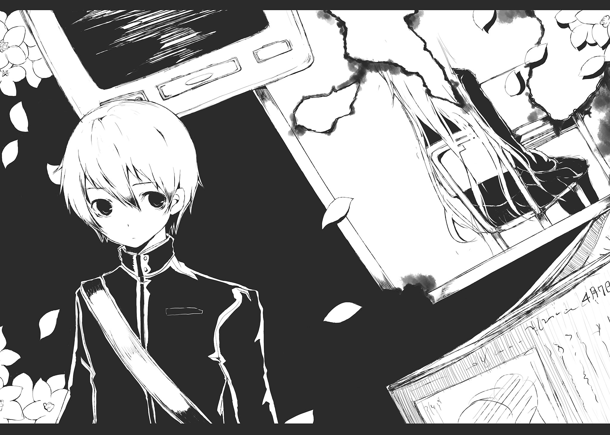

| 空ろの箱と零のマリア | |
| 御影瑛路 | |
本書（電子版）に掲載されているコンテンツ（ソフトウェア／プログラム／データ／情報を含む）の著作権およびその他の権利は、すべて株式会社ＫＡＤＯＫＡＷＡおよび正当な権利を有する第三者に帰属しています。
法律の定めがある場合または権利者の明示的な承諾がある場合を除き、これらのコンテンツを複製・転載、改変・編集、翻案・翻訳、放送・出版、公衆送信（送信可能化を含む）・再配信、販売・頒布、貸与等に使用することはできません。
忘れたわけじゃないんだ。たぶん、僕はそこがどこだか憶えているし、実際にこうやって風景付きの夢を見ている。
それなのに、僕はこの光景を、夢以外で思い出せない。
忘れたわけじゃない。そうじゃなくて、この記憶を引き出すための取っ掛かりがないんだ。思い出す機会が現実のどこにもない。きっと思い出そうとすれば思い出せるのに、そうやって振り返る余地を与えない。
だってこの目の前の相手が、僕がいる日常のどこにも引っかからない。
「願い事はあるかい？」
そう穏やかな声で問いかける彼（彼女？）の顔はクルクルと色んな顔に変わる。夢を作っている僕の深層心理が、彼の顔を固定できない。確かに見たはずのその顔は、どんな人にも似ているようで、どんな人にも似ていなかった。
たぶん僕は何の変哲もない無難な回答でもしたのだろう。だからどんな返答をしたのかは憶えていない。それでもその人は、僕の返答を聞いて、入れ物のようなモノを僕へと差し出した。
「これは、どんな願い事でも叶える〝箱〟だよ」
言われてみるとそれは箱に見えた。
目を細めて箱を見る。僕の視力は悪くない。なのに、近くにあるはずのその箱が、どうにもはっきり見えない。中身は空っぽ。そのことにすごい違和感。重みがあって、振ると音がする未開封のクッキーの箱が、開けてみると空っぽだったみたいに。
そして確か僕は、「どうして僕にこんなものを？」なんてつまらない質問をした。
「君が実におもしろいからだよ。私は個性のない君たちの些細な相異を区別できない。その人をその人と認識できない。こんなにも君たちに興味があるのにね。皮肉なものだよ」
彼が何を言ってるのか理解できなかったけれど、適当に頷いた。
「だが、君は判別できる。それだけのことと思うかもしれないが、それは私の気を惹くには十分な条件なんだよ」
僕は箱の底を見た。そこに何があるわけでもないのに、全身がその箱の底に引っ張られるような気持ち悪い感覚に襲われる。見るのをすぐにやめる。
「どんな願い事でもこの〝箱〟を使えば叶うよ。どんな願いだって構わない。それがすべての人間を不幸にするものでも私は干渉しない。私はただ君が、君たちが、どんな願い事をするのか見たいだけなんだ」
僕が何かを言うと、彼は微笑した。
「ふふ......いやいや特別な力などではないんだよ。そもそも人間には明確にイメージを持つこと、それ自体で願いを叶える力があるんだから。私はその力を少しだけ後押しすることができるだけなんだ」
僕は箱を受け取った。
もちろんそのことは、この夢が終われば思い出せない。
でも僕が彼のことをどういう風に思ったのかだけははっきりと憶えていて、この夢の中でも彼に対する印象は変わらない。
なんかこの人──
──気持ち悪くない？
１回目
「音無彩矢です。よろしくお願いします」
転校生はわずかに微笑を浮かべて言った。
２３回目
「音無彩矢だ。......よろしく」
転校生は淡々と感情を込めず口にした。
１０５０回目
「音無彩矢だ」
転校生はつまらなそうに誰にも視線を合わせずに吐き捨てた。
１３１１８回目
教壇の上に立つ、音無彩矢という名の、名前をまだ知らない転校生を見る。
「音無彩矢だ」
転校生はクラスメイトに向かって、ただそれだけを呟いた。聞こえなくても構わないと言わんばかりの声量で。だけどよく通る透き通った声で。
──うん。名前、知ってるよ。もちろんその名前は初めて聞いたけど。
誰もが息を潜めていた。そのあまりにも無愛想で、挨拶にもなっていない、簡潔な自己紹介に対してじゃない。たぶん単純に、彼女がそこにいるだけで異質であるような、絶世の美少女だったからだ。
誰もがそんな彼女の、次の一言を待っていた。
彼女は口を開いた。
「星野一輝」
「──え？」
なぜか僕の名前を呼んだ。クラス中の視線が、その理由を求めるように僕に集まる。そんな風に見られても、僕だってその理由が分からない。
「私はお前を壊すために、ここにいる」
彼女は突然、そんなことを言い出す。
「これが１３１１８回目の〝転校〟だ。その数には私もいい加減いらだっている。なので、今回は気晴らしに宣戦布告しておく」
クラスメイトたちが呆気にとられていることもまったく意に介さず、彼女は僕だけをしっかりと見据える。
「星野一輝。私はお前を屈服させる。早々にお前の最も大切なものを、私に差し出すがいい。抵抗は無意味だ。なぜか？ そんなことは簡単だ。私は──」
音無彩矢は、微笑みを浮かべて、続きを言った。
「──どんなに時を経ても、お前の側にいるからだ」
１０８７６回目
『３月２日』だ。今日は『３月２日』のはずだ。
なんでこんなこと、頭の中で確認しているのだろう？
......きっと三月のくせに、こんなに曇り空が続いているからだ。たぶんそうだ。ちょっと憂鬱になるくらい青空が隠れ続けている、最近の空模様のせいだ。
まったくいつになったら晴れるんだろう？
授業開始前の教室。窓の外を見てそんなおもしろみのないことを思う。
きっと気分が悪いからそんなことを思ってしまうんだ。いや、体調は悪くない。いつも通りだ。だけど、何か......気味が悪い。なかなかいい表現ができないけれど、気がついたらなぜか僕の後ろにだけ影がないみたいな、そんなどちらかと言えば違和感に近い気味の悪さ。
......おかしいな、原因が分からない。昨日何か特別なことがあったわけでもないし、朝食も食べてきたし、お気に入りのアーティストの新譜も電車の中で聴いてきたし、たまたま見たテレビの占いも無難に五位だ。
まあ考えても分からないし、うまい棒でも食べよう。今日の味はブタキムチ。一口かじる。それにしても、いくら食べても飽きない食感だ。
「またうまい棒かよー。飽きないねえ。そんな毎日うまい棒食べてたら、血がうまい棒色になるよ？」
「......ええと、それってどんな色？」
「そんなのあたしが知るか」
こんないい加減なことを言っているのは、クラスメイトの桐野心音だ。セミロングとロングの中間ぐらいの茶色い髪は、頭の高い位置中央で一つに結わえてある。頻繁に髪型を変える心音だけど、最近はその髪型がお気に入りなのか、しばらくその髪型しか見ていない気がする。
その心音は、勝手に僕の隣の席を占領して、水色の手鏡を覗き込みながら、男の僕にはよく分からない道具でメイクしている。化粧以外のことも、それぐらい集中してやればいいのにってぐらい一生懸命に。
「そういえば心音ってブルー系の持ち物多いよね？」
「ああうん、青が好きだからね。......あ、そうだカズくん。今日のあたし、何か違うと思わない？ ない？」
心音は突然そんなことを言って、目を輝かせて僕を見る。
「ん......？」
何だろう？ そんなこと突然言われても、分かるわけない。
「ヒント！ あたしのチャームポイントに変化が！」
「え？」
思わず胸を見る。
「おいこら！ 何で胸か！」
だっていつもＤを超えたとか自慢してくるからてっきり。
「あたしのチャームはぱっちり二重のお目々に決まってるでしょうが！ そもそも胸が突然大きくなるか！ それが望みか！ このムッツリ！ おっぱいマニア！」
「......すみません」
そんな自称チャームポイントを知るわけがないけど、とりあえず謝る僕。
「......で、どう？」
期待に満ちた目で僕を真っ直ぐ見てくる心音。確かに心音の目は大きい。そんなことを意識したら、ちょっと照れくさくなってしまう。
「............いつもと同じ顔だけど？」
だからあまり心音の顔を見ないでそんなことを言う。
「え？ なに？ いつもと同じかわいい顔だって？」
「うん、言ってない」
「言えよ！」
強要された。
「実はね、今日のあたしマスカラ使ってるの。ねえどう？ どう？」
と言っても、僕には変化が分からない。昨日との変化なんて分かりゃしない。
「............いや、分かるわけないし、そんなの」
で、正直に言って、失敗した。
「『そんなの』......だとぅ!?」
殴られる。
「痛い......」
「ち！ 貴様はつまらん奴だ！」
わざとらしい口調で言うけれど......あ、ちょっとこれ本気で怒ってるかもしれない。心音は唾を吐き捨てるジェスチャーをして、僕から離れて、他のクラスメイトにマスカラを付けた顔を見せびらかしている。
「はあ......」
どっと疲れた。心音は楽しいけれど、そのテンションについていけない。
「痴話喧嘩は終わったか？」
振り向くと、まず右耳の三つのピアスが目に入る。この高校で、こんな格好をしているのは一人しかいない。
「......醍哉。これは別に痴話喧嘩じゃないよ。どこをどう見たらそうなるんだよ」
だけど友人の大嶺醍哉は、そんな僕の反論を鼻で笑って軽く流す。うん、今日も変わらず不遜だ。まあ、こんな銀色の髪で、アクセサリーをジャラジャラ付けて、校則を無視するどころか敢えて挑戦しているような人が、へりくだる態度を取っていても変だけど。
「しかし本当にマスカラに気付かなかったのか？ あいつに心底興味のない俺でも分かる変化だぜ？」
「............そう？」
家が隣同士で、幼稚園からの幼馴染みらしい心音に対して興味がないなんて噓に決まってる。それでも他人に関心がなく、人の顔を見ているだなんて思えない醍哉が気付いたことに気付けなかったのは、ちょっと問題かもしれない。
「......でもなあ」
昨日もそのマスカラ、付けていた気がするんだ。
「なるほど、そうかカズ。お前はあのビッチに『あなたに興味がありません』と意思を表明していたんだな。共感できる行動だな。俺でも同じ態度を取る。だがもっと露骨にやる」
「この性悪委員長！ ばっちり聞こえてるからね！」
醍哉はそんな地獄耳女子を完全無視して、僕との会話を続ける。
「カズ、あんなどうでもいいのはいいが、お前今日転校生が来るって知ってるか？」
「転校生？」
また確認するけど今日は『３月２日』だ。なんでまた、この中途半端な時期に転校なんてしてくるのだろう？
「転校生！ それホント!?」
やっぱりその会話も聞いていた心音が、声を張り上げて聞いてくる。
「キリ。お前には話しかけてない。遠くから絡んでくるな。ああ、でも決して近寄るなよ。その必死に作り上げた薄汚い面が視界に入ると、精神衛生上良くないからな」
「な、なんだとー!! 醍哉、アンタこそ、その歪んだ性格を矯正する手段をそろそろ本気で考えれば！ 四十六時間ぐらい逆さ吊りにでもされれば、ようやく頭に血が回ってまともなことが言えるようになるんじゃないの？」
もう本当に二人とも口が悪いなあ。僕は二人の罵り合いを止めるために、ちょっと大きく声を張り上げて、話題を戻す。
「転校生でしょ？ たぶん聞いたよ」
その言葉に、もくろみ通り醍哉は口をつぐみ、僕をじっと見る。
「......誰に聞いたんだ？」
そして真面目な顔でそんなことを聞いた。
「ん？ どうして？」
「質問に質問で返すな」
「ええと......誰にだっけ。醍哉じゃなかった？」
「そんなわけはない。俺が転校生のことを知ったのは、さっき所用で職員室に行ったときだ。カズに話す機会なんてなかったはずだ」
「そう？」
「この手の噂はすぐに広まる。それなのに噂好きのキリさえも知らなかったようだ」
さっきの様子を窺う限り、そうみたいだ。それどころか１年６組のクラスメイトは誰も知らなかったように見える。
「だからおそらく、転校当日の今日まで、情報は伏せられていたんだろう。それなのに、どうしてお前が知ってる？」
「......ええと？」
何でだろう？
「まあいい。それにしても妙じゃないか、カズ？ なんでこんな時期に、転校生なんかがやってくるんだと思う？ 俺は何らかの事情があると見た。例えば相当の問題児で、他の学校を追い出された理事長の娘ってのはどうだ？ それならこの時期の転校も、情報が伏せられていたことも合点がいく」
「醍哉、勝手な推測で転校生に偏見を持つのはよくないよ。ただでさえ、いろいろ邪推される立場なんだからさ。みんな密かに聞き耳立ててるし」
その言葉に実際聞き耳を立てていた何人かのクラスメイトが苦笑いする。
「あ？ そんなの俺の知ったことか」
うわあ......。
醍哉の高圧的な態度に思わず溜息を吐いたと同時に、チャイムが鳴った。クラスメイトたちはぼちぼち席に着き出す。
廊下側の席に座った心音が、窓を開けて身体を乗り出した。例の転校生をいち早く見ようとしているみたいだ。
「おっ」
それらしき人物でも発見したのか、心音はそんな声を上げる。楽しそうに覗き込んでいた心音だったけど、突然「うわっ」と声を上げてその表情を固まらせ、椅子に座る。
どうしたんだろう？
笑みを浮かべて「すごいよ」と呟く心音。たぶん僕だけじゃなくみんなどういうことか尋ねたかったけれど、すぐに担任の小久保先生が教室に入ってきた。扉の曇りガラスの向こうに、女子生徒らしき人影が映る。きっとあれが転校生だ。教室の様子を見て、クラスメイトみんなが扉の向こうを気にしている様子を察した先生は、すぐに転校生を呼ぶ。
曇りガラスの向こうのシルエットが動いた。
そうして僕は──彼女を見た。
瞬間──
まるで崖の上から突き落とされたように、突然場面が変わった。
まず音が聞こえた。カリカリカリカリと、削るように風景がめくれる音。強制的に暴力的に割り込んでくる場面場面。何度も何度も現れる似たような光景。僕の意識を飛ばそうとして、だけど無理矢理引き戻し、小さな鉄の箱に押し込めるようにぎゅうぎゅう詰めにして固定する。既視感。既視感。既視感。
「音無彩矢です」聞いた。
「音無彩矢だ」聞いた。
「音無彩矢だ」だから聞いたって。
膨大な情報が割り込もうとするから僕は拒絶する。だって入るわけがない。脳が食あたりする。消化し切れない。
「あ......」
僕は、
何を──意味の分からないことを。
意味が分からないことを自覚した故に、僕はその思考を閉ざして────元通り。
あれ？ 僕は何を考えていたんだっけ？
忘れた僕は、正面に向き直って、彼女を見る。音無彩矢という名の、名前をまだ知らない転校生を見る。
「音無彩矢だ」
転校生はただそれだけ呟いた。聞こえなくても構わないと言わんばかりの声量で。
音無彩矢は教壇から降りる。
あまりに簡潔な自己紹介に、クラスメイトたちはざわめき始める。
そんなクラスメイトたちの戸惑いなんてまったく意に介さない様子で、彼女は歩いてくる。
僕に向かって。
しっかりと僕の顔を見て。
まるで音無彩矢のためにあてがわれたみたいに空席の、僕の隣の席に、彼女は当然のように座る。
その様子を黙って見ているしかなかった僕を、音無さんは怪訝そうに見ていた。
......何か言った方がいいかもしれない。
「............あの、よろしく」
だけど彼女のしかめた顔は変わらない。
「それだけか？」
「え......？」
「それだけか、と聞いたのだ」
他に何か？ そんなこと言われても思い付かない。だって音無さんとは初対面なんだ。
だけど何かを言わなければいけない雰囲気。
「............えと、制服、前の学校の？」
無理矢理絞り出した言葉に、音無さんは何の反応もしないで、じっと僕を見つめている。
「......えっと？」
困惑している僕を見て、なぜか音無さんは溜息を吐いて、笑みを浮かべた。まるで聞き分けの悪い子供に呆れているみたいな笑みだ。
「いいことを教えてやろう、星野」
......あれ？ 僕、名乗ってないのに。
だけどそんな驚きなんて、些細なものだった。音無さんはその後、僕を五秒間完全に静止させるとんでもない言葉を吐く。
「今日の茂木霞のパンツの色は水色だ」

茂木霞の体育の授業での基本スタイルは体操着ではなく制服だ。
今日も茂木さんは、制服姿で置物みたいに表情をほとんど変えないで、男子のサッカーを観戦している。
制服のスカートから伸びる茂木さんの足は白くて、今にも折れてしまいそうなほどに細い。
そうして、なぜかその足に、僕は膝枕をされていた。
ああ、うん。僕ももう、何が何だか分からない。幸せな気もするけど、そんなものを嚙み締める余裕なんてなくて、ただひたすら鼻にティッシュを押し当て、鼻血を止めることに集中してる。そうしないとどうにかなっちゃいそうだから。
どうしてこういう流れになったのかは、一応憶えてる。音無さんのせいで集中力を失った僕は、サッカーボールを顔面に受けて鼻血を出した。心配してくれた茂木さんが、どういうわけか僕に膝枕までしてくれた。
茂木さんの足は、柔らかさなんて全然なくて、正直ちょっと痛い。
どうしてここまでしてくれるんだろう？ 茂木さんを見上げるけれど、その無表情からは何も分からない。
でも、うれしい。
どうしようもなく、うれしい。
音無さんのあの『パンツ』発言。
もちろん僕は驚いた。その脈絡のなさと意外性にだけじゃない。だって音無さんは「いいことを教えてやる」と言った。他でもない僕に『茂木霞』の情報を『いいこと』だと。
どういうわけか茂木さんへの恋心は醍哉にも心音にもバレていない。それなのに今日知り合ったばかりであるはずの音無さんが、僕の気持ちに気付いているわけがないんだ。にもかかわらず、音無さんはあんな発言をした。
「............ねえ、茂木さん」
「なに？」
茂木さんは小さい声で返事をする。全体的に小柄で華奢な茂木さんにはピッタリの、小鳥のような声。
「今日さ、音無さんに話しかけられたりした？」
「......転校生の音無さん？ ......ううん」
「知り合いってわけじゃないよね？」
茂木さんはこくりと頷く。
「何か不審なこととかされた？」
ちょっとだけ考えて、頭をふるふる振る。軽くウェーブのかかった髪の毛が揺れる。
「どうして、そんなこと......？」
小首を傾げて尋ねる。
「ん、いや......特にないんならいいんだ」
グラウンドに目を向けると、音無さんはボールにも、ボールに群がる女子生徒たちにも興味のない様子で、校庭の真ん中で一人仁王立ちしていた。たまたま正面に転がってきたボールを、音無さんはちょこんと蹴って渡す。......その人、敵チームみたいだけど？
「うーん」
もしかしたら、僕の気持ちに気付かれたなんて、考えすぎかもしれない。
音無さんはその外見、態度だけでインパクトがある。そんな相手にいきなりあんなことを言われたから、深読みしてしまっただけ。誰もが納得する理屈だ。
それなのに──どうして、僕はそれを信じられない？
音無さんがこちらを見た。
そしてそのまま、視線を逸らさない。
しっかり僕を見据えたままで。不敵に口の端を上げて。まだ授業の終わりには早いのにこちらに向かって歩いてくる。
いつの間にか僕は立ち上がっていた。これ以上ない幸せであるはずの、茂木さんの膝枕の権利を放棄して。全身震え上がっている。比喩ではなくて、本当に身体が震えている。
茂木さんも音無さんが近づいてきたことに気付いたのか、不安そうに顔を強ばらせて、僕に続いて立ち上がる。
彼女は、不敵な笑みを浮かべたまま、僕へ......いや茂木さんをいきなり指さした。
途端だった。
突風が吹いた。本当に何の前触れもない突風だった。予測ができるわけがない突風だった。
その突風で、茂木さんのスカートがめくれた。
「～～～っ!!」
すぐに茂木さんはスカートを手で押さえた。でも前だけ。僕は後ろにいる。すぐに突風はやみ、茂木さんは振り返って僕を見る。いつも通りの無表情なんだけど、心なしか頰が少し赤い。口を「見た？」と動かす。いや、喋ったのかもしれないけれど、少なくとも僕には聞き取れないぐらいの小声。必死に首を振る。たぶんその必死さで見たことがバレバレ。でも茂木さんは何も言えずに、ただうつむくだけ。
音無さんは僕のすぐ側にやってきていた。
僕はその表情を見る。
「ああ──」
そしてようやく、自分がこんなにも震えている理由を知る。その表情に含まれているものを読み取ってしまった。今までの人生で、一度も向けられたことのない感情。
──敵意。
なんで？ なんで僕なんかを？
音無さんは、口の端を上げて僕を睨み付ける。動けずにただ震えている僕の肩に手を置いて、耳元に唇を近づける。
「水色だっただろう？」
音無さんは、すべて分かっていた。僕の茂木さんへの好意も、突風で僕の前にパンツが晒されることも、全部分かっていた。
この言葉は、冗談なんかじゃない。これは僕を理解し、把握し、支配していることを当てつけるための──脅迫。
「星野、さすがにもう思い出しただろう？」
硬直している僕を、音無さんはじっと観察する。しばらくそうしていたけれど、僕が何も返してこないことに呆れてか、視線を落として溜息を吐く。
「ここまでしても駄目だとは......今日のお前は一段と愚鈍だな」
愚痴を言うように呟く。
「忘れたのならば憶えておけ。私の名前は『マリア』だ」
......『マリア』？ いや、あの......あなたは『音無彩矢』でしょう？
「......そ、それって、ペンネームか何か？」
「黙れ」
いらだちを隠そうともしないで僕を睨み付ける。
「まあいい。お前がそれでは張り合いはないが、勝手にやらせてもらう」
音無さんはそう言って、背を向ける。
「あ、待って......」
呼び止めてしまった。彼女はめんどくさそうに振り返る。その眉間にしわを寄せた顔に、思わずたじろぐ。
よく分からない。だけど、音無さんの様子から察するに、もしかして──
「もしかして僕ら、昔会ったことあるの？」
その言葉を聞いて、音無さんは口の端を上げる。
「ああ、前世で恋人同士だった。愛しのハサウェイ、そのお前がこのざまとはまったく情けない。かつて敵国の姫である私をさらいに来たときのお前は、そんな腑抜けではなかった」
「............ええ、と？」
呆気にとられる。そんな僕を見て満足したのか、音無さんは今日初めて、笑顔らしい笑顔を見せる。
「冗談だ」
次の日。
僕は音無彩矢の死体を見た。
８９４６回目
僕の言葉に、茂木さんは沈痛な表情で、ずいぶんと考え込んで、本当に苦しそうに言葉を吐き出した。
「明日まで待って」
２６０１回目
「音無彩矢だ」
転校生はそれだけ呟いた。
「やばいよ！ あれはやばい！」
隣の席に座る友人、臼井陽明が、二時限目の授業中にもかかわらず結構大きな声でそんなことを言って、僕の背中をバンバンと音が出るほど叩く。
痛いんですけど。あと、クラスメイトの視線が恥ずかしいんですけど。
振り返って後ろを見ている陽明の視線の先には、転校生、音無彩矢の姿。
「目が合っちゃったぜ、やべえ」
「そりゃわざわざ振り返って見てれば、たまには目も合うよ」
「ホッシーはロマンのない奴だ」
何だよロマンって。
「それにしてもきれいすぎる！ あのまま美術品として世に出せるな......。そして国宝認定だ。駄目だ。俺、もう心を奪われた......。告白するわ」
早っ！
チャイムが鳴る。号令に従って礼をすると、陽明は着席もせずに、音無さんの元に向かう。
「音無彩矢さん！ 一目惚れしました。好きです！」
うわあ、本当に言ってる......。
音無さんの返事は聞こえなかったけれど、陽明の表情で結果なんてすぐに分かる。あ、いや......表情なんて見なくても分かるか。
陽明が僕の席の前に戻ってくる。
「バカな......俺が振られるとは」
なんで成功すると思ったんだ......。本気で言ってるように見えるから恐い。
「当たり前でしょ。いきなり告白しても気持ち悪がられるのがオチだよ」
「む。それもそうだ。じゃあまた告白しよう。次はいきなりではないからな。いつかはこの想いが届くに違いない」
そのポジティブさ、羨ましいと思う反面、欲しくはないとも思う。
「何を愉快なことをしているんだ、お前らは。俺にしてみたら割合おもしろい娯楽だが、女子は軽蔑のまなざしで見てるぞ」
醍哉がやってきて、そんなことを言う。
「ええ！ 軽蔑されるのは陽明だけのはずでしょ!?」
「いやお前もだ。同じ穴の狢だと女子は見ている」
「ほほう、俺と同じ穴の狢？ 名誉じゃないかホッシー」
ふ、不本意すぎる......。
「それよかさダイヤン。さすがのダイヤンでもアレには手を出したくなるべ？」
陽明はそうやって肘で醍哉を小突く。醍哉相手に恐れ多くもそんなことができるのは、幼馴染みのせいか、陽明の後先考えない性格のせいか。
醍哉は溜息を吐いて即答する。
「ないな」
「あり得ない！ じゃあダイヤンは誰に心ときめくというのか！」
「俺が音無の美貌に心を動かされる、動かされないは関係ない。美人であることは認めても、手を出したくはない」
「ふうん......？」
「陽明、お前何も理解してないだろ。まあお前みたいに顔が良ければ何でもオッケーみたいな本能で生きている猿野郎には理解できない感情だな」
「何だと！ そもそもなんで容姿重視が本能に関係するんだよ！」
「生まれる子供の容姿がいいことは子孫繁栄に繫がるから、容姿のいい相手に惹かれるのは本能的なんだよ」
「おお」「おお」陽明と一緒に感嘆してしまう僕。そんなことも分からないのかと、心底呆れた顔をする醍哉。
「はあ、分かったぜ、ダイヤン！ つまり、彩矢ちゃんはさすがのダイヤンでも高嶺の花すぎて手を出せないってことだな！ 玉砕必至だから！ あれだな？ 狐が手の届かないところにあるブドウを手に入れられないことが分かって、『あのブドウは酸っぱいんだ』と思うことにするやつだな。合理化ってやつだ。かっこ悪い！ かっこ悪いよダイヤン！」
「お前は一体俺の話の何を聞いていたのか。......だが、前半の発言はあながち間違っていないな。後半は万死に値するが」
「ほほう、やっぱり手が出ないと」
したり顔の陽明をついに醍哉は殴った。うわあ、今まで我慢してた分か、もろ顔に行ったよ。
「俺が手を出せないんじゃない。あいつが手を出してこないのさ」
「なにその自惚れ勘違い発言。なあホッシー、こいつちょっと自分が美形だからって調子に乗ってるよな？」
陽明はまったく懲りる様子もなく、遠慮ない発言をする。
「俺が高嶺の花だから向こうが手を出さないってわけじゃねえ。まあそれは事実としてあるにしてもあいつには当てはまらない」
「うわあ、臆面もなく何か言ってる」
「あいつは俺を高嶺の花だなんて思ったりしないし、そんな分類なんてしていない。そもそも俺たちに興味を持っていない。見下してすらいない。俺たちが虫を虫としか認識しないみたいに、人を人としか認識していない。そんな感じだ。俺の顔がいいだとか、陽明の顔が破綻しているだとか、そんな些細な差違なんて気にしちゃいない。俺たちがゴキブリの雄とゴキブリの雌の認識を放棄しているみたいにな。そんな相手にどう手を出せっていうんだ？」
音無さんに対するあまりに容赦ない物言いに、さすがの陽明も何を言っていいのか分からずに押し黙る。
「......醍哉」
だから僕が口を開く。
「意外と音無さんに興味持ったんだね」
醍哉は言葉を失う。あ、すごいレアな反応。だってそういうことだ。醍哉の見解が合っているか合っていないかは別にして、ある程度観察しなければそんな分析はできない。
「......ち、興味ねえよ！」
「照れちゃって」
「......おいカズ。お前はもうすぐ俺の地雷を踏むぜ。想像を絶する長ネギの使い方で、ネギを見るとじんま疹が出るほどのＰＴＳＤにしてやろうか？」
結構本気で醍哉が怒っているのが分かったので、笑ってごまかすことにした。
ともかく、どうやら醍哉は、音無さんに苦手意識を持っているみたいだ。
「感覚が昆虫のごとく鈍いお前らでも、あいつの異常さにはすぐに気付くさ」
ちょっとだけ負け惜しみみたいに聞こえた。
でもそんなことなかった。
だって、醍哉の言うとおりだったから。
帰りのホームルームが終わった直後に、音無さんはいきなり手を挙げた。担任の小久保先生がその挙手に気付くと、了承どころか返答さえ待たずに立ち上がり、言葉を発した。
「これから１年６組の皆にやってもらうことがある」
唖然としている僕らを意に介さず、音無さんはそのまま続ける。
「これから五分ほど時間をもらう。それぐらい構わないだろう？」
誰からも反応は返ってきていないけれど、音無さんは教壇に向かう。そして、ごく自然に小久保先生を教室から追い出す。異常な光景であるはずなのに、ごく普通のことのように感じてしまう。周りの反応を見る限り、たぶん他のクラスメイトたちも同じだろう。
ざわめきもせずに、ただただ静まりかえる教室。
教壇に立った音無さんは、真っ直ぐに前を向いて、口を開く。
「これから『あること』を書いてもらう」
音無さんは一旦教壇を降りて、前の席の生徒に何かを渡す。受け取った生徒たちは、普段配布物を全員に回すときと同じ要領で、その何かを一枚取り、残りを後ろの席の生徒に回す。
僕にも回ってくる。何の変哲もない無地の十センチ四方ほどに切られた再生紙だ。
「書き終わったら私に持ってきてくれ。それで終わりだ」
「『あること』って？」
心音がみんなを代表して尋ねると、音無さんは簡潔に答えた。
「私の名前だ」
ようやく異常に静まりかえっていた教室がざわめき始める。無理もない。だって意味が分からない。名前？ そんなのみんな知ってる。今朝教室で名乗った。『音無彩矢』と名乗った。
「くだらねえ」
誰かが吐き捨てた。こんなことを音無さんに対して言えるのは一人しかいない。
大嶺醍哉。
クラスメイトたちは一斉に息を呑む。このクラスのみんなは、醍哉を敵に回してはいけないことを知ってるからだ。
「お前の名前は音無彩矢だろうが。それを書かせてどうするってんだ？ そんなに自分の名前を早く憶えて欲しいのか？」
そんな言われ方をしても、音無さんは平然としている。
「俺は『音無彩矢』って書くだけだ。どっちにしろ今口頭で伝えた。もう書く必要ねえだろ？」
「ああ、構わない」
簡単に肯定されたのが予想外だったのか、醍哉は返す言葉を失う。
そして舌打ちすると、わざとらしく音を立てて紙を破いて、教室を出て行く。
「どうした？ 早く書いてくれないか？」
みんなは書き出せない。無理もない。いまいち表情に出せずにいるが、驚いて、圧倒されている。あの醍哉をやりこめてしまった。それがどれだけのことか、醍哉のクラスメイトである僕らは散々思い知っている。
しばらく誰も何もできなかった。だけどシャープペンで誰かが書く音が響くと、その音に続くように、色んな場所から同じ音が聞こえ始める。
音無さんの意図なんて、たぶんみんな分かってない。でも関係ない。だって結局書けることは一つしかない。
『音無彩矢』という名前だけしかない。
初めに音無さんの元に紙を持っていったのは、陽明だった。陽明が席を立ったのを見て、それに何人も続く。陽明から紙を受け取った音無さんの表情は特に変わらない。
たぶん......外れなんだ。
「陽明」
僕は、茂木さんと一言二言話していた陽明がこちらに来るのを見て、呼び止める。
「何だよホッシー？」
「なんて書いたの？」
「ん？ ま、『音無彩矢』としか書けないっしょ。ちょっと『矢』を付け忘れかけたけど」
そう言った陽明は、なぜかちょっと寂しそうだった。
「......まあ、そう書くしかないよね」
「さっさと書いちまえよ」
「でも、そんなこと書かせたくて、音無さんはこんなことをしたのかなあ？」
だとしたら、この行動にあまり意味があるとは思えない。
その僕の疑問に、陽明は素早く、
「違うだろ」
と断言した。
「え？ だって......陽明は『音無彩矢』って書いたんでしょ？」
「まあな。......あのさ、ダイヤンってなんか冗談みたいに頭いいだろ？ 性格は対照的に冗談にならないぐらい悪いけど」
突然そんなことを言い出したので、僕は首をかしげる。
「そのあいつがさ、『音無彩矢』って書くだけだ、って言ったんだ。他に書くことを思い付けなかったんだ。もちろん俺もそうだ。だからさ、何も思い当たらない俺らに、他に書けることはないんだよ」
「何も思い当たらない......と、書けない」
「そうそう。つまりさ、この行為は俺らに向けた行為ではないわけ」
陽明の言葉はすごく的を射ている気がする。きっと当たってる。
つまり音無さんは、クラスメイトの大部分を無視して、その何かが思い当たる誰かに向けて、こんなことをしている。
陽明がさっき寂しそうな顔をした意味が分かった。だって陽明は、音無さんに一目惚れしたんだ。冗談めかしてあんなやり方をしたけど、他に告白した相手を僕は知らないから、それなりに本気なのだろう。
だけど相手にされていない。存在を無視されている。......醍哉が宣告した通りに。
「......陽明って意外と頭いいね」
「『意外と』が超余計」
確かに失礼なことを言ったなあ、という気まずさを隠すために笑顔を浮かべると、陽明も苦笑いで返してくれる。
「じゃあな。俺、早く行かないと先輩に殺されるから。いや大げさでなくて」
「あ、うん。頑張って」
ぼちぼち強い野球部は大変だ。
僕はまだ何も書いていない紙と向き合う。『音無彩矢』とだけ書こうとして、でもやっぱり書き出せない。
僕は音無さんを見つめる。他のクラスメイトたちから渡された紙を見つめる音無さんの表情には、まったく変化がない。そこにあるのはやっぱり『音無彩矢』の名前なんだろう。
──何も思い当たらない人には何も書けることはない。
「────」
じゃあ僕はどうすればいいんだろう？
だって僕は思い付いてしまった。どういうわけか、『マリア』なんてあまりにふざけてる名前を思い付いてしまった。
いや、分かってる。僕の思考はどうかしてる。よりにもよって『マリア』だなんて、本当にどこから出てきたのか。こんなのを書いて音無さんに出しても、「ふざけるな」と一喝されるだけだ。
でも、もし、万が一、この回答を音無さんが望んでいるのだとしたら......？
僕は散々迷って、十センチ四方ほどの再生紙に書き始める。
『マリア』
立ち上がって、音無さんの元に向かう。もう列はない。僕が最後だったみたいだ。緊張しつつ、音無さんに紙を渡す。音無さんは無言で受け取る。
そして、そこに書かれた文字を見る。
音無さんの表情が、それはもう、露骨に変わった。
「......え？」
先生にも、醍哉にも、まったく感情を揺るがさずにいた音無さんが、目を見開いている？
「ふふふ......」
今度は笑い出した。
「星野」
「あ、僕の名前憶えててくれたんだ」
僕は瞬時に後悔した。だって、笑い声を消した音無さんは、僕を親の敵のごとく睨んでいる。
「......貴様......ふざけるな」
怒りを堪えるのがせいいっぱいなのか、押し殺した声で言う。「ふざけるな」と言われるとは予想していたけど、こんな口調で言われるとは想像していない。
思いっきり胸ぐらを摑まれる。
「わ！ ご、ごめんなさい！ ふ、ふざけてたわけじゃ......」
「ふざけていないで、こんな回答ができると？」
「......ええと、あの、そう......ですね、ふざけていたのかも」
それがとどめだったのかもしれない。
僕は胸ぐらを摑まれたまま、校舎裏に拉致された。
「星野、お前は私を舐めているのか？」
音無さんは校舎の壁に僕を押し付けて、睨み付ける。
「私は策を講ずるのは得意ではない。自覚している。私の作戦は『犯人、名乗り出ろ』と言っているのと同じ愚策だ。いや策とも言えない。なのに......何を引っかかっているのだお前は！ しかもこれは二回目だぞ！ 一回目はまるっきり無視をしておいて！」
手こそ離してくれたけれど、その視線だけで僕は十分に身動きが取れない。
音無さんはそんな僕を見て唇を嚙み締めて、溜息を吐く。
「......いや、あまりに達成感もなく足がかりを摑んだから逆上してしまったが、事態は確実に好転しているのだからむしろ私は喜ぶべきなのか」
「......そう、だね。喜ぶべきだよ、ははは」
僕の愛想笑いに、音無さんはまた恐い顔で睨み付ける。黙っていた方が良さそうだ。
「......解せない。おそらく私の執念に根負けしたのだと思ったが......なんだその何も考えてなさそうな気楽な顔は」
何も考えてないというより、何を言っているか分からないのだけど。
「お前は２６００回、私を無視し続けた。私はどれだけこの終わりのない反復を繰り返そうが屈服しない。だが、それでも疲労はする。それはお前も同じのはずなのに、どうしてそうも余裕なのだ」
どうしよう......まったく意味が分からない。
ようやくその言葉に困惑していることに気付いてくれたのか、音無さんは怪訝そうに僕を見る。
「............もしや、自覚がないのか？」
「自覚？ 何の自覚？」
「......いいだろう。演技だろうとそうでなかろうと、説明することに格段弊害はない。そうだな、簡単にまとめると──私はすでに２６０１回〝転校〟している」
そんなことを言われても、僕には呆然とすることしかできない。
「演技だとしたら大したものだな。確かに『知らない』のならば、そういうマヌケ面をするしかないだろう。まあいい。私の把握している限り、説明してやる。そうだな──今日は、３月２日だな？」
頷く。
「３月２日を２６０１回繰り返していると言えれば楽なのだが、そういうわけではない。だから正確な表現とは言えないが、〝転校〟という表現を使っている」
「はあ......」
「私は２日の朝６時27分に２６０１回戻されている」
「............」
「戻されているというのは、私の主観では正しい表現だが、実際は正しくない。だから敢えてまだ事実に近い〝転校〟という表現を使っているのだが──」
音無さんはポカンと開けた僕の口を見て、頭を掻く。
「ああもう！ 貴様はどれだけ愚鈍なのだ！ ６時27分以後に不都合があると、お前が都合良く『なかった』ことにしているんだろうが！」
業を煮やして叫ぶ。いやいや......そんなことを急に理解できる人がいるわけないよ？
「......よく分からないけど、何回も同じ時間を繰り返してるということ？」
自分でそう言葉に出した瞬間だった。
「あ──」
なんだ？ なんだこれ？
僕は襲いかかってくる巨大な違和感に、胸を押さえる。違和感なんて言葉じゃ生ぬるい、違和感。住んでいる街が、そのまま別の街にすげ替えられているのに、誰もが気付かずに平然と過ごしているのに気付いてしまったような、感覚。
記憶が蘇ったわけじゃない。僕は何も思い出せていない。
だけど、それが『あった』ことは、どうしてだか実感できる。
音無さんが言っていることは、真実だ。
どうしようもなく、ただの事実だ。
「ようやく理解したか」
「......ちょ、ちょっと待って」
３月２日を２６０１回やり直している。それだけでも僕を混乱させるのには十分なのに、音無さんはこんなことを言っている。
「──それを僕がやっている？」
「ああ」
音無さんは即答する。
「ど、どうして僕がそんなことを？」
「お前の動機を私が知るわけがない」
「僕はそんなことやってないよ！」
「だから自覚がないままやっているのだろう？」
どうして僕なんだよ？ そう尋ねかけて気付く。僕が音無さんに目を付けられた要因は一つしかない。
それは──紙に『マリア』と書いたこと。
「さっきまでのお前が繰り返しに無自覚だったように、本来ここにただ巻き込まれただけの人間には『なかった』ことになった過去を思い出す手段がないのだ。つまり、私がクラスの皆に以前言った『マリア』という名は、私以外には犯人しか書き得ない」
だけど僕はその名前を思い出せてしまった。確かに何の前触れもなく『マリア』なんて名前が出てくるなんて、普通考えられない。
「効果があるかは分からないが、私は常に他者の記憶に定着しそうな言動を心がけていた。私以外に『なかった』ことになった世界の記憶を持っているはずの犯人が、ボロを出すのを待っていた。あまり期待はしていなかったがな」
「......いつから僕を疑っていたの？ だって、『マリア』なんて名前をいつかの世界でわざわざ僕に教えたんでしょ？」
「お前みたいなもっとも害がなさそうな人間を、特別疑ったりはしない」
「じゃあ......？」
「ふん、時間は無限にあるのだから、しらみ潰しにその名を言ったに決まっているだろう」
時間は無限にある。
それが比喩だとは言い切れないのが、音無さんが過ごしてきた時間。
そうか。無限にあるような時間だから、音無さんは全員に名前を書かせるなんて、無謀な作戦に及んだ。わずかだけ『マリア』と誰かが書いてくれることを期待して。......いや期待なんてしていなかったかもしれない。２６０１回〝転校〟している間に打開策はとっくに尽き、新しい策を思い付くまでの、ただの時間潰しだったんだろう。こんな策でも、やらないよりはやった方が心理的に落ち着く。何しろ時間は無限に続くかもしれないのだ。
だからそんな策に引っかかった僕に、音無さんは腹が立った。ＲＰＧでどうしても倒せない敵キャラのためにレベルを上げまくっていたら、実はとあるアイテムを使えば楽に倒せたみたいな感じ。目的は達成できたが、それまでの労力を返してくれ、みたいな。
「......いや、変に気を抜いてしまったが、まだ油断していい状況ではないな。何しろ、まだ解決したわけではないのだから」
「そうなの？」
「それはそうだろう。お前には、事態が解決しているように見えるのか？ この連続の悪夢、〝拒絶する教室〟が終わったように見えるのか？」
〝拒絶する教室〟？ たぶん、この繰り返しの状況のことを指しているんだろう。
それにしても、一つだけ、どうしても気になる点がある。
「あのさ、僕が『マリア』という名前を書いたから、犯人扱いするのは分かるよ？ でもさ、そもそもどうして音無さんは、どうやってその〝拒絶する教室〟ってやつに巻き込まれないでいるの？」
「巻き込まれていないわけではない。私はしっかり〝拒絶する教室〟に巻き込まれている。もし私が憶えることを放棄し、諦めてしまえば、〝拒絶する教室〟に取り込まれてしまうだろう。他の奴らと同じように、ただ意味もなく繰り返し続けることになる。それは頭に乗せたコップの水をこぼすぐらい簡単なことだ。私たちは、お前が拒絶し続ける一日を永遠に繰り返すことになる」
「音無さんが忘れるだけで、そんなことになるの？」
「考えてもみろ。他にこの繰り返しに気付く可能性のある奴がいるか？ 仕掛け人であるはずのお前でさえ、繰り返しに無自覚なんだぞ」
......そうかもしれない。現にもう、２６０１回という数を繰り返しているわけだし。
「私が憶えていることを放棄するのは、確かに簡単なことではある。だが、絶対にそんなことは起こり得ない」
「......絶対？」
「ああ、絶対だ。私が諦めることなんてあり得ない。二千回だろうが、二万回だろうが、二億回だろうが私は超えて、目的を果たす」
二千回。僕は改めてその数を考えてみる。二千なんて数の単位としてはよく耳にする数字。でも実際に一つ、一つ積み上げていくものとすると......。例えば一年は３６５日、五年は１８２５日......まだ数字としては足りない。
それだけの時間を、音無さんは超えてきた。
「星野。お前がどうして〝拒絶する教室〟を作り出すことができたのか、それも分からないのか？」
「え？ ......うん」
「ふふ、なるほど。そこをはぐらかすために、何も知らないふりをしているのだとしたら、それは確かに意味がある。そうだとしたら、大した演技だ」
「え、演技なんかじゃないよ」
「それでは尋ねるが──」
音無さんは薄ら笑いを浮かべる。
「星野、お前──出遭っただろう？」
──誰に？
そんな当然の疑問さえ湧かなかった。その理由が分からなくて戸惑う。誰に遭った？ 分からない。憶えていない。
それなのに分かってしまう。
僕は、〝＊〟と出遭っている。
いつ？ どこで？ そんなことは当然のように分からない。そんなこと記憶にない。それなのに、出遭ったことだけは実感している。
思い出そうとする。すごい速度でシャッターが下りてきたみたいに、目の前で遮断される情報。ガンガンガンガン、この先に入ってはいけません。関係者以外立ち入り禁止です。
「ふふ、出遭ったようだな」
彼女はほくそ笑む。
音無さんは確信してしまった。そして僕自身も確信してしまった。
僕が、星野一輝が、この事態を引き起こしている張本人だ。
「お前はそいつに渡されたはずだ。お前の〝願い〟を一つだけ叶えてくれる〝箱〟を」
突然使われた〝箱〟という単語。文脈から察するに、〝箱〟というものが〝拒絶する教室〟を作り出した道具なのだろう。
「そうだ。私の目的を話していなかったな」
音無さんは、ほくそ笑んだままそれを口にする。
「私の目的は──〝箱〟を手にすること」
そして、笑みを消す。僕が〝箱〟を持っていることを確信している音無さんは、僕を冷たく睨み付けて、言い放つ。
「さあ、〝箱〟を差し出せ」
きっと僕は〝箱〟を持っているのだろう。
しかし、そう簡単に〝願い〟を叶えるこの〝箱〟を彼女に差し出してもいいのだろうか？
だって音無さんは〝箱〟を手にするために、２６０１回もの繰り返しに耐えている。そこまでしてでも叶えたい〝願い〟がある。僕の〝願い〟を蔑ろにして、〝箱〟を奪い取り、自分の〝願い〟を叶えたい。そういうことだ。
それは──異常なまでの、執着。
そうだ、異常だ。音無彩矢の在り方は異常だ。
「......出し方を知らない」
噓じゃない。だけどそれはせめてもの抵抗だった。
「そうか。なら思い出したら差し出してくれるということだな？」
「それは......」
「出し方を忘れているケースはよくある。だが忘れているだけで、知っている。自転車の乗り方を知っているように、誰かに教えることはできなくても感覚として知っているのだ。今、こうして言葉にできないから、戸惑っているだけでな」
「......〝箱〟を取り出さずに、〝拒絶する教室〟を終える手段はないの？」
そう聞いた僕を、音無さんは冷たく見る。
「私に渡す気はない。そう言いたいのか？」
「そ、そういうわけじゃないけど......」
僕のあからさまな狼狽に、音無さんは小さく溜息を吐く。
「そうだな。〝所有者〟本体ごと〝箱〟を潰せば、〝拒絶する教室〟は終わるだろう」
「〝所有者〟ごと潰す......？」
〝所有者〟というのは、おそらく〝箱〟を持っている犯人、つまり僕のことだろう。僕ごと潰す？ それはつまり──
音無さんは、感情を押し殺したように、淡々と言う。
「お前が死ねば、〝拒絶する教室〟は終わる」
だからって、『××』を用意しなくたっていいじゃないか。
それは、僕の未来の姿だって、そう言いたい？ だとしたら、こんな最悪な行為は他にない。さっさと僕をこうしてくれた方が幾分マシだとも思う。
３月３日の朝。雨、見通しの悪い十字路。
傘を投げ捨てた僕は、そこで『××』を見ている。他の物はまるで視界に入らない。塀に突っ込んでいるトラックも、佇んでいる音無さんももう目に入らない。赤い液体は、どんどん絶え間なく流れていて、雨では流れきらない。
頭部が半分欠けて、脳×が飛び出している、×体。したい。死体。死体。死たい。死体死体。シタイ。シ体。死体したいシタイ。死体。死体。死体！
陽明の『死体』。
「────あ」
目の前にある物体をはっきり認識して、僕は吐瀉した。
僕は音無彩矢を見る。彼女は無表情でじっと僕を眺めている。
「............陽明」
でも、大丈夫だよ陽明。
だって──どうせ繰り返す。
こんなことはどうせ『なかった』ことになる。都合良く。
............あれ？ もしかして、
これが、こんなような都合の悪い事象の拒絶が、〝拒絶する教室〟を僕が望む理由......？
２６０２回目
「音無彩矢だ」
「────あ」
その瞬間、見たばかりなのに記憶の奥の奥にしまい込まれた、その真っ赤な映像がフラッシュバックする。
その映像によって、まるで脳みそに直接繫がった糸を引っ張られるように、僕は２６０１回目の〝転校〟の記憶をずるずる引きずり出される。
その場で悲鳴を上げそうになるのを、我ながらよく堪えたと思う。
「ん？ どうしたホッシー？ 苦しそうだけど大丈夫か？」
隣の席にいる陽明が、僕を心配してくれる。
トラックに轢かれたはずの陽明が、笑いかけてくれている。
どうしようもない違和感。吐き気。情報がまるで僕という餌を食い尽くすように、わっと集まって覆い尽くす。情報の速度に感情がまったく間に合わずに置いてきぼりを食らう。
前回の記憶と、今回の記憶が、繫がってしまった。
こんなにも鮮やかに、はっきりと。
「しっかし、彩矢ちゃんかわいすぎるな。告白しよ」
──陽明の死体のせいで。
そして陽明は、あんな目に遭わされてもまた、音無彩矢に一目惚れしている。
音無さんを見る。その瞬間、目が合う。彼女は僕を見続けていた。口の端を上げて不敵に僕を見続けていた。
......あの死体は、僕を追いつめ、〝箱〟を手にするための攻撃？
だとしたら、それは有効的すぎる。僕に死体を見せ『殺す』と脅迫し、しかもその死体に僕の友人を使うことで、罪悪感で追いつめる。音無さんが勝手にやってることだ。僕に責任がないことぐらい理屈では分かってる。でも死体を見てしまえば、そんな理屈は吹っ飛んで、簡単に僕の心を折ってしまう。
手段を知っていたら、間違いなくすぐに〝箱〟を差し出すだろう。でも僕は幸いにもその方法を知らない。
......幸いにも？ 本当に？ だってこれが有効的な攻撃ならば、音無さんはきっと続ける。
僕の心が、壊れるまで。
音無さんが教壇から降りて近づいてくる。
真横に彼女が来る。
音無さんは僕へ視線を向けずに、正面を見たまま、呟く。
「憶えているみたいだな」
このままでは僕は壊されてしまう。
その場しのぎにしかならないことは分かっているけれど、僕はしらばっくれて、音無さんから逃げ回った。
かわしている間に何とか、対策を考えなければならない。
だから僕は──
「相談内容はそれで全部か、カズ？」
知る限り一番頭のいい人物、大嶺醍哉に相談していた。
廊下の壁に寄りかかっている醍哉は露骨に不機嫌だ。すべてを伝えるのに時間がかかって、一時限目、二時限目の休み時間を費やすことになったからだと思う。
「それで？ その小説のアイデアを話して、俺に何を求めているんだ？」
僕は特にぼかすこともなく、前回音無さんに聞いた内容を含めた全部を、醍哉に余すところなく伝えた。でも、内容が内容だ。リアリストの醍哉がこんな状況を信じてくれるとは思わなかったので、小説のネタとして話している。
「この物語の『主人公』はどうするべきかなあ、と思って」
「普通に考えれば、『転校生』に対抗するべきだろうな」
もちろんこの『主人公』というのは僕で、『転校生』は音無さんだ。
そのまんまなので『転校生』が『音無彩矢』だって醍哉は気付いたけれど、「モデルはあいつか」と一言口にして苦笑しただけで、フィクションだと割り切っているのか特に気にする様子はない。
「でも......『主人公』が『転校生』に敵うわけがないと思うんだ」
「現時点ではそうだろうな」
相手はあの音無彩矢だ。〝箱〟のために２６０２回〝転校〟して、死体を作ることで攻撃してくるような人間だ。僕なんかに勝てる要素があるとは思えない。
「だが、将来的に『主人公』が『転校生』に匹敵する力を持つことは可能だ」
事も無げに醍哉は言った。
「え──？」
もちろん僕は、その手段を探すために醍哉に相談した。だけど、それは藁にもすがるぐらいの気持ちで、正直打開案が出るとは思っていなかった。
「なんだその反応は？ じゃあ聞くが、何で『主人公』は『転校生』に敵わないんだ？」
「え？ それは──」
「ああ、やっぱり答えなくていい。どうせバカはつまらない回答をして、俺をいらだたせるだけだからな」
......怒っていいよね、ここ？
「『主人公』と『転校生』の違い。それは情報量の差だ。『転校生』はその差で、『主人公』を傀儡にすることができる。簡単だ。都合のいい情報だけを『主人公』に伝えればいい」
それは......そうだ。今の状況をまた忘れてしまった僕相手ならば、音無さんは僕をどうとでもできる。
「逆に言えば敵わない最大の理由である情報量の差を埋めてしまえば、何とかなる。だったらそのハンデをなくせばいい」
「......でも、そんなの不可能だよ」
呟く僕を、醍哉は鼻で笑う。
「なあ、『主人公』は、前回の記憶を引き継ぐことがあるって言ったよな？」
「うん」
「前回の記憶を引き継いだ自分を引き継げば、前々回の記憶も引き継げる。そうだろ？」
「............まあ、そうだよね」
「じゃあ前々回の記憶を引き継げば、前々々回の記憶をも引き継げる。前々々回の記憶を引き継げば、前々々々回の記憶をも引き継げる」
「......それが──？ だって『転校生』だってその間、情報を蓄積できるんだよ？ ずっと差は埋まらないよ。音無さ──『転校生』はすでに２６０１回以上の繰り返しの記憶を持っているんだよ？『主人公』が二、三回程度記憶を引き継いだところで──」
「じゃあ十万回繰り返せ」
「......え？」
「すでに終わっている２６０１回分の差は埋まりようがない。じゃあその２６０１回が無意味になるようにすればいい。１０２６０１回と、１０００００回で得られる情報量の差は単純計算で２％程度だ。もう差なんてない。それだけ繰り返せば『主人公』は『転校生』に対抗する手段を得ている。そこで得た情報と相手に使わせた労力で『転校生』を疲弊させ衰弱させ挫折させ、繰り返しの記憶を忘却させろ」
「そ──」
そんなことを、僕が？
「............でも、そもそも記憶を引き継ぐ手段が分からない」
そうだ。今回は記憶を引き継ぐことができたけれど、それはたまたまだ。
「『主人公』は死体を見たショックが大きすぎて、記憶を引き継げたと言ったよな？」
「たぶん......だけどね」
理由はそれぐらいしか思い浮かばないし、僕の感覚がそれを正解だと言ってる。
僕は陽明の死体を見たことで、たまたま記憶を引き継げた。
「じゃあ簡単だ」
醍哉はまた事も無げに言う。
「『主人公』自身が死体を作ったらいい」
「──な！」
思わず絶句する。
「そ、そんなこと──」
「まあ聞け。誰かを殺すなんてことは、確かに無理だろう。そんな倫理観に欠けた『主人公』では読者に嫌悪感を与えるだろうからな。俺が言っているのはそういうことではなく、死体を見た、その衝撃に準ずる事柄を、『主人公』自身で用意すればいいんじゃないか、ということだ」
「......それは、確かに」
「つまり現時点では、『主人公』はただ、『転校生』以上に〝箱〟に対する執念を持っていればいい」
チャイムが鳴る。醍哉は話は終わりだとばかりに背を向けた。
「俺は教室に戻る。カズも早く来いよ」
「うん......」
だけどすぐに教室に戻る気がしなくて、その場に立ちつくす。醍哉はそんな僕に構いもせずに、歩いていく。
溜息を吐く。
「......確かに忘れずに済む方法はあるのかもしれないよ。だけど──」
──十万回の繰り返しを過ごす？ そんなのは理論上可能なだけで、実行可能なことじゃない。実際に体感する人間が耐えられるわけがない。それは時速二万キロの車を開発したから乗ってくれと言われるみたいなものだ。車はその速度が出せても、掛かる負荷が強すぎて僕自身は潰れてしまう。僕の、いや人間の精神は、十万回の繰り返しに耐えられるようにはできていないんだ。
音無さんが耐えられるというのならば、それは彼女が特別だからだ。あんな怪物と一緒にしないで欲しい。
でも、そうすることでしか、音無さんに対抗できない？ そもそも対抗するべきなんだろうか？ 大人しく白旗を揚げた方が、お互いにとっていいんじゃないだろうか？
それさえも今の僕には判断できなくて、もう一度溜息を吐く。
とりあえず教室に戻ろうと頭を上げた、そのとき。
「──あ」
僕は思わず声を上げる。
「............陽明」
聞かれていた？ でもそうだとしたら、柱の陰から現れた陽明の表情は真面目すぎる。だって僕らは、『架空の小説』の話をしていただけだ。一応。
「ぶっちゃけさ、俺抜きで盛り上がってると嫉妬するわけだ、友人として。だから隠れて聞き耳を立てるぐらい全然俺的にアリだね。許すね」
勝手に自己弁護を始める。冗談めかした口調なのに、その表情は真面目なまま変わらない。
「さて、ホッシー──」
陽明は頭を掻いて言い放つ。
「──俺を殺してみるか？」
息が、止まった。
あまりに似合わない言葉を、陽明が口にしている理由が分からなくて。
呆然としている僕を陽明はしばらく眺めていた。僕はまばたきさえできない。陽明は突然口をにんまり開いて、堪えきれなくなったみたいに吹き出す。
「あ、まさか──ひどいよ陽明！ からかうなよ！」
「あっはっは！ いやいやまさかそんなマジな反応をされるとは......!! すげえな！ ホッシーおもしろすぎる！ 冗談に決まってるだろ冗談に！」
そりゃそうだ。こんな繰り返しの現象が現実に起こっているだなんて、どんな人だって信じるはずがない。
「そうだよね......冗談に決まってるよね」
「当たり前だろ。冗談に決まってるじゃねえか。──俺を殺させるなんて」
最後の一言に、違和感。
「──陽明？」
「──で？ 俺は何を協力すればいいんだ？」
協力？ 陽明は何を言ってる？
その言葉を言う陽明は、また真面目で、どうしようもなく真剣だった。
「つってもさ、俺は次の世界ではこの記憶も失っちゃってるわけだから、できることなんて限られてるんだろうけどさ」
ああ、そっか──
陽明は〝拒絶する教室〟を信じている。
こんな冗談にしか思えない話を信じている。
「............陽明」
「どうしたホッシー？」
「ええと......あの話は僕の考えてる、架空のシナリオだよ？」
陽明は、「あはは」と笑って、当然のように言う。
「だって、それ噓だろ？」
「な──」
なんで？ そんな言葉さえ言えずに詰まってしまった。
だって僕だったら、こんな荒唐無稽な話、信じてと頼まれても絶対に信じられない。
「わっはっは！ こんな話さえ疑わずに鵜呑みにしてしまう、俺の深い友情に感動してしまったか？」
「うん」
頷いたら、陽明はなぜか面食らった顔をして、
「い、いや......そんな素直に答えるなよ。照れるだろ」
少しだけ赤くなって鼻を掻く。
「一応言っておくけど、ダイヤンだってこれが架空の話じゃなくて、ホッシーの身に起こってることだって思ってるぜ？」
「え？ ......いや、それはないよ。だってあのリアリストの醍哉だよ？」
だけど言われてみれば、少し醍哉らしくなかったかもしれない。だってこんな話に、醍哉はわざわざ場所まで移動して、休み時間を潰して付き合ってくれた。もし小説の内容だと本気で思っていたら、「つまんねえから書くな」と一言で切り捨てる人だ。
「ま、たぶんそっくりそのままホッシーを信じているわけじゃないだろうな。だけどホッシーがその状況に置かれていると本気で信じている、それぐらいは感じたぜ」
そういえば醍哉の助言は、小説を書くに当たってのアドバイスにしては、少し的はずれだった。明らかに僕の求める回答を選んでた。
「そもそも矛盾があるんだよホッシー。だって『転校生』のモチーフであるはずの彩矢ちゃんが転校してきたの、今日だぜ？ 醍哉を呼び出したのは一時間目の休み時間。お前はいつそんなアイデアをまとめたんだって話だ」
「あ──」
確かにその通りだ。
「俺はその話は、妄想でもなく、真実だって思ってる」
「......どうして？」
「だってホッシーの妄想にしては、ちょっとできが良すぎるでしょ？ そんな想像力ホッシーにあるわけないない」
「失礼な......」
「ま、でもたとえホッシーがもうちょっと優秀で、こんなことを短時間で考えつきそうな奴でも、俺は信じたけどな」
「......どうして？」
「だって俺ら友達じゃん」
うわ、何を言っちゃってるんだろう、この人。
だってそんなこと言われたら......照れてどうしていいか分からないじゃないか。
陽明は眉間にしわを寄せて、ポテトを口にしている。
「そうか。彩矢ちゃん......いや音無彩矢は俺を殺したかもしれないのか......」
僕らは陽明の提案でマックにいた。早退、しかも仮病で平日真っ昼間に制服のままマック。僕はどうしても周りの視線が気になって、居たたまれない。
「音無さんなら、この時間に制服でマックにいても気にならないのかなあ？」
「ま、音無彩矢ならそうだろうな」
音無さんに一目惚れしたはずの陽明は、さすがに自分を殺したかもしれない、という話を聞いて、『音無彩矢』とその名前を敵意を含んで吐き捨てる。
「それが二千回以上の繰り返しに適応するってことなんだろ」
音無さんは『なかった』ことになる状況に慣れている。きっと〝拒絶する教室〟の中で、もういちいち感情を揺るがせたりはしない。
異常な状況に適応してしまった音無さん。それは果たしてまともな人格だろうか？
その音無さんが、僕を殺そうとしている？
「私から逃げ出したつもりなのか？」
心臓が止まる。
突然の、たった今まで考えていた人の声。背後から聞こえたその声に、僕は後ろを振り向けない。まるでコンクリートで固められたみたいに動けない。
どうしてここが？ 醍哉にさえも言っていないのに。
音無さんは回り込んで目の前に立つ。僕は顔を上げられないままでいる。
「いいことを教えてやろうか、星野」
彼女は唇の端を上げて言う。
「私は２６０２回、３月２日を過ごしている。その回数分、繰り返しの記憶も自覚もない、まるで変化のないクラスメイトたちと過ごしている」
そして白い手を静かにテーブルに置く。それだけで身体が硬直する。
「人間は変化する。価値観も変わる。行動を予測することなど容易ではない。だが、変化なく停滞した澱みの中にいるお前らの行動は、ひどく分かりやすい。ましてや過ごすのは同じ３月２日。私はお前らの会話のパターンまで把握している。星野、さして行動的でもない高校生であるお前の行動範囲は容易に予測できるものだ」
僕は醍哉が言っていた『情報量の差』を思い知る。僕はそれが〝拒絶する教室〟や〝箱〟についての情報のことだけだと漠然と思っていた。でもそうじゃなかった。握られていて最も困るのは、僕『星野一輝』自身の情報だ。そして握るべきは『音無彩矢』の情報だった。醍哉は初めからそのつもりで話をしてた。だから醍哉は繰り返しを続けることで、情報量の差はなくなると言ったのだ。
「分かったか。逃げても無駄だ、星野。貴様は私の手の中にいる。握り潰すのは容易だ。だがそれをしてしまうと、お前が持っている貴重品も潰してしまう。だからしないだけの話。分かるな？ 私を怒らせない方がいい」
音無さんは僕の手を摑む。
「黙って付いてこい。そして私に黙って従え」
摑む力は強くない。振り払おうとすればそうすることもできる。だけど......僕にそれができる？ ......できるわけがない。僕はもう完全に音無彩矢に吸収されている。情けない？ 分かってる。でも、どうしても、刃向かえない。だってその方法が分からない。
それなのに、刃向かう方法さえ分からないのに、音無さんの手が僕から放された。
「何をする」
音無さんは言い放つ。僕はその手を振り払えない。だから音無さんが敵意を込めて吐き出したこの言葉は、僕に向けてのものじゃない。
「何をする？ ......は！」
その手を引き離した、陽明へだ。
「あんたにホッシーを渡さねえってことだよ。何でそんなことも分かんねえの？ バカなの？」
陽明はそんな子供じみた挑発をする。顔は引きつっている。完全に強がりだ。そもそも陽明はそうやって人を見下したりしない。
だけど音無さんはもちろん、そんな強がりの挑発に動じない。
「私が尋ねたのはそんなことではない。臼井、お前こそ頭が働かないようだな。お前の行為は無駄だ。無意味だ。星野を助けようと決意したようだが、そんなものはすぐに消え失せる現の夢。どうせ次にはその決意も忘れて、敵と見なすどころか私に告白さえする」
陽明はその言葉に完全に怯む。だってきっとその通りだ。今回がまたリセットされれば、陽明は今回交わした僕との会話を忘れてしまう。今どんなに敵視していても、また音無さんに一目惚れをして、告白をする。陽明は絶望的な停滞の中にいる。
その事実を突きつけられたのに、陽明は拳に力を込める。
「頭が働かないのはやっぱりお前だよ、音無。俺は確かにいちいち『何も知らない俺』に逆戻りするかもしれねえよ。俺は記憶も定着させられないだろうし、醍哉ほど頭も良くない。だけどな、俺は割と俺を信頼してんだ」
「意味が分からない。それがどうしたのだ？」
「なあ音無。俺が停滞して変化しないのは確かなんだよな？」
「ああ、だから何もできない」
「へ！ 逆だよ音無。俺が変わらないというのならば、俺はその先の世界にいる自分にも保証ができる。なにせそれはこの俺と、まったく同じ俺なんだからな。簡単に想像できるぜ。その俺はホッシーに事情を話されれば、いちいち信用して、いちいち手を貸すんだ。どの世界の俺も友達であるホッシーを見捨てない。なあ、覚えておけよ音無──」
音無さんをビシッと指し、続ける。
「──お前が星野一輝を敵にするのならば、永久に死なない俺を敵に回すぜ」
正直言ってそのポーズは全然決まってなんていなかった。わざとらしいし、強がっているし、手も震えてる。恐怖しているのをまったく隠せていない。ましてや普段はおちゃらけたキャラの陽明だ。カッコイイ言葉は死ぬほど似合わない。
だけどその言葉は、僕の胸を十分に熱くする。
だって陽明は一パーセントも疑いもせずに言っているんだ。何の飾り立てもない。陽明にとって当然のことのように言っているんだ。
「────」
音無さんはもちろん、ポーズの決まっていない陽明なんかに狼狽したりしなかった。だけどすぐに反論もしなかった。数秒間不愉快そうに口を結んでいた。
「......まるで私が悪であるような言いぐさだな。お前を〝拒絶する教室〟に巻き込んでいるのは、星野一輝だというのに」
音無さんの放つ言葉は、的確で、鋭い。陽明はいちいちダメージを受ける。それでも──
「だからって味方を間違えたりはしないんだよ、俺は」
陽明は意見を曲げない。怯えても音無さんから決して視線を逸らさない。
心配になる。だって相手はあの音無彩矢なんだ。陽明が永久に彼女を敵に回すことで困るのは彼女じゃない。陽明の方だ。毎回好意を寄せる相手に、何の事情も知らないまま敵意を向けられるんだ。これから陽明は毎回毎回苦しむ。
一方、彼女はいくら陽明が嚙みつこうと、きっと何のプレッシャーも感じない。
だけど、
「興が醒めた」
先に視線を逸らし、背を向けたのは音無さんだった。
「どうせ次回にはお前らの行動すべてが無意味になる」
吐き捨てて、去る。
言ったのが音無さんでなければ、負け惜しみにも聞こえたかもしれない。でも、全然そんな風には聞こえない。そもそも陽明を意に介する様子もない音無さんが、どこをどう負ければいいのか。
だからそれは単に思ったことを吐き捨てただけ。やりやすい状況で僕をどうにかした方が楽だと判断しただけ。
音無さんは僕らに何の感情も抱いていないのだ。怯えなんてもちろんのこと、怒ってもいないし、蔑んでもいない。
なのに──どうしてだろう？
いや、分かってる。気のせいだ。勘違いだ。思い違いも甚だしい。でもそれでも、本当に、本当に一瞬だけど──
その表情が、少しだけ──悲しそうに見えてしまった。
「なあ......ホッシー」
音無さんが去った自動ドアの向こうを見つめたまま、陽明は言う。
「俺、殺されるかなあ？」
そんなはずない......と反射的に答えそうになったけど、その通りかもしれないことに気付いて、僕は押し黙った。
２６０２回目の３月３日の朝は、やはり雨が降っていた。遠回りになるけれど、あの事故現場を避けて前回より早めに登校する。音無さんの攻撃を避けるため......というよりは、単にあんな現場をもう二度と目撃したくないからだ。
教室に着くとすでに醍哉がいた。僕の姿を確認すると、こちらに向かってきた。
「どうしたの、醍哉？」
醍哉はなぜかすぐに答えない。僕の目をじっと覗き込んでいる。感情を隠すのは相変わらずうまいけれど、いつもとは明らかに違う。
「............なあ、昨日の小説の話なんだが」
意識的に淡々と話す醍哉。『小説』についての話。それはつまり『僕が信じている今』についての話。
「ちょっと疑問に思ったことがある。『主人公』は前回の記憶を失うのに、どうして『転校生』は記憶を失わないのか」
相づちは打てない。どうしてこんな話を切り出しているのか分からないから。
「〝拒絶する教室〟を作り出した『主人公』さえもそのままでは記憶を保てないんだ。『転校生』に何かしら特別な能力があるにしても、自動的に繰り返しの記憶を保ち続けられるのは都合が良すぎるだろう？ だから、『主人公』と『転校生』の記憶の保持を、同じ手段でできるようにした方がいい」
「......そうかもしれないね」
その意味をあまり深く考えずに同意する。あくまで『小説』の話として醍哉が話しているせいか、あまり理解できていなかったのかもしれない。
「『主人公』が記憶を保持できたのは、死体を見たせいなんだよな？」
「......そうだと思う」
「死体はトラックの衝突事故によるものなんだよな？ ２６０１回同じ日を繰り返している『転校生』が、トラックの暴走を知らないはずがない。『転校生』が関わって事故が起こったのだとしたら、それは故意によるものに違いない。だからお前は、『主人公の友達』を『殺された』と表現した」
僕は頷く。
「だけど俺はそこが引っかかった」
「どうして？ 僕の考えはおかしい？」
「いいや、おかしくはない。確かに『主人公』に対しての攻撃になるだろう。だがそれは、『主人公』がその事故によって、記憶を引き継ぐことを前提とした話になる。せっかく攻撃してもすぐに忘れられたら意味がないからな」
「言いたいことがよく分からないけど......」
「『転校生』の目的は、『主人公』から〝箱〟ってのを奪うことなんだよな？」
「うん」
「『転校生』の立場になってよく考えてみろ。『転校生』はようやく目的の人物、『主人公』を見つけた。黙っていればいいものを、『転校生』はべらべら『主人公』に状況を話した。無知な相手と、攻撃したことで用心されている相手、どっちが〝箱〟を奪いやすい？ 言うまでもなく無知な相手だ。それなのにどうして、『転校生』は事情を話すようなマネをしたと思う？」
「ええと......『主人公』が忘れると思ったから？」
「そうだ。言っても問題ないと判断したからだ。事情を話したのは道楽の範疇だろう。油断と言ってもいい」
「でも事故は、故意でしか起こらないんだよね？ それじゃあ、僕への攻撃って考えるしかないんじゃ......？」
「故意なんだろうな。でもこう考えてみたらどうだ？『主人公』に死体を見られたのは、『転校生』にとっては不測の事態だった」
つまり、僕への攻撃以外の、別の目的があっての事故？
もう一度、醍哉の言葉を反芻する。
「あ──」
急いで教室を見渡す。『転校生』──音無彩矢はいない。きっとまだあの現場にいる。
「あり得ない......そんなこと、まともじゃない！」
「当たり前だ。２６０２回の繰り返しに適応してしまった人間がまともなわけがない」
音無彩矢は、誰かを殺している。
僕を攻撃するためではなく、自分の記憶を保つために。
思い出した。思い出したくもないのに、思い出してしまった。事故が２６０１回目だけに起こったわけではないことを。もしかしたら他にも２６００回、すでに実行しているかもしれないことを。
だとしたらこれからも、音無さんは〝転校〟するごとに、誰かを殺す？
それを黙って見ていることになるのか？
今回もまた、陽明が殺されるのか？
「────陽明！」
「ん？ なんだホッシー？」
扉の側に、たった今教室に入ってきた陽明がいた。
どういうこと？ 陽明がターゲットじゃない？ ......そうだ。何も死体は陽明である必要はないじゃないか。
「小説の話はおしまいだ、カズ。これから本題を言う」
醍哉は陽明に構わず続ける。
「さっき、事故があったらしい」
醍哉は一呼吸置いて、言った。
「音無彩矢がトラックに轢かれた」
ええと、なにそれ──？
ああ──そうか。
ターゲットは自分であっても、構わないんだ。
４６０９回目
「陽明がトラックに轢かれた」
５２３２回目
「茂木霞がトラックに轢かれた」
２７７５３回目
体育はサッカーだった。
鼻血を出した僕は、制服姿の茂木さんに膝枕をされていた。
ふと思う。茂木さんはどんな気持ちで膝枕をしてくれているんだろう？ 少しでも僕の気を引こうという気持ちがあるから、こんなことをするのかな？
さりげなく見た彼女の顔はいつも通りの無表情で、何を考えているのかこれっぽっちも分からない。
「......茂木さん」
「なに？」
「今、何を考えてるの？」
「え？」
茂木さんは首をひねる。でも、いつまで経っても返答はない。質問への反応は、戸惑った顔を見せるだけ。
ちょっと思ってしまう。こんなにも相手の気持ちが見えないようじゃ、恋愛は進展しないんじゃないか？
どうして僕は、こんな難儀な子を好きになったんだろう？
そもそも茂木さんのことを好きになったのは、一体いつからだっけ？
思い出そうとしてみる。
「........................あれ？」
「......どうしたの？」
いきなり声を出した僕に、茂木さんが尋ねる。
「う、ううん......何でも、ないよ」
たぶん僕は、何でもない顔はしていない。茂木さんはそれを分かってる。だけど茂木さんはそれを追及するスキルを持っていないので、そのまま口を閉じる。
僕は茂木さんに断りなく起き上がる。
「あ、えと......鼻血止まったみたいだから」
「......うん」
それだけで僕らの会話は終わる。
どうして僕は、こんなおいしい状況を自分から放棄したんだろう？ こんな幸せ、二度とないかもしれないのに。
でも──無理だ。
だって、どうしても──思い出せない。
思い出せない。思い出せない。思い出せない！ ──いつ好きになったのか思い出せない！
どうして好きになったのか？ 何かきっかけがあったのか？ そんなのなくていつの間にか惹かれていたのか？
それぐらい分かるはずなのに、分からないはずがないのに、どうしても出てこない。
一目惚れじゃない。クラスメイトということ以外、接点もほとんどなかった。
それなのに、どうしていつの間に？ 突然恋心が降って湧いてきたとでも──
「────まさか」
本当にそうなのか？ でもそうとしか考えられない。この恋心は突然降って湧いてきた。
「どうしたの？ 大丈夫？ ......やっぱり保健室に行く？」
茂木さんはか細い声でそう言ってくれる。そう心配してくれることが、やっぱりすごくうれしい。紛れもなくうれしい。この気持ちは偽物じゃない。
「......大丈夫、ちょっと考え事をしてただけだから」
何度も間違いじゃないかと頭の中で尋ねる。でも、確認すればするほど、それが真実であると実感する。
僕は茂木さんに興味がなかった。
いつまで？ そう──
──昨日までは興味がなかった。
「──ああ、そっか」
僕は、ほとんどグラウンドに突っ立っているだけの転校生、音無彩矢を見る。
いつの機会に、茂木さんに興味を持った？ ──ああ、そんなの簡単だ。昨日じゃない。でも今日にはもう恋心を抱いている。じゃあきっかけはいつにある？
そんなの──昨日と今日の間にしかあり得ない。
〝拒絶する教室〟によって、二万回以上同じことを繰り返している間にしか。
ああ、思い出した。断片ではあるけれど、たぶん今までで一番思い出せている。でも、それはやっぱり断片で、ほとんどの記憶は失われたままだ。
僕は茂木さんを好きになったきっかけを、何より大切にしたい記憶を失っている。きっとこれからも失い続ける。僕は茂木さんと何も共有できない。どんなに経ってもどうすることもできない、気持ちを募らせるだけの片思いを続ける。
いや、それどころの話じゃないかもしれない。もしかしてこの〝拒絶する教室〟が終わってしまえば、この恋心は消えてしまうのかもしれない。だって、この恋心は〝拒絶する教室〟がなければ存在しなかったはずのものだ。
おかしい。そんなのおかしい。この気持ちに決して噓はないのに。
でもこの気持ちは、本来はあり得ない偽物？
授業が終わる前に突風が吹いた。茂木さんのスカートがめくれた。どうしてだろう？ 僕はその水色のパンツを知っている気がした。
いや、知ってる。
茂木さんが今日はいてくるパンツの色が水色であることも。
音無彩矢が自分の記憶を保つために、茂木霞を最も多く犠牲にすることも。
だから僕は決心した。
この〝拒絶する教室〟を守ることを。
今回の音無彩矢は、僕に接触をしてこない。
いや、それは今回だけでなく、前回もそうだった気がする。曖昧にしか憶えていないけれど、ここ最近はずっとそうだった。
昼休みの教室で、音無彩矢は誰も寄せ付けずに、本当に味気なさそうにパンをかじっていた。
僕はそんな彼女に近寄る。
近づくだけで身体が強ばって心拍数が上がる。音無さんの他者への拒絶は、以前の拒絶を遥かに超越して、それだけでプレッシャーを与えるぐらいになっている。
「............音無さん」
意を決して呼びかける。だが、音無さんは振り向きもしない。でもこの距離で聞こえてないはずもない。だから構わず続ける。
「話があるんだけど」
「私にはない」
にべもない。
「音無さん」
反応なし。パンをまずそうにかじり続ける。
これはどんなことを言っても無視するつもりだ。......だったら、無視できないようにするしかない。
僕は考えて、すぐに思いつく。
「............マリア」
パンを咀嚼するその口の動きが止まる。
「話があるんだけど」
それでも音無さんは僕を見ようとしない。彼女は無言を貫く。
教室は静まりかえっている。クラスメイトたちが僕らの様子を固唾を呑んで見ているからだ。
やがて、根負けしたみたいに音無さんは溜息を吐く。
「まさかその名前が出てくるなんて、今回は相当憶えているらしいな」
「うん、だから──」
「それでもお前と話すことはない」
そうしてまたパンをまずそうにかじり始める。
「どうして！」
思わず出してしまった大声に、クラスメイトたちの視線が集まる。
「どうしてだよ！ 音無さんがどうにかしなきゃいけないのは他でもない僕のはずだろ！ それなのにどうして話も聞こうとしないんだよ！」
「どうして？」
音無さんは鼻で笑う。
「それが本気で分からないのか？ は！ そうだったな。お前はいつもそうやって愚鈍なのだ。自分で考えることをしない。そのお前にどうして私が付き合わなければならない？」
「......いつかの僕がどんなことをしたのかは知らないけど」
「いつかの？ 愚かな。今のお前と何が違う？ まったく同じではないか」
「何でそう言い切れるんだよ。僕が協力をするって言うかもしれない。だとしたら──」
「まるで関係ないな」
最後まで聞きもしないで音無さんは吐き捨てる。
反射的に反論しようとした。だけど、それは音無さんの言葉でかき消される。
「なぜならお前がそんなことを言い出したのは、二度や三度ではないのだから」
「え──？」
僕のマヌケ面がおもしろかったのかもしれない。音無さんはわずかに口を歪ませて、食べかけのパンを袋に戻して言う。
「いいだろう。どうせ無益なことばかりの時間だ。この説明も二度や三度ではないのだが、改めて話してやろう」
音無さんは立ち上がって歩き出した。
僕は黙って付いていくしかない。
付いていった先はいつもの校舎裏だった。音無さんはいつも通り壁に寄りかかる。
「最初に言うが、私はお前と話し合うことなどない。お前はバカみたいに私の話に耳を傾けていればいい」
「............そんなの、僕の自由だ」
ちょっとした反抗心でそんなことを言ったけれど、音無さんは冷たい視線をよこすだけ。
「星野、今が何回目かは分かるか？ 分からないだろうな。今は２７７５３回目だ」
あまりにも途方のない数。
「......わざわざ数えてるの？」
「ああ、一度数えるのをやめてしまうと、確認する手段はないからな。忘れてしまえば自分の立ち位置が分からなくなってしまう。だから数えている」
確かに到着点がどこだか分からない中で、自分が何歩足を進めたか理解しているのは、わずかに安心できる気がする。
「それだけ繰り返しているのだ。もうお前に対してのアプローチはあらかたやり尽くしている。もうお前に対してやることが思い浮かばないぐらいの状況だ」
「だから僕と話すのは無意味だと？」
「ああ」
「〝箱〟を渡すように説得するのも？」
「そんなものとうの昔にやめている」
「どうして？ この繰り返しの中で、与しやすい僕はいたはずだよ」
「ああ、当たり前だ。お前が敵対的であるときも、協力的であるときもあった。だがな、そんなものは関係ない。どっちにしろお前が〝箱〟を差し出すことはないからだ」
協力的な僕でも〝箱〟を差し出さない？ ......でも考えてみたら当たり前だ。だって音無さんが〝箱〟を手にしていたなら、この〝拒絶する教室〟の中にいる『今』はないのだから。
「確認したいんだけど、僕が〝箱〟を持っていることは間違いないんだよね？」
「私もその疑問は常に持っていた。だが、結論はいつも一つ。星野一輝が〝所有者〟で間違いない」
「どうして？」
「お前が思っているほど容疑者は多くない。その理由は詳しく説明すると長くなるから省く。少ない容疑者が、２７７５３回の繰り返しの中で、私を欺き続けることはまず不可能だ。だから〝所有者〟はお前しかあり得ない。それに、そんなこと関係なく、お前にはどうしようもない状況証拠があるだろう？」
そうだ。僕は〝箱〟の頒布人──〝＊〟と出遭っている。
「それなのに、お前は一向に〝箱〟を取り出さない。いや、取り出せない。私がお前を〝所有者〟であると当たりを付けてから、二万回以上ずっとだ」
「それで諦めたの？」
〝箱〟を手に入れる手段を選ばない音無さんが？
「諦めたのではない。その手段は存在しないのだ。確かに財布に入っているはずの百円玉が、どんなに財布をほじくり返しても見つからなかったとする。財布の中を隅々まで探すなんて造作もないことだ。それなのに、ない。だとしたら、その百円は、もうないと考えるしかない。私は、２７７５３回の繰り返しの中で、『絶対に〝箱〟を星野一輝から取り出すことはできない』という結論を出したのだ」
音無さんは僕を睨み付けて、そして逸らす。
「さて、余興は終わりだ。まだ言いたいことはあるか？」
「......あるよ。そのために話をしようと言ったんだ」
言わなければいけない。
僕は決心した。〝拒絶する教室〟を守ると決心した。
何度も茂木さんを殺す音無さんを、僕は──
「僕は音無さん、いや音無彩矢を──」
「敵に回す、と？」
「──な！」
清水の舞台から飛び降りる決意で言おうとした言葉を、音無さんは先回りして言い当てる。どうでもよさそうに目を逸らしたままで。
言葉を失っている僕に心底呆れたように、音無さんは溜息を吐く。仕方がなさそうに僕に向き直る。
「星野、お前はまだ理解していないのか。私がどれだけ愚鈍なお前と付き合ってきたと思っているのだ。こんなものは飽きるほど繰り返されたパターンの一つだ。それを私が見抜けぬはずがないだろう？」
「そ、そんな──」
これほどの決意が、僕がいつも繰り返してきたこと？
そうしてそれは、何度も無意味になったこと？
「ついでに教えてやろう。私を敵に回す決意をし、記憶を引き継ぐ努力をしても、お前は必ず私への敵対関係を取り消す」
「そ、そんなわけ──！」
だってそれは、茂木さんの殺害を容認するということだ。茂木さんへの気持ちが消えてしまう方を選ぶということだ。
「信じられないか？ ならば何十回かお前から聞いている理由を教えてやろうか？」
僕は唇を嚙み締める。
音無さんは話は終わりとばかりに背を向けた。
「お前のその信念は、二万回を軽く超えても揺るぎない。その信念だけは認めている」
思わず顔を上げる。
今、僕を『認めている』って言った？ あの音無さんが？
「ちょっと待って」
一つだけ、どうしても尋ねなければいけないことがある。
音無さんは首だけ振り返り僕を見る。
「僕から〝箱〟を取り出すのをやめたんだよね？」
「ああ、そう言っただろう」
「じゃあさ──これから音無さんはどうするの？」
音無さんの表情は、何も変わらなかった。だけど僕をじっと見つめて、視線を逸らさない。
あまりに真っ正面からの視線に、思わず僕の方が目を逸らす。
「あ──」
その途端──音無さんは何も言わずに歩き出してしまう。
結局答えを言わないままで。
あのまま帰ってしまったのか、音無さんはもう教室にはいなかった。
五時限目。きっと何万回も聞いたはずの数学の方程式を瞬時に理解できない僕は、そんなものを聞くのをやめてずっと茂木さんを見ていた。
僕は本当に茂木さんを見捨てるのだろうか？ 本当に茂木さんへの気持ちを自ら断ち切るのだろうか？
違う。そんなのあり得ない。過去の自分が何を考えていたかなんて、どうでもいい。
今の僕は茂木さんを諦めない。それだけだ。
五時限目の授業が終わる。
すぐに茂木さんの元に向かう。茂木さんは僕に気付いて、大きな瞳で見つめ返す。それだけで身体が石のように硬直する。心臓はいつものリズムを忘れる。
彼女を見るだけでそれだ。これからやろうとしていることは、それだけ僕にとって特別なことなんだ。
普通の日常の中では、絶対にしない行為。
だけどしょうがない。記憶を保つ手段は、これぐらいしか思い浮かばない。
茂木さんに、告白をするぐらいしか思い浮かばない。
「......茂木さん」
きっと緊張やら何やらですごい顔をしているんだろう。茂木さんは不思議そうに小首をかしげて、そんな僕を見る。
「あのさ、話が──」
『明日まで待って』
「────ぁ」
浮かび上がる映像。勝手に再生する音声。それは眼球と鼓膜と脳髄にガラスを突き立てたみたいに、あまりにもクリアで明るくて、痛い。
ハンマーで叩きつけられるみたいな、強制的な胸の動悸。
い、やだ──
思い出したくなんてないのに。こんなこと思い出したくなんてないのに。何度も何度もなかったことにしたかったのに、なくならない。他の大切なことはいくらでも忘れられるのに、これだけは忘れられない。
ああ、そうだ。そうだよ──
僕はとっくの昔に──茂木さんに告白している。
「......どうしたの？」
「............ごめん、何でもない」
茂木さんから離れる。彼女は怪訝そうに眉を寄せるけど、それ以上追及しない。
自分の席に戻る。そのまま机に突っ伏す。
「............そうか」
考えてみたら当然だった。何しろ二万回以上繰り返しているんだ。
茂木さんに告白する。だけど忘れる。だからまた告白する。また忘れる。僕はこの〝拒絶する教室〟に対抗するために、何度も何度も何度も何度もしたくもない告白をして、そのことを忘れる。
そうして僕はその度、一番聞きたくない返事を聞かされるんだ。
いつでも同じ返事になる。いつでも同じ最悪な返事になるに決まってる。そりゃあ変わるはずがない。だって記憶を保てない茂木さんの答えが変わるはずはないんだから。
その返事──
『明日まで待って』
本当に最悪だ。だって──その明日は永遠に来ない。
一世一代の決意をして、本来なら出せない勇気を振り絞り、神経をすり減らして、それでもどうしようもない本気の言葉は、完全になかったことになって消え去る。そうして僕は、何度も僕の告白を忘れた茂木さんと接しなくてはいけなくなる。
......そうか。なかったことになるんじゃない。
初めから、何もないんだ。
この世界には初めから何もない。なかったことになる世界では、どんなものにも何の価値もない。美しいものも醜いものも尊いものも卑しいものも愛おしいものも憎いものも等しく何の価値もない。
だから何もない。空っぽ。
そのどうしようもない空っぽを〝拒絶する教室〟っていうんだ。
吐き気がする。そんなところで僕は空気を吸っている。全部吐き出してしまいたい。でも吐き出したら僕はここにいられない。空気がないと生きていけない。だけど空っぽを吸い続ければ僕の中身も空っぽになってしまう。スポンジみたいにスカスカになってしまう。
それとも──もうとっくに僕は手遅れで空っぽなのか？
「どうしたのカズくん？ 体調悪い？」
聞き慣れた声が聞こえて、突っ伏していた僕は、ゆっくり顔を上げる。目の前には眉を寄せている心音。
「そういや体育のとき、カズくん鼻血出してたよね？ その影響かもしれないよ？ 気持ち悪いなら一緒に保健室に行こうか」
「心配する必要はない、キリ。どうせ鼻血よりその後の膝枕が原因だ」
いつの間にか近くにいた醍哉が、そんなことを言い出す。
「膝枕......？ ......ああ！ そっか！ そういうこと！ なあんだ、ただの恋煩いか......」
そうしてニヤニヤ笑って僕の肩を何度もグーで叩く。
「こ、の！ このこの！ カズくんのくせに生意気じゃね？ 恋なんていっぱしのことしないでくださーい」
「安易な誘惑で簡単になびくとは、程度が知れるな」
「ち、違うよ、僕はずっと茂木さんのことを──」
途中で言葉を止める。色んな意味で失言だ。茂木さんへの好意を認めることになるし、何より──
「は？ お前、昨日まで茂木に特別な感情抱いてなかっただろ」
──それは真実じゃない。
実際僕が好きになったのは今日。少なくとも醍哉たちから見れば、突然湧いてきたもの。ああ、そうか......道理であんなにも露骨に態度に出てしまっていた僕の好意が、誰にもバレていなかったわけだ。
「ねえねえそんなことより醍哉、このコってばカスミへの片思い認めたよう。うひひ」
心音はニヤニヤして醍哉を肘で小突いている。
「ああ、これはうまくすれば長期間楽しめる娯楽になるな」
「うへへ......楽しいもんね、他人の恋愛！ うんうん大丈夫。ちゃんとお姉ちゃんは応援してあげるよ！ アドバイスも手助けもしてあげる！ 振られたら励ましてあげる！ でも成功したらムカつくのでぶっコロします」
「大丈夫だ。もし二人が付き合ったら俺が寝取ってやる」
「うわあお、楽しい！ 人の不幸とドロドロ三角関係！ 最高！」
......僕は本調子じゃないってのに、本当に最低だよこの人たち。
それにしても、××がいなくてよかった。あいつがいたら便乗してもう脱線して取り返しのつかないことになって──
「──あれ？」
「あん？ どうかしたの、カズくん？」
「いやさ......あいつはどうしたのかって思って。今日、休み？」
「誰だあいつって？」
醍哉が怪訝な顔をして聞く。おかしいな。醍哉ならこんな言い方をすれば誰か分かりそうなものなのに。
「分からないの？ 誰ってそんなの────」
────えと、誰？
え？ ちょっと待ってよ。僕が、僕自身が誰かの名前を言おうとしたんだ。それなのにどうして名前どころか顔も出てこない？
「......カズくん？ どうしたの？ 誰のことを言おうとしたの？」
スライムみたいな溶けない半液状のものを呑んでしまったみたいな気味の悪さに、食道を掻きむしりたくなる。でもその気持ち悪さを感じるだけマシだ。だって、全部呑み込んですっきり排泄したら、そこに××はいなくなる。
「ちょ、ちょっと......カズくん！」
大丈夫だ。思い出せる。気持ち悪さがあるんだから思い出せる。
「────陽明」
親友の名前。永遠に僕の味方をすると言った仲間。
......ほんのわずかにだけど、期待した。僕が、僕だけが陽明を何かの拍子で忘れている可能性。まったく僕はバカだ。そんな期待──
「おいカズ。ハルアキって誰だ？」
──かける意味などないと確信しているのに。
悔しくて歯を食いしばる。醍哉と心音は、僕の奇怪な言動に眉をひそめている。
二人が忘れている。幼馴染みのはずの二人の方が、よっぽど陽明と付き合いが長いのに。
それは、『陽明』がここにいないという事実を、容赦なく突きつけていて──
「僕、帰るね」
──致命傷だった。
立ち上がって、バッグだけ持って、二人に背を向け教室を出てしまう。
もうここにいることに耐えられない。
どうして陽明がいない？
分かってる。知ってる。陽明は〝拒絶〟された。
誰にされた？ そんなの決まってる。〝拒絶する教室〟を引き起こした『主人公』に〝拒絶〟されたに決まってる。
僕は、勘違いしていた。〝拒絶する教室〟は日常を永遠に続けるものだって。なんて愚かなんだろう。そんなわけない。日常は流れ続けるから日常なんだ。川の流れを無理矢理止めてしまえばそこに泥が溜まって真っ黒になってしまう。それと同じ。ここは澱みが溜まっている。
ああ、そっか。僕はきっと何度もその事実に気付いた。どんなに繰り返しても、この事実に気付いた。そうして音無彩矢に敵対するのをやめたんだ。
音無彩矢は〝拒絶する教室〟を壊す。
それをどうして僕が止められるだろう？
チャイムが鳴った。クラスメイトたちはもうほとんど集まっているだろう。
教室を出る前に振り返る。
空席。空席。空席。あそこも空席。ああ......分かっていたけれど、異様に多い空席に誰も疑問を抱かない。
本当は分かっていたのだろう。僕はそれを認めたくなくて、ずっと考えないようにしてたんだ。
音無彩矢は僕から〝箱〟を取り出すのは無理だと悟った。
そもそも、犯人さえ分かっていれば〝拒絶する教室〟を終わらせることは、簡単なのだ。犯人を僕だと特定してから二万回を繰り返していたのは、単に〝箱〟を手にするため。
じゃあ──どうするか？
考えるまでもない。
トラックに轢かれた僕の五体はちりぢりに飛んでいた。見慣れた右足が遠くにあるのがひどく滑稽に見えて、なんか笑える。
「これで終わりか......」
僕は『殺され』た。殺されてやった。
「２７７５３回の無為な繰り返し。その時間はまったくの徒労に終わったか。さすがに......さすがに私も疲れた」
正確には僕はまだ死んではいない。だけど自分の中身で作り上げた血だまりの中にいる僕には、もう分かる。僕は死ぬ。助かりようがない。だからやっぱり音無彩矢に殺されたのだ。
「く......！ 途方もない時間を過ごし、手にした物がこんな結果だとはな。自分の無能が憎いとここまで思ったことはない......！」
本当に無念そうに、彼女は呟いている。
「......切り替えよう。ここには〝箱〟はなかった。私は次の〝箱〟を求めるだけだ」
音無彩矢の瞳はすでに僕を捉えていなかった。いやきっと、その瞳は初めから僕を捉えたことなんてなかったんだ。
音無彩矢は初めから最後までずっと僕の中にあるはずの〝箱〟を見ていたんだ。
これも『なかった』ことになる？ いや、そんなことはない。だって僕の中に〝拒絶する教室〟という名の〝箱〟があるとしたら、それは死によって潰れてしまうんだ。トラックが僕の肉を潰したように、それはもう潰れている。
もう繰り返さない。
ああ、すごい皮肉だ。これが〝拒絶する教室〟を終わらせる唯一の手段であったのなら、死だけは初めから確定していたんだ。そりゃあ空虚だ。きっとこの世界は──僕の死後の世界だったんだろう。
でもこれで僕らの闘いは終わりだ。
やる気があるのは片方だけで、何の番狂わせもない闘いだったけれど、それでも終わった。
うん──そう思い込んでいるんだよね、音無さん。
お気の毒に。心底そう思うよ音無さん。
ずっと僕を無視していたせいだね。そうでなければこんな勘違いをしなかった。
だからこんなにも無益な時間を続けてしまった。
ねえ、音無さん。考えてみれば簡単なことだったんだ。僕みたいな何の変哲もない人間が『主人公』であるわけがないんだ。
教えてあげたかったけれど、その手段はもうなかった。喋ることはおろか、口を開くことだってできないんだから。
意識が消える。僕はこのまま死ぬ。
そうして────何も終わらない。
夢以外で思い出せない光景の中にいた。
僕は彼から箱を受け取っていた。
「安心していいよ。こういったことにはリスクが付きものだけど、これにはそういったものはない。他の大切なものを失ったり、命や魂を抜かれたりすることもない。そもそもね、そういうマイナスの付加価値を付けてしまうのは、いつだってその道具の特性ではなく、使う人間の性質のせいなんだ。正しく使えればただ叶うだけだよ」
正しく使えれば──
その条件は、果たして簡単なものなのだろうか？ 僕には分からない。分からないけれど、それでもその程度のリスクがあっても、これは破格の条件だ。当たりが確定している宝くじをもらえるのと同じ。大金に人生を狂わされる可能性は確かにある。だけど、そんなことリスクだと普通は思わないだろう？
だから、この〝箱〟を受け取らない人がいれば、教えて欲しい。
「────何のつもりだい？」
突き返す人は、ここにいるので。
「遠慮しているのかい？ 私の言葉が信じられないのかい？ それとも──私を恐れているのかい？」
もちろん全部当てはまる。
でもそういうことじゃないんだ。僕はただ、単純に、そんなものいらない。
だって僕の願いは、この日常を続けること。そんなもの、こんな〝箱〟を使わなくてもすでに手に入っている。
一兆円持っている人間が、一億円をありがたがらないのと同じ。もちろん価値のあるものだってことは分かる。だったら得体の知れない人間に、そんなものをもらうことはできない。
そう、僕は確かに〝箱〟を突き返したんだ。
だから──
たとえ日常を続けるために繰り返しの日々を僕が望んだとしても、その犯人は僕では絶対にない。
２７７５３回目
ザリ、ザリ、ザリ、ザリ────
何だろう、この音？ すごく小さくて耳を澄まさなければ聞き逃してしまいそうな音。だけど、絶対に聞き逃してはならない、私の内側から聞こえる音。
ザリ、ザリ、ザリ、ザリ────
小さな小さなヤスリを掛けられている。どこを？ ──そんなの私の内側から聞こえるのだから、私の内部を削っているに決まってる。
ザリザリザリザリザリザリザリザリザリザリザリザリザリザリザリザリザリザリ────
小さいはずなのにものすごくうるさくて思わず耳を塞いだ。でもそうすると尚更その音が聞こえる。ああ、そりゃそうか。耳を塞げば身体の内側で響いている音が余計に聞こえるに決まってる。だから私は耳を塞ぐこともできない。ずっとずっと私は私を摩耗させる音から逃れられない。
それに痛い。やっぱり削られるのは痛い。きっと心臓がハリセンボンになったらこんな感じだ。ずっとチクチクする。これって罪悪感？ そんなもの、一番初めに失うと思っていたのに存外しぶとい。
ザリザリザリザリザリザリザリザリザリザリザリザリザリザリザリザリザリザリ────
削られている、私。
私の心。
私自身。
ああ、このままでは私の中身は形を失って、木くずみたいに粉々になってしまう。ううん違う。もう────手遅れ。私はすでに粉々。
二万回を繰り返し、私はすでに私ではなくなっている。自覚してる。この退屈に耐えられずに、私は心を失っている。もう誰ともまともにコミュニケーションも取れない。
この世界は、私を拒絶している。
初めから私の居場所なんてないのに、無理矢理割り込んだんだから当然だ。みんなのいる教室は、私をずっと拒絶している。
どうすれば楽になるかだけは知っている。
でも私は絶対にそんなことしない。
だって私は──まだ願いを叶えていない。
 あれ？ でも、私はもう粉々のはずだ。それなのにどうして願いだけをそのまま保っていられる？ そんなことが可能なのか？ 私の願いだってきっと心と一緒に巻き込まれて削られているに決まっている。だって実際に──
あれ？ でも、私はもう粉々のはずだ。それなのにどうして願いだけをそのまま保っていられる？ そんなことが可能なのか？ 私の願いだってきっと心と一緒に巻き込まれて削られているに決まっている。だって実際に──
──私は、その願いを覚えていない。
「──あはは」
思わず笑う。そうだ思い出せない。あはは思い出せない。私の願いって何だっけ？ ねえ、私に思い出させてよ。あははふざけないでよじゃあ私は何のためにこんな苦行でしかない繰り返しに耐えてきたっていうのか。笑うしかない。笑うしかないのに、ああ、もうとっくに私は笑い方をすっかり忘れて無表情で笑い声を上げている。
じゃあ──終わりにすればいい。
すごい簡単な結論。どうしてこんなこと思いつかなかったんだろう？
殺してしまえばいい。そうだ殺してしまえばいい。星野一輝を殺してしまえばいい。だって苦しみの元は彼なのだ。それで楽になるならばさっさと殺してしまえばいい。
でも、私はどこかで分かっている。
この私の『願い』という名だった『執着』は、きっと私に終わりを与えてはくれない。
２７７５４回目
身体が急速に冷えて空っぽになって、それは僕自身が空っぽになったことに他ならないのに、いつも通りに目が覚めた。もうすでに去ったはずの寒気に耐えられなくて、ベッドの上で自分の身体を抱きしめてガタガタと震える。
僕は殺された。
これは何万回目かの３月２日。
そう、僕が殺されても、変わりなくこの〝拒絶する教室〟は続く。その実感がやっぱり僕の内側を空っぽにしていくみたいな気がして、いつまでも寒気が治まらない。
その場に留まっていることが耐えられなくなって、朝食もろくに食べずにすぐに学校に向かった。
外は見慣れた曇り空。明日は雨。そういえば、いつから太陽を見ていないんだろう？
教室には誰もいない。まだ始業時間より一時間も早いのだから、当然か。
ふと疑問に思う。僕はどうしてこうも律儀に教室に向かうのだろう？ 僕は何度も〝拒絶する教室〟による繰り返しに気付いている。今もそうだ。だったら、その繰り返しに抵抗するように、学校に行かなくてもいいんじゃないか？
いや......行くよ。うん、行く。身体が健康なら学校に行く。それが僕の日常。変更することすら思い浮かばない当たり前の決定事項。日常の維持のために僕が意地でも変更しない行動。唯一の僕の信念。
ああ、そうか。だから僕はまだここにいるのかもしれない。理屈なんてこれっぽっちも分からないけど、そんな気がする。
たとえ、この教室に誰もいなくても。
「────」
僕は教室の真ん中に移動する。誰かの机の上に土足で立つ。ごめん、××さん。誰の机か思い出そうとして、名前も顔も出てこない。ごめん。本当にごめん。
見渡す。机の上に立ったところで何も変わりはしないことは分かっていたけれど、薄暗い教室の中には誰もいない。
教室には誰もいない。
教室には誰もいない。
「............寒い、な」
自分の身体を、抱きしめる。
扉を開く音がする。その人はすぐに誰かの机の上に立っている僕の姿を見つけて、顔をしかめる。
「......何をやっているんだ、カズ？」
醍哉が気味悪そうに視線をよこす。
それだけで、自分の顔が緩むのが分かった。
「............ああ、やっぱり、安心してる」
呟いて、ゆっくり机を降りた。醍哉はしかめた表情のまま、僕をずっと見ている。
「ねえ、やっぱりさ、僕は醍哉の姿を見るとホッとするんだ」
「............それは良かったな」
「だって確かに醍哉は本物だもの」
「......おいカズ。俺は久々に人間に対して恐怖を覚えているぞ」
「でもさ、醍哉が本物でも、ここはやっぱり偽物の日常なんだ。醍哉とは何も共有できない。次に知り合った醍哉は、ここにいる僕を知らない。僕だけテレビの外側にいるみたいだ。一方的に僕が醍哉を知るだけ。それって本当に、そこに醍哉がいるって言える？」
だからここには誰もいない。
──誰もいない？
「あ──」
それは違う。
一人だけ、いた。
僕と記憶を共有できている人が、一人だけいた。僕が記憶を保持することを放棄しない限り、離れられない人がいた。
ああ、そうか。僕はこの〝拒絶する教室〟の中で、ずっと二人きりだったんだ。この教室の広さしかない、狭い狭い空間の中で、抜け出せない抜け出そうとしない僕らはずっと隣り合わせだったんだ。向こうがずっと僕を敵視していたから、そんなこと気付く余地もなかったけれど。
僕は自分の席に座る。
隣には彼女が座る。
......信じられない。彼女がそこに座ることを想像しただけで、少しだけ安心している自分がいる。彼女は僕を殺したはずなのに。
だからなのか？
だから？ 何が、だから？ 意味が分からない。自分の感情が理解できない。でも僕の身体の温度は、さらに失われている。急速に。いや、それどころか内側から冷えていった身体は、絶対零度にまで達して、凍って、凍ったから痛みを伴って、完全に硬直して動かなくなった。
「音無彩矢です。よろしくお願いします」
『転校生』は、まるで本当の転校生のように、少しだけ照れくさいみたいにわずかに微笑を浮かべていた。
「............なに、それ？」
その意味が分からなかった。
いや本当は分かっていた。
『──......私はしっかり〝拒絶する教室〟に巻き込まれている。もし私が憶えることを放棄し、諦めてしまえば、〝拒絶する教室〟に取り込まれてしまうだろう。他の奴らと同じように、ただ意味もなく繰り返し続けることになる。それは頭に乗せたコップの水をこぼすぐらい簡単なことだ』
いつか聞いたはずの声が、リフレインする。
教壇に立つ彼女を見る。その輪郭が本物であるかどうか確かめて、本物以外あり得なくて、でも本物であるはずがなかった。
彼女は──音無彩矢？
だとしたら、あり得ない。だって彼女が諦めるはずがない。
ああ、たとえ二万回以上の〝転校〟の間、ずっと追い続けていた僕が犯人じゃないと判明して、やっていたすべてのことが無意味になっても、彼女が諦めるはずがない。諦めるはずない！ 諦めるはずがないんだ！
だって、そんなの──似合わない。
クラスメイトは〝拒絶〟されて、半分になっている。それなのに、そんなこと誰も気付かずに、彼女を質問攻めにしている。彼女はその問いに短く簡潔ではあるけれどきちんと返答していた。いつもみたいに無下にすることなく。
まるで普通の転校生みたいに。
そんな光景、あり得るはずない。だからこれは偽物の出来事。噓。みんな噓。すべて噓。じゃあ──音無彩矢も噓？
──そんなの、
──そんなの、
「許さない」
そんなの誰が許しても、僕が許さない。
音無彩矢を偽物になんか、僕がさせない。
「......どうした、星野？」
小久保先生がどういうわけかそんなことを言った。どうして？ ああ、僕がいきなり立ち上がったからか。
ちらりと一瞬だけ振り返って茂木さんを見る。クラスメイトたちは僕に注目していて、茂木さんもやはり僕を見ていた。やっぱり無表情で何を考えているのかは分からないけれど。
この行動をどう思うか尋ねても、きっと茂木さんは何も答えてはくれない。長い間この教室に一緒にいた。それでも、僕と茂木さんの関係は、そこで止まっている。
僕らがクラスメイト以上の関係になるには、明日にならなければいけない。
そう、ここには茂木さんなんていない。
誰もいない。
だから......もういい。
僕は、僕の奇行なんて忘れてしまうクラスメイト全員を──切り捨てた。
音無さんだけを見る。音無さんがいる教壇へ向かって歩く。
今しようとしている行動は、茂木さんに告白したみたいに、本来ならするはずのない行動。
音無さんの正面に立つ。
音無さんは動揺したりはせず、僕を見定めるみたいに、マジマジと見ている。まるで初めて見るみたいなその表情に、すごく腹が立つ。
「おい、どうしたんだ星野？」
僕の奇行に、小久保先生が声こそ冷静だが動揺しているのが分かる。クラスメイトたちも口々に似たようなことを口走っている。
すべてを無視して、音無さんの前に跪いた。こうべを垂れて、音無さんに向かって手を伸ばす。
「何をしているのですか？」
音無さんが言う。彼女が絶対に僕に対して言わないような丁寧な口調で。
「お迎えに上がりました」
だったら僕だって言ってやる。
「......何、ですって？」
「お迎えに上がりましたマリア姫。すべてを裏切り、すべてを敵に回し、ただあなた一人を護ると誓ったハサウェイでございます」
おもしろいように周囲の雑音が消え失せた。ああ、そうだ。音無さんを取り戻すには、その周囲が存在しないことぐらい分からせてあげないといけない。だからこの状態はすごく分かりやすい。
僕は頭を上げずに、音無彩矢が僕の手を引っ張り上げてくれるのを待つ。そのままその手の上に乗せて踊らせてくれるのを待つ。
だけど、無理だった。
音無さんの手は、僕の手を取ってはくれなかった。
ゴンッと、頭に鈍い音が響くと同時に、僕はそのまま横に倒れる。
「......気持ち悪い」
頭を下げていたから、その衝撃が何だか分からなかった。倒れた状態のまま彼女を見上げてようやく何をされたか理解した。右からニーキックをされたのだ。
ああ、うん。それもそうだ。音無さんが手を差し出してくれるなんて、どうしてそんな甘い妄想をしたのだろう？
「────ふ」
彼女が間違いなく『音無彩矢』ならば、手を差し出してくれるなんてそんな優しさを僕に見せるはずがない。
「ふ、ふふふ......」
耐えきれなくなったみたいに、音無さんは笑っていた。心底おかしそうに。たぶん二万回の間に一度も見たことがないほど。
倒れたままだけれど、頭は痛いけれど、安心して頰の筋肉が緩むのが分かる。
「ずいぶん待たせたじゃないか、愛しのハサウェイ。窓際でお前を待つだけが取り柄の、スプーンより重いものを持ったことのない脆弱な私をよくもまあ待たせてくれたな。まさか２７７５３回もの間、たった一人で戦場へ放り出されるなんて思ってもいなかったぞ」
音無さんはかがんで手を伸ばす。
起き上がろうとする僕の手首を摑み、無理矢理引っ張り上げる。
うん、そうだ。
それが、音無彩矢らしい。
「......おかげでたくましくなられましたね」
音無さんは不意を突かれたようで、目を丸くする。そしてまた、口端を上げる。
「言うようになったな、ハサウェイ」
音無さんはそのまま、僕の手首を引っ張って、教室の外へと出る。
ホームルームなんて無視して。教師を無視して。生徒を無視して。すべてを無視して。僕の切り捨てたものを、すべて無視して、教室の外へと出る。
教室の外に駆り出された僕は、大型バイクの後部座席にノーヘルで座らされた。初めて体感する速度にかなりビビって、音無さんの驚くほどに細い腰（いや見た目通りなんだけど、どうしてももっと頼もしい感覚を彼女に求めてしまう）を感じながら「音無さん、免許持ってるんだ」と震える声で尋ねると、彼女は「そんなものあるわけがない」と平然と言ってのけた。「時間があり余っている〝転校〟生活の間に、技術を習得したんだ。有意義だろう？」
......まあ、運転技術には問題なさそうだけど。
じゃあ他にも何か技術を習得したのか尋ねたら、「もちろん」との返事。自動車の運転は予想通りだけど、武術、スポーツ、語学、楽器等々、とにかくこの〝拒絶する教室〟の繰り返しの条件下で挑戦できるものは大抵試したみたいだ。センター試験は、ほぼ満点が取れるらしい。音無さんは「そんなもの〝転校〟前から九割はできたがな」と公言しているけれど。
もちろん音無さんの基礎スペックが元々高いということもあるけれど、この２７７５４回の〝転校〟は、つまりそれだけの時間だったってことだ。単純計算はできないけれど、その回数を日にちに置き換えると、約七十六年になる。人が生まれて死ぬぐらいの時間。改めて考えるとすごい時間だ。
「ねえ、音無さんって僕と同い年なんだよね？」
そんなことを考えてたせいか、彼女の実年齢が気になって尋ねる。
「......いや、違う」
「え？ それじゃあ？」
「そんなことどうでもいいだろう」
音無さんは少し不機嫌そうに答える。もしかして聞かれたくないことなのだろうか？ 女性に年齢を尋ねるのは失礼だとは聞くけど......つまり、聞くのが失礼に当たる年齢？
よく考えたら、こんな大人びた同級生がいるわけない。あくまで〝拒絶する教室〟に紛れ込むに当たって、転校生の立場が便利だから同級生でいるだけなんだ。もしかして制服着るのがコスプレに近い年齢だったりして。
「星野、失礼なことを考えているのならば振り落とすぞ」
運転しているのだから僕の顔も見ていないだろうに、鋭い。
「ところでさ、〝転校〟の間にバイクの運転技術を身に着けたんだよね？ だとしたら、このバイクって音無さんが持ってたやつではないよね？ 誰のなの？ お父さんとか？」
バイクの車種はよく知らないけれど、あまり女性用には見えない。
「知らんな」
「......え？」
「キーを入れたまま家の前に放置するのは不用心だとは思わないか？」
いや、そうだとは思いますけど、えと、それってつまり？
「チェーンロックも工具を使えば簡単に千切れる柔なものだ。〝転校〟の度、毎回同じ状態だ。当たり前だが」
深く追及をするのはやめておこう。僕は何も知らない。うん、知らない。
「だけどさ、この運転技術も、他の技術や知識も、もし記憶を失っちゃえばたぶん一緒に失われちゃうんだよね？」
それってすごくもったいない。
「............」
音無さんは返事をしない。
「音無さん？」
やはり返事をしない。もしかして──
「もったいないって音無さんも思ってた？」
もしかして、そうやって闇雲に見えるほど技術や知識を吸収したのは、ただの暇潰しではないのかもしれない。音無さんでも、せっかく得た能力を失うのが惜しい。だから記憶を失いたくないと思う。
その『惜しい』感情を作るために、音無さんは進んで技能を習得した。
そういえば──
今更ながら、思う。
──どうして音無さんは、すべてを忘れたふりをしたんだろう？
連れて行かれた先は、最高級とはいかないまでも、高校生の財力では手が出せない、この近辺では一番高そうなホテルだった。慣れた感じでチェックインを済ませて、案内をしようとするホテルマンを断り、迷いなく音無さんは進んでいく。
部屋に着いた途端、音無さんはソファーに腰掛ける。
僕は高級ホテルに浮かれる気持ちを抑えながら、ベッドに腰掛ける。......よく考えると、女性とホテルで二人きりってすごい状況なのだけど、相手が音無さんだと考えると、現実味があまりにもなくて変な緊張感は意外と湧かない。
「にしても、音無さんってやっぱりお金持ちなんだ。まあ、いかにもそんな感じだけどさ」
「私が裕福かそうでないかは関係ない。どうせまた〝転校〟すれば、使用した現金は手元に戻ってくる」
「......そういえばそうだ。じゃあ、コンビニに置いてあるうまい棒を買い占めることもできるんだ。すごい！」
「そんなことはどうでもいい。私たちはそんなくだらないことを話しに来たわけじゃないだろう？」
「そ、そうだね。具体的にどんな話をするの？」
「これからの方向性だ。なにせ私の指針は星野一輝が犯人という前提が崩れたことで、完全に失われたからな」
「そりゃ申し訳ない」
「嫌味はいい」
そんなつもりじゃなかったんだけど。
「でも、それならばさ、本当の犯人を見つければいいんじゃないかな？ いや、簡単じゃないのは分かってるけど、僕が犯人という先入観がなくなったのは大きいんじゃない？」
「......星野、私は２７７５４回〝転校〟しているのだ。分かっているのか？」
「......どういうこと？」
「前回少し話しただろう？ いくら星野一輝が犯人だと誤認していたとはいえ、私とて、他の誰かを疑わずにいたわけではないのだ。意識の上ではまだ犯人が分かっていないつもりで、他の容疑者にも接していた。......もちろんお前が犯人だと誤認していたことで、油断はどうしてもあっただろうが」
「だけど、僕以外の犯人らしき人物は見つけられなかった？」
「そうだ。２７７５４回もの繰り返しの間だぞ？ それほどに尻尾を出さないのが、〝箱〟の〝所有者〟だということだ」
「ええと、音無さんが派手に動きすぎたせいで、勘付かれたとか？」
「それにしてもあり得ない。警戒していたにしても、２７７５４回もの間だぞ？ そこまで隠し続けるだけの知恵と忍耐力が、この〝所有者〟にはあるということか？ ま、しかし現に、見つけられないのだがな。まったく......このクラスに入り込む人間以外に〝所有者〟は存在し得ないのに、どうしてだ」
「......ちょっと待って。クラスに入り込む人間以外に犯人がいないってどういうこと？ クラスメイト以外の可能性はないってこと？」
そういえば前回、容疑者は少ないと音無さんは言っていた。
「いや、教師や毎回１─６の教室にやってくる他クラスの生徒も容疑者だ。この〝拒絶する教室〟の範囲は、名前通り、１─６の教室にしかない。この現象に巻き込まれたのは、３月２日から３日の間に１─６の教室に入った人間だけだ」
............？ だって僕は現に、こうやって教室の外に出て、色んな人を見かけている。
「意味が分からない、という顔をしているな。星野、そもそもお前は、本当に時間を戻すことが可能だと思っているのか？」
「え......？」
どういうことだ？ そこを否定したらそもそもの前提が成り立たないんじゃないのか？
「......だってそれを可能にするのが〝箱〟でしょ？」
「そうだな。きっと〝箱〟ならば可能だろう。だが、私が聞いているのはお前の意見だ。お前はそんなもので時間を巻き戻すことが可能だと、信じ切ることができるのか？ そもそもそんな現象が起こり得るものだと思うのか？」
僕には音無さんが何を言いたいのかさっぱり分からない。
「僕は──」
だから、その質問の意図なんて考えずに、ただ実直に質問に答える。
「──起こったことは、どうあっても変えられないと、思う」
僕だって『時間が戻ったらいいな』と想像したことなんて数え切れないほどある。だけど実際タイムマシンがあったとしても、本当にタイムトラベルができるだなんてきっと信じられない。たぶん本当に過去に戻っても、そこが過去だという徹底的な確証が得られるまで、いや下手するとどんな証拠を突きつけられても、信じようとしないかもしれない。
それが正しい回答だったのかは分からないけれど、音無さんは「ふむ」と頷いた。
「おそらくお前の感覚は正常だろう。そして、この〝拒絶する教室〟の作り手も、また同じ感覚の持ち主だった」
「......どういうこと？」
「〝箱〟はその想いを、完全に叶える。徹頭徹尾完璧に、だ。つまりそれは──時間を巻き戻せることを信じ切れない気持ちまでもくみ取って完全に叶えるということ。その意味が分かるな？」
「えと......」
時間を戻したい。だけど反面、時間は戻せないと思っている。たぶんその諦観は、願いの形をねじ曲げる。それは、分かる。
「でも実際に、音無さんは過去に戻されてるでしょ？」
「星野、私が一度でもこの現象を『過去に戻された』なんて表現したことがあったか？」
そんなの音無さんと過ごしたほとんどの記憶を失っている僕は分からない。
「簡潔に言う。〝拒絶する教室〟が時間を巻き戻したいという願いから生まれたものであったのならば、これは駄作、粗悪品、いや欠陥品だ」
「じゃあどうして、音無さんは二万回以上の繰り返しを体感してるの？」
「ふん、それこそ欠陥の証明ではないか。完全な時間の巻き戻しが起こっているのであれば、私の記憶をご丁寧にその対象から外すわけがない。そもそもそれ以前に、そんな完全なる繰り返しであれば、本来このクラスに混じるはずのない私が、どうして『転校生』として紛れ込める？」
音無さんは僕を横目で見る。
「どうせお前のことだから、私ならば何でもありだとかそんな安直な考えをして、そこで思考停止しているのだろうな」
その通りなので何も言い返せない。
「簡潔に言えば、私は〝箱〟の中に入り込んだだけに過ぎない。例えば私が〝転校〟という扱いになったのは、私の本意ではない。犯人による立ち位置の振り分けによるものだ。〝拒絶する教室〟の舞台が１─６の教室であるから、突然現れた同世代の私がそこに紛れ込む説明として、『転校生』という立場が自然だったのだろう。要は犯人のバランス感覚によるつじつま合わせだ」
「............？」
音無さんの言っていることはまるで分からない。つじつま合わせ？ 何でそんなことをする必要がある？
「どうしてこうも理解力に欠けるのか......。まあいい。そうだな──〝拒絶する教室〟を犯人が監督している映画だと仮定する。すべてを撮影し終えて、後は編集するだけだ。だがそこに、どうしても商業上の都合で登場させなければいけない役者が現れた。もう配役などない。だが何も役を与えずそのまま突っ立たせて画面に映すなんてできない。それでは映画が成立しなくなってしまう。だから最低限台本を書き直し、役を与える。それが私の『転校生』に当たるつじつま合わせだ」
「つまり、音無さんが紛れ込んでしまったことはどうしようもなくて、何とかして受け入れなければいけなかった。やむを得ず音無さんを急な『転校生』だってことにして、３月２日の学校生活を成立させたってこと？」
「そうだ。これだけでも〝拒絶する教室〟に違和感を覚えるだろう？ いちいち説明するのもめんどうだから結論だけ言う。これは『現実』ではない。繰り返してもいない。ただ、隔離された小さな『空間』だ。ただ一人、犯人さえ時間がループしていると勘違いし続ければ成立する、拙い〝願い〟だよ」
「えと......だから繰り返しは不十分だった......？」
「そうだ。時間が繰り返すことなど信じていない犯人は、ただ、時間が進むことを許容していないだけ。拒絶しているだけ。〝所有者〟は他でもない自分さえ騙し続けられればいい」
「その不十分さが、僕や音無さんが記憶を保てる理由？」
「そうなのだろうな。私とお前とでは、記憶を保てる理由が違うのかもしれないが、〝拒絶する教室〟の隙であることには違いない」
それにしても、どうしても分からないことがある。
「音無さんって結局、何者なの？」
音無さんは露骨に顔をしかめる。あまり聞かれたくない質問だったのかもしれない。
「あ、いや......言いたくないなら無理に言わなくても......」
だけど、しかめた顔のまま、口を開いた。
「お前が期待するような愉快な肩書きは私にはない。私はただの学生だ。......と、言いたいところだが、それは一年前までかもな。......私の立場か。名前を付けたことはないが、そうだな、やはりこの言い方しかない。私は──」
音無さんは本当に不愉快そうに吐き捨てる。
「──〝箱〟そのものだ」
「〝箱〟そのもの？ それはどういうこと？」
意味が分からずオウム返しに尋ねると、音無さんはさらに眉を寄せる。
「詳しいことを話してしまうと、差し障りがある。だから話せない」
話してくれないことがちょっとだけ不満だったのが表情に出てしまったのか、音無さんは僕を見ると言葉を続ける。
「だが、これだけは説明しておこう。私はかつて〝箱〟を手にし、使ったことがある」
「え──!!」
「そして、その私の〝願い〟は、未だに叶い続けている」
音無さんも〝箱〟を持っている？
「どうせそんな私がなぜまだ〝箱〟を求めているか、下世話にも気になっているのだろう。いいだろう、教えてやる。私の〝願い〟は確かに叶った。だが、それと同時に私はすべてを失った」
「......すべて、って？」
「家族、友人、クラスメイト、親戚、恩師、隣人、親しかった人たちを──私は、私の〝願い〟によって失った。私にまつわるすべての人は、もういない」
僕は絶句する。
「それは......何かの比喩とかじゃなくて、言葉通りそのままの意味？」
「そうだ。すべてを失ったままにしておくことはできない。それが私の動く理由だ」
すべてを失っている。これ以上失う物がない。だから音無さんはどこか向こう見ずで、恐い物知らずでいられるのかもしれない。
それにしても、そんな状態になることを望むだなんて、音無さんは一体、どんな〝願い〟を〝箱〟に入れたのだろう？
「その〝箱〟を壊すことはできないの？ 壊せばその〝願い〟は無効になるんじゃないの？」
「星野」
その当然湧いた疑問に、音無さんは戒めるように強い口調で言う。
「〝箱〟は私の願いを叶えている。分かるな？ これ以上私に言わせるな」
そうだ。そんな当然湧き上がる疑問を、音無さんが考えなかったわけがない。つまり、こういうことだ。
〝箱〟は確かに音無さんからすべてを奪った。だけど、それでも──音無さんはその〝願い〟を無効にはしたくない。
僕が黙っていると、音無さんは仕切り直して、話し始める。
「私の〝願い〟と、〝拒絶する教室〟の〝所有者〟の〝願い〟は共存できない。〝箱〟とは、そういうものなのだ。だから私がここに入り込んだことで、反発し合い、私への干渉は軽減されている。しかしあくまで『軽減』だ。逆に言えば、私も少なからず〝拒絶する教室〟の影響を免れない、ということだ。どこまで影響を受けているのかは私にも分からない。屈すれば私も〝拒絶する教室〟に取り込まれてしまう......というのは遥か昔にすでに言ったか」
そうだとすると、〝所有者〟は音無さんのことをどう思っているのだろう？ 少なくとも快く思っているとは考えにくい。
「もういい加減ある程度の事情は呑み込めただろうから、話を戻すぞ。〝拒絶する教室〟を取り出し、使用することはもう無理だろう。この〝箱〟はすでに〝所有者〟に使い尽くされた。だから、〝拒絶する教室〟を終えられれば、それでいい」
「どうすれば〝拒絶する教室〟を終えられるの？」
「〝所有者〟から〝箱〟を引き剥がす。あるいは〝所有者〟ごと壊す。それぐらいだな。あとは......〝箱〟の頒布人であるあいつを捜し出せば何とかするすべがあるかもしれないが、〝箱〟の中にいるはずはないから現実味はないな」
〝箱〟の頒布人？
その正体を聞こうとして──だけど、やめた。
僕は出遭ったはずの〝＊〟のことなんて、まるで知らないし、知りたくない。
「............とにかく犯人を見つけなければ始まらないってことだよね？」
「ほう？ 始まらない、と来たか。お前は暗に、これまでの話はまったくの無意味で建設的でなく時間の無駄だ、と訴えているのだな？ いい度胸だ」
「ち、違うよ。ただの確認だよ......」
「ふん、じゃあ私一人ではどうにもならない問題でも、お前の知識と機転でどうにかできる見込みがあるということか。まさか、何のアイデアもなくそんなことを口にしたわけじゃあるまい？」
「......う」
僕はたじろぐ。そんなアイデア、あるわけない。
「そんなのが分かっていたら、私が見つけられないわけがないだろう？ だが、そうだな......〝所有者〟は他と違い、〝拒絶する教室〟の中でも死が許されない。例えば私は、何度かこの〝拒絶する教室〟で死を迎えているが、こうして今ここにいるし、〝箱〟を失ってもいない」
「でも、〝所有者〟は違う？」
「ああ、そうだ。〝所有者〟と〝箱〟は繫がっている。〝所有者〟が死亡した瞬間に、〝拒絶する教室〟は壊れるのだ。それは他の類似した場合で確認したことがあるから、間違いないだろう。〝所有者〟の死亡と同時に〝箱〟は壊れ、その際〝拒絶する教室〟の特性はもちろん失われ、死の概念が復活する」
「それで、そのまま死んでしまう......？」
「そういうことだ」
「だから僕は犯人じゃないと言える。それから当たり前だけど音無さんも犯人じゃない」
「そうなるな」
じゃあ、茂木さんも犯人じゃないってことだ。だって茂木さんは事故に遭っている。
「あのさ、クラスメイトで消えた人いるでしょ？ それは死とは関係ないの？」
「......確信はないが、関係ないだろうな。どんな意図があるのかはいまいち分からないが、おそらく〝拒絶する教室〟の特性の一つだろう」
──待てよ。
ふと僕は気付いてしまう。簡単に犯人を見つける方法。
と同時に、頭から血が引いていく。何を考えているんだ僕は。あまりにもおぞましすぎる。でも、でも──
音無彩矢ならば、それをやり遂げる。
言うわけにはいかない。でも、どうして音無さんはこの方法に気付いていない？ 気付かないわけない。だけど実行していない。これは？ これはどういう──？
「星野」
名前を呼ばれたことで、僕の身体は跳ねる。
「お前、何を考えている。よもや〝所有者〟を見つけるすべを思い付いたわけでは──」
それで僕の身体はまた跳ねてしまった。
「──思い付いたのか、星野」
「あ、いや──」
「ごまかすのは無駄だ。私がどれだけの期間、お前と付き合っていると思っている。私はこの世界の誰よりも、お前を追い続けてきたのだ。不本意だがな」
分かってる。音無さんじゃなくたって、僕がごまかそうとしているのは分かるだろう。
「────」
でも、そう簡単に言えるわけがない。
「星野、私がそう気の長くない人間だということは、お前でも分かっているはずだ」
適当な噓が通じる相手じゃない。はぐらかそうとしても、きっと喋り出せば、最終的にその方法を引き出されてしまう。
だけど──
「星野!!」
音無さんは僕の胸ぐらを摑む。苦しい。本気だ。......当たり前だ。音無さんは〝箱〟を手に入れるためだけに、二万回を超える繰り返しに耐えているのだ。
「言え!! その方法を言え!!」
言ったらきっと後悔する。だけど、この状況で、僕が黙り続けることができる？
「──クラスメイト全員を殺せばいい」
だから僕は言ってしまった。
簡単な話だ。一度でも死んだ人間を容疑者から外すことができるのならば、実際にそうしてしまえばいい。殺してしまえばいい。ああ、なんて分かりやすくて外道な話。
だけど、ここでは死んだ人間も、蘇る。
気に病むことはない。僕にはそんな割り切りは絶対に不可能だけど、音無さんならきっとそう考える。
だって音無さんは自分の記憶を保つために、死体を作った。
でも本当に音無さんは気付かなかったのか？ 自分の記憶を保つだけでなく、同時に犯人絞りに使えたって、どうして思い付かない？ 思い付いていたのだとしたら、たかが四十回前後の繰り返しで済む効率的手段をどうして実行しない？
返事がない。
反応がない。
僕はゆっくりと、音無さんの顔を見た。
音無さんは、僕の胸ぐらを摑んだまま、まばたきもせずに僕を凝視していた。
「それは──」
音無さんは、胸ぐらを摑んでいる手を静かに離す。
「それは──手段などではない」
「......え？」
「人体実験みたいなものだ。人体にどれだけ影響を及ぼすか実験するには、人間を使うのが一番いいに決まっている。だがその行為は、手段としてまず最初に除外するべきものだ」
音無さんは僕から視線を一切逸らさずに、小さな声で、吐き捨てる。
「なぜか？ そんなの決まっている。それは人の道から外れている行為だからだ。それをした時点で、それは人間ではなくなる。......ああ、確かに私は〝箱〟そのものだ。だからか。だからお前は──」
音無さんの目に宿っているのは、紛れもない怒りだった。
「──お前は、私を、人間ではないと見ているのか！」
ああ、確かにそうやって捉えるんだったら、その怒りはもっともかもしれない。迂闊だったと思う。
だけど、納得いかない。
「でも、音無さんは、自分の記憶を保つために、人を殺してきたんでしょ？」
「............何を、言っている？」
音無さんは僕の言葉に耐えられないように、するどい視線を送っている。
「......だ、だから、記憶を保つために、印象に残る出来事を作ってきたんでしょ？」
「私を侮辱するのもいい加減にしろ──!! さっき説明しただろう！ 私は〝箱〟だから、あらがえるというだけだ！」
ああ、そうだ。死体を作って記憶を保ってきたというのは、単に醍哉が予想しただけの根拠のない話だった。
だけど、それでもどうしても納得いかない。
「なんだその顔は？ 言いたいことがあるのならば言ってみろ!!」
音無さんはまた僕の胸ぐらを摑む。
僕は、その真っ直ぐ睨み付ける視線を、睨み返す。
ああ......僕は、何の覚悟もなかった。こうやって僕らしからず彼女を睨み返す行為の意味をしっかりと考えてもいなかった。
僕は彼女の掌の上にいる。それぐらいは自覚していて、だからこそ今こうしている。
だけど僕は、それを崩す発言をした。
「じゃあどうして音無さんは僕を殺したんだよ!!」
そうして僕らの間の言葉は失われた。
その言葉で崩れてしまった関係性は、結局元に戻らなかった。
音無さんは僕へ向ける言葉と表情を消した。完全に。そんな音無さんを前に僕は当然のように何もできず、ホテルから立ち去るしかなかった。
ホテルの前でしばらくうろうろしていたけれど、そんなことはただの未練でしかない。いたずらに時間を浪費するだけ。音無さんと乗ってきた誰かのバイクを横目で見て、僕は歩き出した。コンビニに寄る。ペットボトルのお茶を買う。チビチビと飲む。なくなって、何を飲んだかほとんど憶えていないことに気付く。
これで、終わりかもしれない。
僕は音無さんと違って、この記憶を保っていられるか分からない。音無さんが僕を必要としなければ、すべてを忘れて、いつの間にか〝拒絶する教室〟に吐き出される。そして他の誰かみたいに僕はここから消える。
路地には音がない。街灯のないそこは、色もない。
まるでここを作った誰かが、そこまで細かいところに気が回らなかったみたいだ。
空のペットボトルを口に付ける。飲んだフリでもしていないと、呑まれてしまいそうな気がした。......何に？ それは分からないけれど。
突然、僕の好きなアーティストの音楽が静まった道に鳴り響く。何だ？ ......ああ、そうか僕の着信音だ。......着信音？ 誰かが僕に電話をかけたということ？ そうだよ。そうだよ！ 教えた憶えはないけれど。音無さんにケータイの番号を教えた憶えはないけれど、いつかの世界で僕は教えたかもしれない！
僕はケータイを制服のポケットから取り出す。
液晶画面には、『桐野心音』の文字。
天を仰ぐ。そんな都合のいい展開なんてないって、分かってた。だけど、ちょっと期待ぐらいしてもしょうがないだろ？
僕は一旦息を整えて、電話に出る。
『あ、もしもし......カズくん』
気のせいかいつもより覇気がないように聞こえる声。それとも電話だといつも心音はこんな感じなのだろうか？ 親しいとはいっても、心音と電話をすることはほとんどない。
『あの、さ──』
この展開は知っている気がする。
ああ、いや、きっと知っている。ちょっと思い出せないだけ。
『ちょっと今から呼び出すところに来て』
何だっけ？ この展開ってどうなるんだっけ？
『あたし、カズくんに言わなければならないことがあるんだ』
３０８７回目
確かにうまい棒は大好きなんだけれど、テリヤキバーガー味は実はそんなに好きじゃない。
ここは彼女の家の前の寂れた公園。噴水の前で、僕はもらったうまい棒をかじりながら、彼女と向かい合っている。
「......で、どうかな？」
「............ん、ええと、嫌いな味ではないけど」
「......うまい棒のことを尋ねてるわけじゃ、ないんだけどな」
そんなこと分かっているけど、僕だって相当テンパっているんだ。
「......それで、付き合ってくれるの？」
こんな言葉を言われて、動揺しないほど僕は経験を積んでいない。
でも目の前にいるクラスメイトも、たぶん僕と同じくらい動揺してる。こんな態度の彼女を少なくとも僕は見たことがない。
今朝話していた新作のマスカラのせいか、彼女の元々大きな瞳がさらに大きく見える。そんな目が僕をじっくりと見つめてくる。......そんなの逸らすしかない。
どうしていいか分からなくて、何か喋らなくちゃいけないと思って、口を開く。
「あのさ......僕のこと好きなんだよね？」
目の前の顔が、真っ赤になる。
「......かも、しれない」
「かもしれない？」
思わず聞き返す。
「............な、何でそういうこと聞き返すかなあ。私が、なんて答えるかぐらい、分かるよね？ ......そ、それとも私にそういうこと、言って欲しいの？」
「あ......！」
自分がどれだけデリカシーのないことを言っているのか、今更気付いてうつむく。
「ごめん、なさい」
思わず謝る。うつむいている彼女は、上目遣いで僕を見て、呟く。
「............好きだよ」
それから仕切り直すように、僕の目を見て言う。
「......好きだよ」
その顔が、すごくかわいいと思えてしまって、思わず目を逸らす。好意を寄せられただけで確実に心を揺さぶられている。
見た目もかわいいと思う。
性格だって明るくて、彼女の周りには人だかりが絶えない。
何人も彼女に告白して断られてるのも知っている。
付き合えればきっと、楽しいと思う。
だけど──
「ごめん」
だけど、僕はそう言っていた。自分でも驚くぐらいきっぱりと。
すごくもったいないことをしているって自分でも分かってる。だけど、どうしても僕らが付き合ってる様子が想像できないんだ。現実味がまったくないんだ。
彼女の瞳に宿っていた期待が消える。代わりに涙が浮かぶ。僕はそれが自分の責任だって知っていても直視できない。
何も喋れない。口を開くときっと「ごめん」としか言えないから。
「............結構、迷ってたよね？」
呟くように言った彼女に、頷く。
「......ねえ、うまい棒、好きなんだよね？」
脈絡のない言葉。僕はそれにも頷く。
「でもさ、テリヤキバーガー味はそこまで好きではないんだよね？」
「......そうだね」
「何味が好きなの？」
「ええと......コーンポタージュ味かな？」
どうしてこんなことを聞くのか分からなくて、たどたどしく答える。
「そっか。そっかそっか......」
ウンウン頷いている。
「あはは......失敗しちゃった」
何でもないその言いぐさ。どうしてだろう？ 何でもないはずなのになぜか、ひどく引っかかる。拙く編集したビデオを見ているみたいに。
「例えばね、私の告白の仕方が違えば、私の告白を受け入れる結果もあったのかなあ？」
彼女はうつむいたまま、そんなことを言う。
それは分からない。だってこんなに迷ってる。......いや、違う。分かる。
僕は絶対に、断る。
だって同じ僕だったら、同じ条件である限り、同じ答えを出し続けるに決まってる。
今日である限り、僕は彼女と付き合う想像ができない。だから今日である限り、僕は絶対に告白を受け入れない。
「分からない、って顔してるね」
彼女の言葉に、僕は何も言えない。
でも、それを肯定だと捉えた彼女は、やっとニッコリと笑う。
「ああ、うん、じゃあさ、成功するまで告白し続ければいいんだよね？」
それもいいかもしれない。彼女の気持ちを無下にした僕は、それぐらいの責任は負いたい。
だけどやっぱり──明日以降じゃないとダメだよ？
２７７５４回目
音無さんとの関係崩壊、それに加えて心音の突然の呼び出しもあって、僕はきっと疲れ切っていた。......そんなの言い訳にしかならないけど。
だからすっかり忘れていた。
この十字路で事故が必ず起こること。
僕自身の身の安全は大丈夫だ。一度死んだショックが大きすぎて、ほとんど条件反射のように、その十字路に差し掛かった時点で事故のことは思い出した。保身は問題ない。
だけどそれは十分なんかじゃ決してない。事故が不可避なのだとしたら、他の誰かが轢かれるということだから。
忘れてしまっていた。そのせいで、僕はその誰かを助けることができない。誰かが轢かれるのを知っていたくせに、それを防がない。忘れていただなんて、言い訳にもならない。
最低だ。そんなの僕が誰かを殺したのと同じことだ。
その場所には茂木霞がいた。
僕の好きな女の子がいた。
トラックは、いつも通り猛スピードで向かってきた。
僕のいる位置からは助けることができない。どんなに無謀に飛び出したって、この距離では助けることができない。
血だらけになる。僕の好きな女の子が血だらけになる。僕の好きな女の子が、僕のせいで血だらけになる。何度も何度も見逃したように、何度も何度も僕の責任で、何度も何度も僕の好きな女の子が、血だらけになる。
「う、うあああああああああああああああああああああああ!!」
トラックに向かって走る。茂木さんを助けるため？ 違う。絶対に違う。ただ良心の呵責に耐えられないから、何かしたフリをしたいだけ。自己満足。
最低。最低だ、僕は。
そうして、見る。
「え......？」
絶対に助からないはずの女の子が、突き飛ばされるのを。
僕じゃない。
僕はどう足掻いても届かない位置にしかいない。
だから、それができるのは、一人しかいない。
僕が憶えるのを放棄して、知らないフリをしている間も、闘い続けていた彼女しかいない。
彼女だって、間に合わないのに。自分が助かるには、もう間に合わないタイミングなのに。
それなのに彼女は──
──音無彩矢は、飛び出すのだ。
ああ、そうだ、思い出した。
僕はまったく同じ光景を、何度も見た。
どうせ同じことを繰り返す。助けた事実さえもなくなってしまう。残るのは、死に至るほどの苦痛の記憶。死に直面する恐怖。それをまた繰り返さなければいけない、絶望。
それなのに、それでも音無彩矢はトラックの前に飛び出す。轢かれるはずの誰かを助けるため。
何度も、何度も、何万度も。
そうだ。
どうしてそんなことを、忘れてしまっていたのだろう？
大きな打撃音がして、だけど進路を変えないトラックは轟音を立てて塀をぶち破る。僕はその音に圧倒されながらも、音無さんの元へ向かう。音無さんの隣には、ショックだったのか、茂木さんが突き飛ばされた格好のまま無表情で固まっている。
僕は音無さんを見る。
左足が、あり得ない方向に曲がっている。
大量の脂汗を流している音無さんは、僕の姿を見て、まるで怪我などしていないかのような毅然とした表情で言った。
「前回、私はお前を殺した」
喋るのも苦しいはずなのに、彼女ははっきりと言ったのだ。
「〝所有者〟を殺すことですべてが終わると思った。不本意だった。だが、あのときは、そうすることでしかこの〝拒絶する教室〟を抜け出すことができないと信じていた。私は自分が人間以下に成り下がることを受け入れた。信じがたいことだが、私は、そのときそれでもいいと思ってしまったのだ。なぜなら、〝拒絶する教室〟から抜け出せれば、その人間以下になってしまった私もリセットされ、消え去るのだと思ったからだ」
僕はようやく理解した。どうして音無さんが今回、何もかも忘れたふりをしたのか。
彼女は、自分をどうしても赦せなかったのだ。
僕が事故に遭ったときに、その死を良しとしてしまった自分を。
その罪悪感だけで、あれだけ執着していた〝箱〟を手に入れることも、〝拒絶する教室〟を抜け出すことさえも放棄したくなるほどに。
『じゃあどうして音無さんは僕を殺したんだよ!!』
そう言われて、反論できないほどに。
僕はなんてひどいことを言ったんだろう？
そんな事実は全然ないのに。
僕は前回、茂木さんを助けようと飛び出し、事故死した。音無さんが茂木さんを殺しているに等しいと思っていた僕は、そうやって死んだ僕も、音無さんが殺したに等しいと思ってしまっていた。
その思い込みを持ったままだったから、『殺した』なんて言ってしまった。音無さんが殺人を否定した時点で、その誤解に気付くべきだった。真実は、音無さんが、ただ僕を助けられなかっただけなのに。
どういうわけか、事故が起こることは避けられない。誰かが必ず轢かれる。それがたまたま僕になっただけだ。
「ふん、まったく我ながら笑える。私が忘れ去っても罪が消えるわけではない。実際、〝拒絶する教室〟は終わりなどせずに、私は人間以下に成り下がった自分に付き合い続けるしかなくなった。因果応報という言葉がこれほど当てはまる事態もそうあるまい」
そこまで喋ると、音無さんは吐血した。
「音無さん、痛いんだったら喋らなくても......」
「他に喋る機会があるか？ この痛みにも慣れた。なんてことはない。要は考えようだ。慢性的に痛みを伴う難病より、痛みが一瞬であるだけマシだ」
そんなの『慣れる』だなんて言わない。
「記憶を失うことも、〝拒絶する教室〟を抜け出すこともなかった。ふふ......分かっていた気がする。〝拒絶する教室〟から解放されないことぐらい」
「......どうして？」
「簡単なことだ。私は知っている。私の執念は、私をそう易々と解放しない」
音無さんはよろよろと立ち上がる。そのままでいればいいのに、きっと僕に見下ろされているのが気に入らないんだ。
左足は完全に機能していない。音無さんは咳き込み、血を吐き出す。だけどブロック塀を支えに屹立して僕を見る。
音無さんが動いたせいか、隣で無表情で固まっていた茂木さんがピクリと動く。恐る恐るといった様子で僕を見る。
「......茂木さん、大丈夫？」
「............ひ！」
思い出したかのような、悲鳴。
「さ、さっきから、なん、の話を......？ ううん、さっきからじゃない。昨日から......二人ともなん、なの？」
......何？ 誰をそんな目で見てるの？ 怯えた目で、誰を見ているの？
......分かってる。視線の先にいるのは、僕だ。
怯えている茂木さんをほっとけなくて、僕は思わず、茂木さんの頰に手を伸ばす。
「さ、触らないでよぅ！」
ああ......そうだ。僕は何をしているのだろう？ 他でもない僕が、彼女を恐がらせているのに、何を勘違いして手を伸ばしたりしているのだろう？ まさか、そんなことで安心すると思った？ 茂木さんを安心させたりできると思った？ ......できるわけがないのに。
「......あなた、なん、なの......？」
僕は拳を握りしめる。僕は何も説明できない。だから、こうやって見られることに耐える。
今すぐすべての事情を話してしまいたい。もしかして、僕の事情を理解してくれるかもしれない。
でも──それをしてはいけない。
だって僕は立ち向かわなければいけない。この〝拒絶する教室〟に立ち向かわなければいけない。
そのために僕は、〝拒絶する教室〟の日常を拒まなければいけない。
僕は、音無さんの手を握ったときに、そう決意した。僕は拒む。いつか茂木さんが僕の言葉に微笑んでくれたことも、頰を染めてくれたことも、膝枕をしてくれたことも──僕は拒む。
何も説明しない僕を、茂木さんは理解するのを諦めて、怯えたまま立ち上がる。
僕らが決して追いかけてこないことを祈るかのような目で、そのまま後ずさって、今にも転びそうなほどにたどたどしく、逃げる。
それを僕は見守る。
絶対に視線を逸らさないように。
だって、これが僕の望む結果のはずだから。
「────お前の決意、くみ取った」
一部始終を見ていた音無さんが、塀に寄りかかったまま言った。
「だから私も決意した。私は自分の目的のために、〝箱〟を手にすることを諦めよう」
「......え？」
それは困る。絶対に困る。僕には音無さんの力が必要だ。とっさに止めようと口を開いた、そのとき。
「──だから、お前に、手を貸そう」
「......え？」
予想外の言葉だった。
手を貸す？ 僕に、音無彩矢が手を貸す？
「さっきから何をバカみたいに口を開けている。手伝うと言ったのだ。聞こえなかったのか？」
だってそれは、太陽が西から昇って東に沈むぐらいにあり得ないことだから。
「私は迷っていた。お前の指摘するとおり、私はお前を殺したことで、人間以下に成り下がった。それどころかそのことを認めるのが嫌で、自分の目的すら無下にして、逃げようとした卑怯者でもある。はっきり言うと〝拒絶する教室〟に私は一度屈したのだ。そんな敗北した〝箱〟でしかない私は、もう何もすべきではないのではと、迷い続けていた」
自分を卑下しているわりには、音無さんの眼光は鋭いままで、僕は少し安心する。
「だが、迷う必要などないのだ。私は確かに恥ずべきことをした。だからといって萎縮することはない。それを悔いているだけでは何も始まらない。だから私は、もう逃げない。罪を抱えた自分を引きずり回して、星野を助ける。だから──」
音無さんは言いにくそうに、一度口をつぐんだ。
だけど、僕をほとんど睨み付けるぐらいの視線で、言い直す。
「だから私を──赦せ」
ああ、そうか。そういうことなんだ。
この妙な言動は、僕への謝罪のつもりだったんだ。
そんな懇願、まるで無意味だ。
「赦せないよ」
はっきりと言った僕に、音無さんは一瞬だけ驚いたように見えたけど、すぐに元通りの真剣な顔に戻る。
「そうか。......殺されたことを赦すなど、確かに不可能だ。無理もない」
「違うよ」
僕の言葉が不可解だったのか、音無さんは顔をしかめる。
「だって......そもそも何を赦せばいいのか分からない」
そう、赦さないのではなく赦せない。そんな罪がどこにもないから。
「......星野、お前は何を言ってる？ 私はお前を──」
「殺した？」
「......そうだ」
「何を言ってるの？」
僕は思わず笑みを浮かべてしまう。
「僕はここにいるよ」
そう、それは歴然とした事実。
「ここにいるよ、音無さん」
どんなに責任を感じても、それは取り返しのつかないことでは決してない。
そもそも僕はどうして、音無さんがこんなに責任を感じているのか分からない。だって音無さんは〝拒絶する教室〟の作り手というわけじゃない。音無さんはただ〝拒絶する教室〟に巻き込まれただけ──
──違う。そうじゃない。
音無さんはただの被害者じゃない。僕らの人格を把握して、行動パターンを読み切っている支配者。どこに石を投げれば、どう波紋が広がるか理解している、〝拒絶する教室〟を作り上げた犯人と同等、あるいはそれ以上の支配者。
そこまでの力を持っているからこそ、起こったことに責任を感じる。自分がうまく立ち回れば、どうにかなったと思うから。
だから、自分が防げない死を、防がなかった死を、自分が殺したのと同意に感じる。
でも、音無さんは自分で言った。〝拒絶する教室〟の死は、見せかけの死でしかないと。
「僕は何とも思ってない。それでも何か引っかかってるんだったら、その程度のふさわしい言葉を、一言口にすればいいんじゃない？」
しばらく音無さんは、しかめた顔のまま動かなかった。ようやく動いたかと思うと、うつむいてしまう。
「ふふ......」
肩が震えている。え？ 何？ どういうこと？ 僕は不安になって覗き込む。
「くく......あはは......あははははははははははははは!!」
──笑ってるよ！ しかも大爆笑だよ!!
「ちょ、ちょっと！ どうしてそこで笑い出すの!? 意味が分からないんだけど!!」
音無さんは僕の抗議も届かない様子でしばらく爆笑する。
もう......なんだよ。格好いいこと言ったぜ、ってちょっとだけ自己満足していたのに、やっぱり笑い事になるようなことしか言えてなかったのか......。
ようやく笑うのをやめて、いつもの凜々しい表情を取り戻した音無さんは、唇を尖らす僕に言う。
「私はな、２７７５４回〝転校〟している」
「......よく知ってる」
「星野の言動などその中で完全に把握していると思っていた。だが、今のお前の発言は、私にまったく予想ができないものだった。それが退屈に慣れた私にとって、どれほどおもしろいことか分かるか？」
愉快そうに言う彼女の本音が分からなくて、首をひねる。
「星野、お前は本当におもしろい。私が見たことのない人間だ。平凡に見えて、何にも執着していないように見えて、お前ほど奇抜で、日常に執着している人間はいない。だからこそ、お前はこの世界をあくまで偽物と割り切れている。きっと私以上に」
音無さん以上に？
「そんなことないよ。僕は全然割り切れてない。それがなかったことになるって分かっても、事故を見たら胸が痛むし......」
「当たり前だ。それは割り切りとは関係がない。例えば小説や映画でも、そこで描かれている人間がひどい目に遭っているのを見れば、現実と同じように不快に感じるだろう？ それと同じことだ」
そうなのだろうか？ よく分からない。
「────星野」
「なに？」
「すまなかった」
突然なので、何のことか分からなかった。だけど、いつの間にか愉快そうな表情が消えていた。
「本当に、私は自分の力不足が恥ずかしい。すまなかった」
「い、いいよ......」
明らかに高位の人に本気で謝罪されても、居たたまれなくなるだけだ。僕はまるで責められたみたいに口ごもる。我ながら情けない。
「こんなものただの儀礼でしかないが、これでいいのだろう？ 私は今までと変わらないようお前を理解し、把握し、支配し続ければいい。それがお前の希望で間違いないな」
「う、うん......」
「謝罪か。必要なことだが、もう数十年はしてなかった気がする」
......きっとそれって、事実なんだろうなあ。
「さて、そろそろ時間だ」
「時間？」
「２７７５４回目の〝転校〟の終了。２７７５５回目の〝転校〟の始まり」
「ああ、そっか」
驚くほどに、すんなりとそんな奇天烈なことを受け入れた。
周りを見渡すと、当たり前だけど大事故で人が集まっていた。よく知った制服の人間もたくさんいた。そこには心音もいて、僕たちを見ていた。僕らはそれらを全部無視して、二人きりで話し続けていたのだ。そりゃあ、茂木さんだって恐がるよ。血だらけの音無さんと、その彼女に話し続ける僕。明らかにおかしい。
僕は音無さんに手を差し伸べた。
誰かが拒否したその手を、音無さんはすぐに取って握った。
万力でギリギリ押し潰されるような圧迫感に、心が襲われた。天地が、がま口を閉じるみたいに閉まっていく。閉じたのに、世界は白く。白く。白く。不安定になった地面が飴のようで、本当に甘ったるいような味を、なぜか舌ではなく皮膚が感じ取る。その感覚は嫌ではないのに、気持ちが悪くて、ようやく僕は、それが２７７５４回目の終わりだと分かった。
柔らかい、真っ白い、甘い絶望の中に、僕らはいる。
０回目
比喩なんかじゃなく、恋は世界を変えるって、私は十六歳になるまで気付きもしなかった。
惰性、惰性、惰性の繰り返しの中で、人生って長すぎるって何度思っただろう？ なんかもう死んじゃってもいいよな、って割と本気で考えた回数は、きっと両手だけじゃなく両足を使っても足りない。
退屈だった。どうしようもないくらい。
だけどそんなことはおくびにも出さず、私は元気よく振る舞った。だってそんな態度表に出してもろくなことがない。だから私は誰とでも分け隔てなく付き合うように心がけていた。そう難しくない。得意不得意、好き嫌いなんていちいち深く考えなければ誰とだって付き合える。
私の周りには、そこそこ人が集まって、みんなが私に言うんだ。
「いつも楽しそうだよね。悩みなんてないでしょ？」
ああ、うん。みんなうまく騙されてくれて本当にありがとう。私の都合の悪い部分を知らないままでいてくれて本当にありがとう。おかげですべて投げ出したくなりました。
いつからこんな退屈だったか、たぶん分かる。
誰も彼も自分勝手すぎるんだ。
男子にメールアドレスを教えて、ごく普通に返信していたら、勝手に向こうで盛り上がって告白された。あまり女子に人気のない男子と、分け隔てないよう接していたら、私が好意を持ってると勘違いされて告白された。映画に誘われて、断りづらいので付いていったら告白された。帰り道が同じだから、何度か一緒に帰ったら告白された。
みんな裏切られたみたいな顔をして、勝手に傷付いて、私を恨んだ。その男子が好きな女子に、逆恨みされた。勝手に。自分勝手に。私はいちいち傷付いて、傷だらけになって、傷付けられても新しい傷が分からないぐらいになってようやく気付いた。
どいつもこいつも、適当に片手間で相手すればいい。空気を読んで、薄っぺらい会話を続ければいい。私の中身なんて、誰にも見せてやらない。私は柔らかい中身を守るために、貝みたいに閉じこもればいい。
そうして私は、退屈になった。
表面しか見せなくても誰も気付きやしない。
みんなは、そんな私に言う。
「いつも楽しそうだよね。悩みなんてないでしょ？」
大成功だ。
だからみんな消えちゃえばいいのに。
それは、あるなんでもない放課後のことだった。私の周りには、友達面した他人が集まっていて、私はいつも通りおもしろおかしいことを言いながら、笑顔を浮かべていた。突然だった。何のきっかけがあるわけでもなかった。
なのにそれは襲いかかってきた。その概念は突然形になって、確かな言葉を与えた。
『孤独』
ああ私、どうしようもなく──孤独だ。
孤独。そうか孤独だったんだ、私は。こんなに誰かに囲まれていても、孤独だったんだ。少し奇妙な心地よさを感じた。あまりにその言葉がしっくりきすぎて。
でもすぐに、その言葉は私に牙を剥いて襲いかかった。途方もないほどの寂しさが、痛みを伴うってことを初めて知った。胸が苦しくて呼吸ができない。やっと吸っても、空気の中に針が入ってるみたいに、肺に痛みが走る。視界が一瞬真っ暗になって、そのまま人生が終わればいいと思った。けど視界はすぐに戻るし人生なんて終わらない。だからどうしていいのか分からない。分からない。助けて。助けてみんな。
「どうしたの？」
一人が私の異変に気付いて、声をかける。
「そんな笑って。すごい楽しそうじゃん」
え？
私、笑って──？
意味が分からず、私は頰に触れた。
確かに頰はつり上がっていた。
「ホント、いつも楽しそうだよね。悩みなんてないでしょ？」
私は声を出して笑った。「うん、楽しい」と笑った。どうして自分が笑っているのかも分からず笑った。
その瞬間、周りの人間の色が、徐々に透けていった。一人一人、透明になっていく。透けて消えて消えて、もう見えない。私に関係ないところで話しかける声。聞き取れない。だけど私はなぜかうまく答えてる。意味が分からない。
いつの間にか教室には誰もいなかった。私一人しかいなかった。
だけどきっと、そうしたのは私だ。
私が拒絶したんだ。
「用事があるから帰るね」
誰も見えないけれど、私はそう微笑んで言って、バッグを取る。私と他者との関係なんて、きっと、こんな風に誰かに向けて話さなくても、成立するものだったんだ。こんなことなら壁に向かってずっと話していればよかった。
なのに、どうしてだろう？
「あのさ、大丈夫？」
誰もいなかったはずなのに、その言葉はなぜかはっきり聞き取れた。校門を出たばかりの私は、一瞬で引き戻されて、透明人間たちは元に戻った。
振り返ると、クラスメイトの男子が息を切らしていた。私を追いかけてきたのだろう。
名前は確か、星野一輝。特に親しくもないし、さして特徴もないので、名前を知ってる程度の相手。
「大丈夫、って？」
尋ねながら私は、自分が得体の知れない期待感に包まれているのが分かった。
だって『大丈夫？』だなんて、私の異変に気付いていなければ言えないことだ。私の近くの人間たちさえ理解できなかった変化を、感じているかもしれないということだ。
「ええとすごい、『離れてた』っていうかいや、よく分からないんだけど、日常の中にいないっていうか」
たどたどしく彼は言う。まったく要領を得ない。
「えと勘違いだったらいいんだ。ごめん、変なこと言って」
気まずそうに、私から離れようとする。
「ちょっと待って」
引き留める。彼はわずかに首をかしげて、私を見る。
「え、と──」
引き留めたはいいけど、私は何を言うつもりだろう？
だけど──笑顔の私を見て、一人の教室に飛ばされていた私に向かって、この人は『離れてた』なんて言えたんだよ？
「私って、いつも楽しそうに見える？」
これで他の人と同じように答えたら、彼も同じだってことだ。
あ、私すごく期待してる。否定してくれることを、私を理解してくれることを、すごく期待してる。
「うん。その見えるよ」
言いにくそうに彼は言った。
その言葉を聞いた瞬間、私は星野一輝に幻滅して、どうでもよくなって、嫌って、憎んだ。その振り子のように正反対に振れる感情にびっくりしたけれど、たぶん私はそれだけ期待していたんだ。
だけど、一瞬で憎んだはずの彼は、こんな言葉を付け足した。
「頑張ってるよね」
感情は再び振り子のように揺れ動いて、憎しみの反対側に行った。その変化に私の頭がちっともついてこない。ただ、胸だけが異様に熱い。
頑張ってる。頑張って、楽しそうに見えるようにしてる。
正解だった。否定されるより完璧な正解だった。
そうして私は──恋をした。
ちゃんと分かってる。都合のいい思い込み。『頑張ってるよね』って言葉が言えたからって、私のことを全部分かってくれているわけじゃない。分かってる。だけど、それでも、私の思い込みは、思い込みのまま消えてくれない。
初めはこんな気持ち一時的なものだと思ってた。だけどすぐに取り返しがつかなくなった。彼に対する気持ちは、溶けない雪のように、積もるだけ積もって私の心を覆い尽くす。このままじゃ彼がすべてになってしまいそうで、それはすごく気が重いのに、なのに不思議と全然嫌な気分じゃない。
だって星野一輝は、私をたった一人の教室から救い出して、退屈なんてどこかに追いやってくれた。
私の心から彼がいなくなったら、私はきっとあそこに戻ってしまう。
たった一人の教室に、戻ってしまう。
世界なんて簡単に変わった。退屈だったなんて嘘みたい。私の感情が高性能のアンプに繫がれたみたいだった。挨拶しただけでうれしい。挨拶しかできなくて悲しい。話ができてうれしい。少ししか話せなくて悲しい。私の心は明らかに故障していて、煩わしくて、気持ちいい。
うん！ 絶対に仲良くなってやる！
とりあえず、名前で呼び合えるようになりたいな。
────────────────────────
「願い事はあるかい？」
どこにでもいそうで、どこにもいない。誰にでも似てそうで、誰にも似てない。そんな男だか女だか分からない誰かに言われた。
願い事？
そんなのあるに決まってる。
「これは、どんな願い事でも叶える〝箱〟だよ」
私は血まみれの手で受け取った。
すぐ本物だと分かった。だから絶対にこの〝箱〟を手放すものかと思った。
誰だってそうでしょう？ まさか突き返す人間なんているわけない。
私は願った。
無理だと知っていても、願った。
「──後悔、したくない」
２７７５５回目
「ねえねえ、今日のあたし、何か違うと思わない？ ない？」
心音が見慣れた顔で、そんなことを聞いてくる。いつか尋ねられた質問だ。答えはなんだったっけ？
「......マスカラしてる」
「おお！ さすがカズくん！」
正解だったみたいだ。
「......で、どう？」
「うん、かわいい」
さらりと言う僕。これも正解。あまり真剣に言わなくても、「かわいい」という単語に満足して、心音はニコニコ頷く。
「ふむふむ、カズくんはなかなか見込みのある奴だ。そこの人格破綻者も見習いたまえ」
満足げに腕を組んで、醍哉へ首を向ける。
「そんなこと言うぐらいなら、俺はこの場で舌を嚙み切る」
「あ、その方が全世界のためになるので是非どうぞ」
「いやお前の舌を」
「ははあ、激しいディープキスがお望みですか？ あたしに魅了されるのもほどほどにしてくださーい」
僕の状況の変化なんて知るよしもなく、二人はお決まりのツッコミを挟む余地もない罵声合戦を始めてる。
そのうち、醍哉は転校生の話題を切り出した。
早く来ないかなあ、音無さん。
「音無彩矢だ。星野一輝と〝所有者〟以外に用はない」
教室が瞬時にざわめく。
いやね？ 音無さんは転校生扱いだから、いきなりクラスメイトと距離を置くのはありだよ？ だけど一年近くクラスに所属している僕は、同じように距離を置けないんだよ？
「〝所有者〟ってどういうことだ？ 所有？ 誰が所有？ 星野が所有している人ってこと？」
「それじゃあ単純に『彼女』って意味じゃないかな？」
「ということは、星野くんには『彼女』がいて、それを転校生の音無さんが捜しているってことか？ なんで？」
「音無さんともなにかあったんじゃない？ 付き合ってるとか......ってことは二股!?」
「そうだ！ それに違いない！ その方がおもしろいしそういうことにしよう！」
「じゃあプレイボーイ星野に複雑な愛憎を抱きつつ、追いかけて、うちに転校してきたんだな、きっと」
「ってことは星野は......こんな美人をたらし込んだってことか！ ちくしょう!!」
当事者である僕らを無視して、勝手に話が進んでいく。なんなのこの発想の飛躍。
「あたし......実は、カズくんに弄ばれて......」
「なんだと!? お前がもう一人だったのか！」
「違う......たぶんあたしなんてオマケだよ......三人目、ううんそれ以上のその他大勢」
「ち......なんて奴だ！」
心音が泣き真似をして、醍哉が便乗して普段は張り上げない声を上げている。こんなときだけ連携するんだから、まったく。
「......弱ったな」
音無さんが呟いた。
「お前のせいで、距離を取ろうとしたクラスメイトに、逆に取り込まれてしまった」
ええと......これって僕のせい？
一時限目が終わったと同時に、僕と音無さんはクラスを飛び出した。もちろんはやし立てられたし、それどころか一部男子の視線に殺気さえ含まれていた気がするけれど、そんなの気にしてはいられない。
僕らはいつもの校舎裏に着く。
もう授業は受けない。
「なるほど。一輝を引き入れるということは、こういうことか。私は強制的にお前の関係性の中に取り込まれる。まったく......やりにくいな」
いえ、たぶんあんな言い方したのが問題だったのだと思います。
「だが拒絶をすることでのデメリットが発生したのは、２７７５５回目にして初めての経験だ。実におもしろい」
「いやおもしろがられても......」
「そう言うな。私も新しい刺激があると多少は心が躍るのだ。それにな、お前が協力するということだけで、これだけ状況が変わったんだ。これは歓迎すべきことだぞ」
「どういうこと？」
「私一人では見えてこなかった新しい事実があるかもしれない、ということだ」
そう言われれば協力しがいもあるけれど......。
だけど意外とそれもあり得るかもしれない。だって音無さんは今日以前の１─６の様子を知らない。今日との比較ができない。例えば僕の茂木さんへの恋心が、昨日と今日の間、つまり〝拒絶する教室〟の間に生まれた感情だってことは分からない。
「でも具体的にこれからどうしようか？」
「......それだがな一輝。考えたのだが、私はやはり、お前自身に〝拒絶する教室〟の鍵があるのではないかと踏んでいるのだ」
「え？ それってまだ僕の容疑が晴れてないってこと？」
「そうではない。じゃあ尋ねるが、どうしてお前は記憶を保持している？」
「え......さあ？」
「不可解だろう？ 確かにお前に他の人間との差違を感じるところはある。だがそれでも、一人だけ記憶を保持できている状況はおかしいと思わないか？」
「それは......もちろん」
「だから、それも含めて〝所有者〟の目的ではないかと考えたのだ」
「え、と──？」
「相変わらず鈍い男だ。つまりな、一輝に記憶を保持させることも、〝所有者〟にとっての目的ではないか、ということだ」
僕の記憶を保つことが、〝拒絶する教室〟の目的の一部？
「あり得ないよ。だって僕は、絶対に記憶を保ててるわけじゃないんだよ？ 音無さんがいなければ、他の人と同じように記憶を失っていたかもしれない」
「この仮説にとって確かにそこはネックだ。だが、〝拒絶する教室〟の過去のやり直しが成立していないように、一輝の記憶保持が成立しなかった可能性がある。単純に考えても、一輝が記憶を保つことで、やり直しが成立しなくなってしまう、というシステムの矛盾に繫がってしまうしな」
確かにあり得るかもしれない。だけど、はっきりしないせいかいまいち腑に落ちない。
「そもそも僕に記憶を保持させて、何の意味があるの？」
「そんなの私が知るか」
......突き放された。
「だが人を突き動かす一番の感情は知っている」
「なに？」
音無さんは僕の目を睨み付けるように見て、言う。
「恋愛感情だ」
「......レンアイ......？」
恐い顔をして言うものだから、すぐに意味を理解できなかった。ああ、恋愛感情か。
「音無さん、結構かわいいこと言うね」
音無さんは冷たい目で僕を見る。
「どこがだ。そんな妄執的な恋愛感情なぞ、憎しみと同じものではないか」
「憎しみと同じ？」思わず面食らう。「......ぜ、全然違うよ」
「同じだ。......いや、確かに違うな。本人が汚いものと自覚できない分、憎しみよりたちの悪い感情だ。ひどくおぞましい」
おぞましい、って......。
「そんな議論はどうでもいい。一輝、思い当たる節はないのか？」
「僕へ恋愛感情を向ける相手ってことだよね？ そんなのいるわけ──」
言いかけて、すぐに思い出す。
いる。
あの電話での呼び出しで言われたことが、冗談でないのならば──いる。
「心当たりがあるようだな」
「............」
「なんだ？」
「......えと、あのさ。別に僕に恋してる相手がいたって、その人が犯人ってわけじゃないでしょ？」
「もちろんだ。それで〝所有者〟だなんて断定ができるはずもない。だが、それは調べない理由にはならない」
「いや......その......犯人のわけがないんだ、その人は」
「どうしてそいつが〝所有者〟でないと断定ができる？」
分かってる。それは僕がその人が犯人であって欲しくないだけだ。
「これが〝拒絶する教室〟であり続ける以上、無限にチャンスはあるのだ。少しでも〝所有者〟の可能性があるならば、締め上げる」
「......でも、そのやり方で今まで成功しなかったんでしょ？」
「やけに突っかかるな。確かにそうだ。だが、一輝の記憶保持が目的というのは、今までにない新しい視点だ。そこから調べたことはない。今までまるで引き出せなかった情報を引き出せるかもしれない」
「でも──」
「そいつを信頼しているのならばこそ、疑いを晴らさなければならないのではないか？」
そうだ。その通りだ。
僕は心のどこかであの人を疑っていて、だから調べたくない。
「............分かった。うん、協力するよ」
「協力ではなく、一輝が率先してやるべきなんだがな」
その通りだ。〝拒絶する教室〟を抜け出したいのは、他でもない僕なんだから。
......それにしても、さっきから何かすごい引っかかる。なんだろうこの違和感？
「まあいい、行くぞ」
「ちょ、ちょっと待って」
「何を躊躇している！ 私もいい加減我慢の限界だぞ！」
何がそんなに引っかかって──あ、そうか。
僕は違和感の原因が分かって、耳が熱くなる。
「ん？ どうしたんだ、一輝？ 顔が赤いぞ」
「あ、いや、だからそれ──」
なんで『星野』から『一輝』に呼び方が変わってるの？
「それ？ 何のことだ？ ......おい、何を顔を赤くしている？」
「......ご、ごめん、何でもない」
いつの間に下の名前で呼び捨てにしてたんだろう？ 親だってそんな呼び方しないのに。
たぶん僕はますます顔を赤くしている。
「......？ 変な奴だ。いいから行くぞ」
『音無さん』は僕に背を向けて、歩き出す。
「う、うん......」
僕も『音無さん』じゃなくて、他の呼び方にした方がいいのかな？ 同じように呼ぶとしたら『彩矢』？
......いやいやいや!! 無理無理無理マジで無理!!
せめて『彩矢さん』......いや、それでもかなりきっついなあ。でも『音無さん』では、他人行儀すぎるとは思うし。言いやすくて、もうちょっとうち解けてる感じの呼び名。
「あ......」
僕は一つだけ思い付く。それでもかなり言いにくいけれど、でももう何回か口に出してることもあって言いやすそうだ。
「............マリア」
試しに小さく呟いた僕の言葉に、『音無さん』は立ち止まって、振り返る。その目は大きく見開かれている。
「わ！ ご、ごめん!!」
予想外の鋭い反応に、僕は思わず謝る。
「......何を謝っている。少し虚を突かれただけだ」
「......怒ってない？」
「何を怒る必要がある。呼び方など勝手にすればいい」
「そ、そっか......」
音無さ......いやマリアは、口元を緩める。
「しかし、よりにもよってマリアか......ふふ」
「あ、その......嫌だったら」
「構わない。再確認しただけだ」
「えと......何を？」
どうしてか、マリアは優しく微笑んだ。
「一輝がおもしろい奴だってことを、だ」
僕は漁っている。
僕は教室に戻って、僕に好意を持ってくれている子の持ち物を漁っている。
もちろん好きでやってるわけじゃないし、猛烈な背徳感にも襲われている。
今は体育の授業中だ。だからその子と直接話をするより、何かヒントになりそうな持ち物がないか、探してみるのがいいのではないかというのが、マリアの判断だ。
言い出せなかっただけで僕も同じ考えなので、背徳感はあるけど大人しく従う。
ちなみに僕がやらなきゃ意味がない。マリアはすでに全員の持ち物を何度も漁っている。現状を見る限り結果は芳しくなかったんだろう。無理もない。今日以前のクラスメイトたちを知らないマリアは、そこに変わったものがあっても、違和感を抱くことができない。
「ふぅ......」
教科書には意外にもきれいに何色ものラインが引いてある。ノートは小さくて丸い字ですっきりまとまっていて、やっぱりカラフルに色んな色が使われている。左端には猫の絵。次のページにも同じ場所に猫の絵。その次のページにも......と、そこで僕は気付く。これパラパラマンガになってる。パラパラめくってみると、猫が猫缶で作ったロケットで宇宙に旅立った。思わずくすりと笑ったら、マリアに睨まれた。
基本的にいかにも女の子らしいかわいいものが多い。色は大体ピンクや白。ｉＰｏｄには節操なくＪ─ＰＯＰが入ってる。財布は持ち歩いているのか、中に入ってない。
「おっ」
出てきたのはきれいにデコレーションされている携帯電話。個人情報の宝庫。
何か手がかりがあるかと少し期待したけれど、ロックがかかっていて中が見られなかった。......でもある意味、中を見ずに済んで安心。
ピンク色の手鏡の側にあった、化粧ポーチを開けてみる。たぶんこれはファンデーションで、これは色つきのリップクリームで、これは眉毛を描くペンシルで、眉毛を切るハサミ、そして真新しいこれは......マスカラだろう。
「────」
あれ？
何かがすごい引っかかる。
「何か分かったのか、一輝？」
「............まだ、分からないけど」
化粧ポーチの中身を漁る。特に変わったものはない、と思う。
「マリア、この化粧ポーチを見て、なんか感じる？」
「いや？ 以前にも見たことはあるが、特に変わったものはなかったと──」
言いかけて、マリアの顔が固まる。
「──待て、そんなバカな。こんなものを持っているはずがない。それだったら、２７７５５回の間に気付かないわけがない。だが......現に──」
「え？ なんか分かったの？」
「......一輝、お前ならばこれ以外にも何か感じたのではないか？」
「......え？ ......うーん、意外と彼女らしくないなあ、とは思ったけど」
「なんてことだ」
マリアは苦々しげに、顔を歪める。
僕は他に何か手がかりになるものがないか、さらにバッグを漁った。奥に触り慣れた感触。僕はそれを取り出す。
「あ──」
引き出される。
その見慣れたパッケージで、記憶が引き出される。
『例えばね、私の告白の仕方が違えば、私の告白を受け入れる結果もあったのかなあ？』
『ああ、うん、じゃあさ、成功するまで告白し続ければいいんだよね？』
そんなの、ない。
そんなの、ない。
そんなの、ない。
そんなデタラメ、信じない。
こんなのただの偶然なのに、偶然でしかないのに、でも、引き出された記憶は、僕の捏造だとしたら突飛すぎて──
「──あのさ、マリアの好きな食べ物って何？」
「......突然なんだ？」マリアは僕を見て、顔をしかめる。「......おい、どうした一輝？ 顔色が悪いぞ」
「......僕はさ、うまい棒が好きなんだ」
僕はさっきバッグから取り出した物を出す。
うまい棒。
「特にコーンポタージュ味が好きなんだけど、そんなの誰も知りたくもないだろうから、言ったことない。うまい棒は教室でもよく食べてるけど、種類に関しては浮気しまくりだから、いつも違う味を食べてるんだ。コーンポタージュ味が一番好きだなんて、誰も知らないはずだよ」
『でもさ、テリヤキバーガー味はそこまで好きではないんだよね？』
『何味が好きなの？』
僕は間違いであることを信じて、またそのお菓子を見る。
何回見ても、同じ。
テリヤキバーガー味ではない、コーンポタージュ味のうまい棒。
引き出された記憶が言っていた。
バッグにうまい棒のコーンポタージュ味が入っていることは偶然だとしても、引き出された記憶の映像が、問答無用に言っていた。
彼女が──〝所有者〟だと。
「一輝」
マリアは僕の両肩を強く摑む。肩に食い込むマリアの爪が、呆けていた僕の意識を引き戻す。
「〝所有者〟はこいつで間違いない。ようやくたどり着いた......というわけではないのだろうな」
苦々しく吐き捨てるマリアに、僕は「どういうこと？」と尋ねる。
「こんな程度のボロを出す相手が、２７７５５回もの〝転校〟の間、私をごまかし続けられるわけがない」
「でも現にマリアは〝所有者〟が誰だか分からないでいたんでしょ？」
「それは違う。おそらく何回も私は、こいつにたどり着いていたのだ。だが、こいつが〝所有者〟であることを、記憶できなかった」
「え？ それはなんで？」
「私にも正確には分からないが、それが〝拒絶する教室〟のルールなのだろう。考えてみたらあり得ることだ。〝拒絶する教室〟は〝所有者〟本人がループしていると信じ続けられれば成立するものだ。誰かに〝所有者〟だと知られてしまえば、その前提は大きく崩れてしまう。だから誰かが彼女を〝所有者〟であると知っても、その記憶は失われるようにできている」
「......でも、僕らは今回〝所有者〟が分かってる」
「ああ。だが、それは決して喜べる状況ではない」
マリアは吐き捨てるように言う。
「今回でなんとかしなければ、私たちはまた手がかりを失うということだ」
そうか。失敗すれば、今回の記憶もまた失って、僕らはまた犯人捜しから始めなければならないことになる。
マリアは忌々しげに歯を食いしばっている。やり直せることに慣れているマリアは、失敗が許されないこの状況が歯がゆいのかもしれない。
「......でもマリア、本来人生は一発勝負じゃないか。リセットボタンを押せば、セーブポイントからやり直せるだなんてことは、どんな小さなことでもあり得ない」
我ながらいいことを言ったと思っている僕を、冷めた目でマリアは見る。
「何を見当違いな励ましをしている？」
溜息まで吐かれる。
「ご、ごめん......悔しそうに見えたから」
僕の謝罪にマリアはわずかに口元を緩ませる。
「ああ、確かに悔しい。だけどそれは、この状況が芳しいものじゃないからではない」
「......じゃあ？」
「分からないのか？ 私は、何度もこいつを〝所有者〟だと突き止めたのにもかかわらず、〝拒絶する教室〟を終えられないでいる。この意味が分からないか？」
僕は首をひねる。
マリアは僕にか、犯人にか、それとも自分にか分からないけれど、いらだたしげに吐き捨てる。
「私は、〝所有者〟に何度も負けている」
「心音」
「あ、恋に生きる男、星野一輝その人だ」
心音はいつも通りのふざけた口調で、僕をからかう。
今は昼休み。結局午前中の授業に出なかった僕とマリアは、散々からかわれた。マリアが完全に無言を突き通すことですぐにやんだが、クラスメイトの好奇心は収まらずに、今も視線を集めている。分かり切っていたことだけれど。
「あのさ、心音。実は──」
僕は言いかけた言葉を止める。心音がいつの間にか緩んでいた表情を真剣なものにさせて、僕の制服の袖を摑んでいたからだ。
心音はちらりとマリアを窺うと、そのまま僕を教室の外へと連れ出す。
「あたしね、カズくんにはぐらかさないで答えて欲しいんだ」
教室の扉のすぐ側で僕の袖を放して、心音は続ける。
「音無さんとは、どんな関係なの？」
「......どうしてそんなこと？」
僕は分かっているくせに、そんな質問をする。心音は僕の問いに、視線を落とすだけで、答えられない。
「音無さんとの関係は簡単に説明できない」
心音は返答せずに、視線を落としたままでいる。
「でも、僕には音無さんとは別に、好きな人がいる」
僕の言葉に、心音は目を大きく開けて、僕を見る。
「それって──」
だけど心音はその先を言わずに、瞳を動かす。僕はそれを見逃さなかった。
心音は教室を覗き込み、誰かを捜している。
瞳の動きが止まる。
そこにいるのは──茂木霞。
３月１日の時点では、僕は茂木さんに恋をしていない。そして今回の２７７５５回目の間は、茂木さんとまったく接していない。
「心音、実はさ、心音にお願いしたいことがあるんだ。それは──」
「うん、言わなくてもいいよ。これまでの会話で大体分かったから」
心音は、微笑んで言う。
「放課後に調理室でいいかな？ そこで全部話すよ、カズくん」
どうして調理室？ と思ったけれど、そういえば心音は家庭科部だった。
「たぶん今日は誰もいないはずだから」
僕が「うん」と頷くと、再び心音は僕を見た。その表情からは、何を考えているか読み取れない。
「一輝」
扉の向こうから僕らの様子を見ていたマリアが僕を呼ぶ。おそらくもう引き上げろ、という合図だろう。
僕は「それじゃ」と断って、心音に背を向けようとする。
「あ、ちょっと待って」
心音の引き留めに、僕は背を向けるのをやめて、心音を見る。
「ねえ、聞いていい？ あ、もちろん言いたくなければ答えなくていいんだけど......」
「なに？」
「カズくんの好きな人って、誰？」
僕は間髪入れずに答えた。
「茂木さんだよ」
聞いてすぐに、心音は顔を伏せて、表情を隠した。でも、伏せる前に変わった、その表情を僕は見逃さなかった。
心音は笑っていた。
そうして放課後。
僕とマリアが悲鳴を聞きつけて調理室に入ったとき、僕らはすべての失敗を悟った。
やり直しの利かないこの機会を、僕らは逃した。
調理室の中には、思惑通り、桐野心音と茂木霞がいた。いや、正確には──桐野心音と茂木霞だったものがいた。
調理室は血だらけで。
犯人の彼女は、血に濡れた包丁を握っていた。
「カズくん」
僕に気付いても、その表情は変わらない。
「......な、何、で──」
わけが分からない。どうしてこんなことをする必要がある？
血だらけの茂木さんが、僕を見た。いつも通りの無表情で。だけどその僕を見る目に、間違いなく、僕を責める色が含まれていることに気付いた。
ああ、うん、そうだ。この状況を招いた一因は、間違いなく僕にある。
「イタイヨイタイヨイタイヨイタイヨイタイヨイタイヨイタイヨイタイヨイタイヨイタイヨイタイヨイタイヨイタイヨイタイヨイタイヨイタイヨイタイヨイタイヨイタイヨイタイヨイタイヨイタイヨイタイヨイタイヨイタイヨイタイヨイタイヨイタイヨイタイヨイタイヨイタイヨイタイヨイタイヨイタイヨイタイヨイタイヨイタイヨイタイヨイタイヨイタイヨイタイヨ」
茂木さんは呪詛のように小さく何かを呟き続けていた。
僕はそれを聞きたくはなかった。すぐに耳を塞ぎたかった。だけどそれすら僕にはできない。僕の行動の自由は、血だらけの茂木さんの身体を見たときにすでに奪われていた。茂木さんの言葉が、僕の耳に侵入する。必死にその言葉の理解を放棄する。だけどそんなの無駄で、言葉は雪崩のように僕の耳に押し寄せて、押し寄せて、僕の動かない身体を埋め尽くす。
茂木さんは、言っている。
僕を責めるために恨み言を言っている。
「イタイヨ」
２７７５５回目
「今更だけど、私、あなたが必要ないことに気付いたの」
あまりに突然すぎて意味が分からなかったのか、彼女は首をひねっている。
「邪魔だってことはとっくに気付いてたよ？ でもさ、悪いじゃない？ 私たち本当は『友達』だったんだからさ」
でも、もう友達じゃない。
彼女の中では、私はまだ『友達』だろう。昨日までは私たちは、恋愛相談する仲だった。だけど、もう変わってしまった私は、そんな風に思っていない。だから私たちはもう『友達』なんかじゃない。
それは私側だけの問題じゃない。彼女は変わってしまった私の対応に、決して疑問を抱くことができない。私が、かつての私みたいに彼女に話さなくても、彼女は気付けない。
──『私の変化を妨げられない』
それが、この世界のルール。
通常の世界で、私が変化をしているのに、他者は変わらなかったとしよう。例えば彼女の場合、私を友達だと思っている。私が変化したら、それを異変として捉える。それだけで私の自由な変化を妨げるのだ。夏休み明けに、急に金髪にしたクラスメイトへの反発に近いものがあるかもしれない。そんな変化ができない状況下であれば、私ができることは限られてしまう。
それでは、私のただ一つの願い、『後悔しない今日を迎えること』ができない。
だから都合良く、このルールがある。
そうだ。この世界は、ひたすら私の都合のいいようにできている。
なのに──
なのに、何だろう？ 私はその先が考えられない。
考えてはいけない気がして。
だから私は考えるのをやめて、別のことを話し出す。
「恋愛って、白い服に醤油をこぼすことに似てる気がしない？」
彼女はその比喩がしっくりこないようで、首をひねっている。
「白い服に醤油をこぼしてしまうでしょ？ 拭き取ってもずっとシミが残るの。いつまでも残るの。だからいつまでもそのシミを見る度に、『ああ、醤油こぼしちゃったんだよなあ』って思い続けるの。忘れる方法がないの、いつまでも残ってるから」
私は戸棚の引き出しを開ける。
「むかつくよね？」
引き出しの中の包丁を握りしめる。
「私を壊したのは、そんなシミだってことが」
包丁を取り出す。
何度か同じ用途に使った包丁。ここにある包丁の中では一番切れ味がいい。
彼女は、私が握る包丁を見て青ざめる。ある程度予想できてるくせに、「何をするの？」と私に尋ねる。まさかその『予想していること』をするわけないと信じて。
「何をする？ うふふ」
でもね、ごめんね、たぶん──
「拒絶、だよ」
──あなたの予想通りだよ？
私は彼女の×に××を×××した。
湧き上がりそうになる黒く苦しい感情を、理解しないようにする。どうせその抵抗は無駄だし、そうじゃないと意味がないのだけど、でも、抵抗する。その感情を味わいたくないから。理解できないフリをずっとしていたいから。
彼女は倒れていて、口からゲエゲエと血を吐き出していた。
苦しそうで、かわいそう。
たぶん私は失敗したんだ。なるべく苦しませずに×してあげられればよかったのに。
「結構ね、失敗すると恐いんだ。必死になった男子の火事場の馬鹿力って本当にすごいの。すごい細い人でも私の何倍も力があるの。その力で殴られるのはすごく痛い。でもそれよりも、私を殴ってるときの目が恐いの。ゴミみたいに私を見るの。何で失敗しちゃったんだっけな？ そうそう格好いい薄っぺらいナイフを使ったせいだ。あんなのじゃなかなか人って死なないよね？ それにね、本当に不快だよね、人を刺したり切ったりするのって。気持ち悪いよ。吐いちゃうもん。どうして私がこんな不愉快な思いをしなきゃいけないのって泣いたもん。でもさ、結局同じ人が同じ行動を取る限り、結果は変わらないから私の望む未来は来ないよね。じゃあ消すしかないよね。だから仕方ないじゃん。ひどいよね。どうして私がこんなことをしなきゃならないんだろうね？」
彼女は力のない瞳で私を見つめる。
「でもね。本当はこうやって刺さなくてもいいのかもしれない。〝拒絶〟するのなんて、結局私のさじ加減なんだから。だけどね、この方法以外無理だった。私は私自身の手で殺すことでしか、〝拒絶〟できなかった。心の底から人を〝拒絶〟することって、そう簡単じゃないの。私の心に負荷を掛けるの。罪悪感を作り上げてその人から逃げるの。そうするとね、もう私は絶対に会いたくないって思って、その人を〝拒絶〟できるの。そして〝拒絶〟された人間は、私も、他の人も、何があっても思い出すことがない」
彼女は見上げることもできなくなったのか、こうべを垂れる。
「分かってるよ。私が悪いよね？ 全部悪いよね？ でもね、じゃあどうすればいいの？ごめん、知ったこっちゃないよね。ああ、どうしてこんな私喋ってるんだろう？ 分かってる。私恐くて恐くて恐くて黙ってられないんだ。こうやって理由を話せば、もしかしたら赦してくれるんじゃないかな、って思いたいんだ。分かってる。赦してくれるはずないよね？ ごめんね。本当に、ごめんね。ごめんねごめんね。ごめんね勝手だよね私。でもね、一番苦しいのは私なんだよ？ 私はきちんと自分を責めているんだよ？ 悪いことだって分かってるんだよ？ だから、正直あなたにどう思われようと知ったこっちゃない」
誰に向けて私は喋っているのだろう？
でも、そんなことはどうでもいい気がした。どうせいつだって、私は誰に向けても喋っていなかった。倒れているこの人が、『友達』だなんて思ってもいなかった。
私はどうせ一人だ。
「い、やだ──」
なのに認めたくない。
私の居場所でもないこの場所に居座り続けて、一人であることを否応なく突きつけられているのに、私はそんなことを言ってしまう。
来てよ。
早く来てよ。
「カズくん」
いつからだろう？ 私がそうやって呼べるようになったのは。繰り返しの間に、そう呼べるようになったこともあったのに、その許可も得たのに、彼はそれを憶えていてはくれない。
そのとき、扉が開いた。
そこには彼がいた。
私が求め続ける、星野一輝くんがいた。
一輝くんは、この惨状を見ると、絶句して呆然と立ちすくんだ。隣には苦い顔をした邪魔な女、〝箱〟に寄生する音無彩矢がいた。
「やっと来てくれた、カズくん」
自分の言葉に、呆れる。
私はどれだけ愚かなんだろう？
どれだけの数、一輝くんに期待を裏切られたのか？ 数え切れないほどの裏切りの中、私は何度も彼を見限ったはずなのに。
ここに現れたのは偶然ですらない。ただ私が、決意をして、ここに招いて、こんな場面を見せつけただけだ。
それでも私は、このタイミングで一輝くんが現れただけで、いつかの奇蹟を期待している。私をまた元の世界に引き戻してくれることを期待している。
そんなこと──絶対にないのに。
一輝くんは、目を剥いている。
「一輝、お前の心中は察するが、分かっていたはずだ」
余計な奴が、何かを言っている。
「〝所有者〟は──茂木霞だと」
一輝くんは、大きく開いた目で、倒れている××××を見る。
名前？ ああ、うん。忘れた。いつから忘れたのかも忘れた。
「な、何、で──」
何でこんなことをしたか？
そんなことも理解してくれない一輝くんに、私はいらだちを隠せない。
双眼に呪いを込めて、私は彼に思いの丈を吐き出す。
「イタイヨ」
一言じゃ収まりきらない。
「イタイヨイタイヨ」
まだ足りない。
「イタイヨイタイヨイタイヨイタイヨイタイヨイタイヨイタイヨイタイヨイタイヨイタイヨイタイヨイタイヨイタイヨイタイヨイタイヨイタイヨイタイヨイタイヨイタイヨイタイヨイタイヨイタイヨイタイヨイタイヨイタイヨイタイヨイタイヨイタイヨイタイヨイタイヨイタイヨイタイヨイタイヨイタイヨイタイヨイタイヨイタイヨイタイヨイタイヨイタイヨイタイヨ」
それでも私はここに──
「居たいよ」
２７７５５回目
そういえば茂木さんは化粧をしていない。化粧をする習慣がもちろんあるはずもない男である僕は、マリアと違って、なかなかピンとこないけど。
でも化粧ポーチを持っている。
どうして？
マリアはこう推理した。
──めんどうくさくなった。
僕は憶えていないけれど、元々茂木さんは外見に気を遣う女の子だったのだろう。だけど、〝拒絶する教室〟の中で、外見に気を遣うことに意味を見出せなくなり、やめた。ポーチはバッグの中に、〝拒絶する教室〟以前の３月１日から、そのまま入りっぱなし。
茂木さんは化粧をするのも、バッグからポーチを取り出すのも、めんどうくさくなった。
そんな事態に陥るのは、二万回以上の繰り返しの記憶を持つ人間だけ。
そんなことができるのは──〝所有者〟だけ。
だから、僕が恋する、僕に恋する、茂木霞が──〝所有者〟。
『カズくんに言わなければならないことがあるんだ』
前回の２７７５４回目に、心音にそう電話で呼び出され、こんなことを言われた。
『カスミはカズくんのことが好きなんだよ』
心音は茂木さんの僕への恋心を知っていた。きっと茂木さんと昨日まで仲が良くて、相談を受けていたんだろう。
僕らは茂木さんを呼び出したかった。
だけど僕らが呼び出したのでは、当然茂木さんは警戒する。マリアはこれまでに何度も負けているんだ。茂木さんに準備をさせることは避けたい。
だから僕らは、おせっかいな心音を間に挟むことにした。告白をする意志があると勘違いさせれば、茂木さんを呼び出してくれるだろうと踏んだ。
その行動の結果、僕らは──心音を殺した。
僕は茂木さんの言葉を思い出す。
『......それで、付き合ってくれるの？』
茂木さんに告白されたのは、何回ぐらいだろう？ どれくらいの間、僕のことを好きでいてくれたのだろう？ 両思いだったのならどうして──
『明日まで待って』
なんて、言ったのだろう？
返り血にも気付かない様子の茂木さんは、無表情だった。
──いつも通りに。
前からこんな無表情だった？ それは違う。だって記憶の一部に、明るく笑っている茂木さんがいる。でもちっとも、その茂木さんをリアルに思えない。僕の思い描く茂木さんは無表情で、無口だ。
その僕が実感を持てない明るい茂木さんが、本来の茂木さんだとしたら？
茂木霞という女の子は、どこに行ってしまった？
「取り込まれたな」
まるで僕の問いかけに答えるみたいに、マリアは吐き捨てた。
「無限の繰り返しに、すべてを取り込まれた」
無表情の茂木さんを、蔑んだ目で眺めて、言う。
いつか考えたことがある。人間の精神が、これだけの回数の繰り返しに耐えられるわけがないって。
そして茂木さんは、２７７５５回繰り返した。
それだけ繰り返した茂木さんは今、血まみれになっている。
「......カズくんのせいだよ」
僕を見つめて言い放つ。
「カズくんが私を、追いつめたせいだよ」
「......茂木さん、僕が何をしたんだよ？」
「茂木さん」
茂木さんはそう繰り返して、左の口元を上げる。
「言ったよね？ ちゃんと私言ったよね？ 何百回も言ったよね？」
「な、何のこと......？」
「『霞』って呼んでって、言ったよねえ！」
......知らない。そんなの......知らない。
「何百回も言って、何百回も受け入れてくれたよね？ それなのにどうして？ どうしてその場限りで忘れちゃうの？」
「だって......そんなのしょうがない......」
「しょうがない!? そんなのしょうがないってなにかな!?」
茂木さんはヒステリックに叫ぶ。だけど、その顔はほとんど無表情に近い。
きっと何万回もの繰り返しの間に、表情を変化させる意味合いを失って、忘れてしまったんだ。茂木さんはもう、うまく笑えないし、泣けないし、怒れない。
「一輝、そいつの言葉に耳を貸すな」
茂木さんはようやくマリアに向いて、睨み付ける。
「馴れ馴れしくカズくんのことを呼ばないでよ！」
「私が一輝を何と呼ぼうが勝手だ」
「勝手じゃない！ ......何でカズくんはあなたのことは憶えているのに......私のことは忘れるの......？」
「茂木、お前がそうしたのだろう？ そのシステムの方がやり直しには都合がいいからな」
「うるさい！ そんなつもりない！」
そういえば前回の２７７５４回目のとき、マリアのことを憶えている僕に対して、茂木さんが怯えたような態度を取っていたのを思い出す。
あのときはてっきり不可思議な行動をする僕に恐怖しての態度だと思っていた。でも茂木さんが〝所有者〟であることが分かると、見え方が変わる。あのとき茂木さんは、自分ではなくマリアのことを憶えている僕に、溜まり溜まった不満を爆発させ、感情的になったんだ。
「カズくん......」
その呼び名も、茂木さんには呼ばれ慣れていない。
きっと僕に『霞』と呼んでくれ、と言ったみたいに、『カズくん』と呼んでいいか、聞いたことがあるのかもしれない。
それを僕が忘れても、茂木さんはずっと憶えている。
「カズくん、私のことを好きだって言ってくれた」
「......うん、それは言ったと思う」
「私、快諾したよ。私も好きだって言ったよ」
「............」
僕が憶えているのは、『明日まで待って』という、茂木さんの言葉。それしか憶えていない。それ以外の言葉は憶えていない。
「憶えてないんだね、それは」
何も答えられない。
「どれだけ私がうれしかったか分かる？ ずっとこの繰り返しの中で、カズくんを振り向かせるために頑張ってきた。髪の毛をいじったり、マスカラをしてみたり、気を持たせるための態度を取ったり、趣味を知ったり、会話のくせを知ったり......そうしたらね？ 奇蹟が起きたんだよ。カズくんの態度が明らかに変わった。私に気を持っているって分かった。何度も断られたはずの告白を受け入れてくれた。それどころか私に告白をしてくれた。その度、ようやく私報われたんだと思った。楽しい『次』が迎えられると思った。この繰り返しも終わるかもしれない、って思った。でもね？ でもね......カズくんは──」
茂木さんは僕を無表情で見る。
「──その度忘れてるんだよ」
僕は茂木さんを見ていられずに、うつむく。
「忘れられても、次こそは憶えているかもしれないって期待するの。告白を受け入れてもらえる度、告白をされる度、期待して、すごく期待して、でもやっぱりカズくんは憶えてなんていないの。憶えてもらえることを、すぐに諦めたよ。でもね、告白をされたらやっぱりどうしても期待しちゃうよ。だってもしかしたら奇蹟が起きるかもしれない。だからね、いちいち傷付くの。どうしようもないくらいに」
僕は茂木さんと付き合う想像ができなかった。だけど茂木さんは、この果てしない繰り返しの中で、できなかったその想像を動かした。僕に恋をさせた。もしかして僕の記憶が曖昧に保たれているのは、このためなのかもしれない。
だけど、そうやって僕を振り向かせても、無駄だった。
だってその先がないから。
振り向かせて、それで終わりだから。
待っていたのはどこまでも一方通行の、恋。
好意を寄せられても関係のない、報われない、絶対的な片思い。
「だからもう、告白なんてして欲しくなかった。それでも、カズくんは言ってくる。私が好きだって言ってくる。うれしいのに、それ以上に苦しい......。だから私はこう言うしかないの」
茂木さんは、きっと僕が何度も聞いたあの言葉を言う。
「明日まで待って」
胸が、締め付けられる。
その言葉は、言われる僕よりも誰よりも、茂木さんを苦しめている言葉だった。
でもそれならどうして、それでも〝拒絶する教室〟を終えようとしないのだろう？ 自分の片思いが報われない。それだけが目的じゃないにしても、これだけ苦しんでいることは確かなのに。
「カズくん......分かった？ 私が苦しいのは、カズくんのせいなんだ。全部、全部ぜーんぶ、カズくんのせいなんだ」
「何を笑えることを口走っている」
マリアが不機嫌な顔で口を挟む。
「責任転嫁も甚だしい。貴様はただ、自分の生み出した〝拒絶する教室〟の苦しみに耐えきれず、その苦しみの責任を一輝に押し付けているだけではないか」
「............違う！ 苦しいのはカズくんのせいだよ！」
「そう勝手に思っていればいい。だが、一輝はそうは思っていない。お前のことを憶えていることも不可能だ。一輝が今記憶を保てているのは、自分の目的のためだ。お前の腐り切った恋心のためじゃない」
「そんなこと......どうしてあなたに分かるの！」
「どうして、だって？」
マリアはその問いに背筋を張って、嘲笑する。
「その答えは簡単だ」
涼しげに簡潔に答える。
「私は世界中の誰よりも、星野一輝を見ているからだ」
「な──」
その啖呵に、思わず茂木さんは押し黙る。
反論しようとするけれど、口をパクパクさせるだけで、次の言葉が出てこない。
僕も茂木さんとは別の理由で口を閉ざす。だってこんなこと言われたら、照れるよ。やっぱり。
「そ、それなら私だって同じ時間カズくんを見て──」
「お前の時間に価値はない」
暴論で、マリアは否定する。
「この結果を見れば、お前の時間にいかに意味がないか分かるだろう？ 鏡を見ろ。自分の手を見ろ。足下を見ろ」
茂木さんの顔には、凝固して黒くなり始めた血。
茂木さんの手には、包丁。
茂木さんの足下には、心音の死体。
「どうぞ構わず言い張ればいい。私と同じ時間、一輝を見ていたと言い張ればいい。その発言に意味があると信じられるのならばな」
茂木さんは打ちひしがれたようにうつむく。
僕はそんな彼女に何も言うことができない。
「............うふ、ふふふ。あなたが世界中の誰よりもカズくんを見てる？ そうだね。そうかもしれないね。うふふふ、でも関係ないよ。関係ないよね」
首を垂らしたまま、クスクス笑う茂木さん。
「ふん、不憫だな。ついに壊れたか」
「ついに......？ うふふ......何言ってるの？」
うつむいたまま、包丁の切っ先をマリアへと向ける。
「まだ私が理性を保ってるとでも思ってたの？」
顔を上げる。
「いいこと教えてあげるよ、音無さん。私が殺した人間は、この世界では消え去ることになってるんだよ」
その顔は、いつも通りの無表情。
「だから関係ないよねえ！ これから消える人間がどれだけカズくんを見ていようがさあ!!」
茂木さんは包丁を持ってマリアに突進する。僕は思わずマリアの名を叫ぶ。だけどマリアは興ざめした様子で茂木さんを眺めるだけで、慌てる様子すらない。マリアはただ淡々と包丁を持つ茂木さんの右手首を摑み、そのまま腕を極める。
「ぐ......」
一方的な力の差。マリアの名前を呼んでしまったことすら、恥ずかしく思えてくるほどに。
「悪いな。一通りの武術はたしなんでいるものでね。直線的な貴様の動きを見切ることなど、赤子の手をひねることと変わらない」
カランと音を立てて、茂木さんの腕から包丁が落ちる。
武器を失った茂木さんは、呆然と落ちた包丁を眺めている。
「......赤子の手をひねることと変わらない......？」
落ちた包丁を見たまま、茂木さんは苦しげに呟いた。
「............うふふ」
なのに、苦しげなままなのに、茂木さんは微笑した。
「何がおかしい？」
「『何がおかしい？』だって！ うふ......あはは、あはははははははははは！」
大口を開けて笑い声を上げている。だけど血まみれの茂木さんの表情は、それでも笑顔からはほど遠い。笑っているのに頰は上がっていない。目は細まるどころか、むしろ大きく見開かれている。
その大笑いに、マリアは気味が悪そうに顔をしかめる。
「おかしいに決まってるよ！ だって、私の腕を摑むことと、赤子の手をひねることを、同列に並べてるんだもの！ よりにもよってあなたが！ 音無彩矢が！ 傑作！ これが傑作でなくて何なの!?」
「私には何がそんなに愉快なのか微塵も理解できない」
「そう？ じゃあ聞くけど、あなた実際に、赤子の手をひねることができるの？」
僕はまだ茂木さんが笑っている意味が分からない。
だけどマリアは、押し黙った。
「私を捉えた。そうね、よかったね、おめでとう。それで？ あなたの目的って何だっけ？」
「............」
「知ってるよ。何度も聞いたもん。この繰り返しの世界を終えることだよね。〝箱〟を手に入れることだよね。そのためにはどうするの？ 終えるには私を殺せばいいんだっけ？」
「......そうだな」
「音無彩矢が武術を極めていることなんて知ってるよ。そんなの他でもないあなたから聞いたよ。なにを......なにをそんなに『してやったり』みたいに言ってるの？ すごい傑作じゃない！ そんなこと私が知らないと思ってたの？ 恥ずかしい！ 恥ずかしいよね！ ねえ......私はあなたと同じだけ過去に戻ってるんだよ？ あなたのこともよおく知ってる！ 私の包丁を落としました。腕を極めました。で──？」
茂木さんは真顔に戻って、低い声で言う。
「次は私をどうするの？」
「............」
マリアは、答えを返せない。
「優しいやさしい音無さん。私を殺せない音無さん。私を拷問できない音無さん。骨も折れない音無さん。そんな暴力が苦手な清らかな音無さんは、か弱い赤子の手をひねれるの？ うん、無理。無理に決まってる」
そうか。これがマリアの負けている要因。
暴力でしか解決できないところでは、マリアはどうすることもできない。そのことを茂木さんは把握している。
「よく考えてみてよ？ 私はいつでもあなたを殺して〝拒絶〟する機会があったと思わない？ どう考えても目障りなあなたを、どうして私がそうしなかったのか、分かる？ あなたが私を事故から助けてくれるから、都合がいいというのもあるよ。でも、それだけじゃない。あなたが初めに、私が〝箱〟を持っていると突き止めたとき、私を追いつめられなかったとき、私は気付いたの」
マリアは歯を食いしばる。
「あなたなんて──相手にするまでもない」
いつだったか、醍哉が言っていた。『主人公』が『転校生』に劣っているのは情報量だと。
でも真実は違った。
『主人公』は、『転校生』よりも、情報を握っている。
「飽きたな、このパターン」
茂木さんはわざとらしく退屈そうに言う。
「......だが、今までとは違う。ここには一輝がいる」
「そうだね。じゃあ、違う展開にしてみようか？」
茂木さんは落ちている包丁の柄を蹴る。その包丁は血に濡れて回転しながら滑り、僕の足下で止まる。
「それ拾って。カズくん」
拾うって、包丁を？
僕は改めて目を落として包丁を見る。
包丁はさらに血をまとって、真っ赤に光っている。
「ねえ、カズくん。私のこと好き？ だったらさ──」
僕は顔を上げる。その唇が動くのを見る。
「──殺してあげるからその包丁を私に渡してよ」
────なに、それ？
理解できない。言葉の意味は知っている。でも、何を言われたのか、理解できない。
「聞いてる？ 私に殺されるためにその包丁を私に渡して、って言ってるの」
繰り返し言う。聞き間違いじゃない。
「茂木、貴様は何をとち狂ったことを言っている！ お前は一輝のことが好きなんだろうが！ それなのになぜ、そんなことを要求する！」
「そうだよ。好きだよ。だからこそ死んで欲しいんじゃない。だって、言ったでしょ？ 私が苦しいのは、カズくんのせいだって。だから目の前から消えて欲しいの。当然の結論でしょ」
茂木さんは当たり前みたいにそんなことを言う。
「そもそもカズくんが来ることが分かっていて、のこのこ呼び出されたふりをしてここに来たのは、何でだと思うの？ ちゃんと目的があるんだよ。私は決意してきたんだ。──カズくんを殺す決意を」
茂木さんは僕の目を覗き込んで、吐き捨てる。
「私がカズくんを殺せば、〝拒絶〟できる。私の前からいなくなる。そうすればもう、私は、きっと苦しくない。ずっとここに、居られる」
「茂木、お前は何を戯れ言を──ぐっ！ あ──」
マリアが突然うめき声を上げて、膝をつく。左の脇腹付近を手で押さえている。
「......？ マリア？」
左の腹に、何かが刺さっている。
......え？ 刺さっている？
「あ──マ、マリア！」
マリアは自分の脇腹に刺さっているものを確かめる。歯を食いしばって、思いっきりその異物を引き抜く。痛みにまた小さくうめき声を上げる。茂木さんを睨み付けて、引き抜いたものを投げる。
音を立てて床に転がったそれを見る。フォールディングナイフ。
「油断したね。武術を極めたって、不意打ちに対応できるわけじゃないでしょうに。男子に刺しても反撃されるようなこんな薄っぺらいナイフでも、あなたの細い身体なら十分だよね？ ごめんね、この世界じゃどんなに鍛えても体格は変えられないからさあ！」
立ち上がろうとするが、刺された場所が悪かったのか、マリアは立ち上がれない。マリアが手で押さえている左の腹からは、絶え間なく血が流れている。
「私も色々経験してるからね、持っていた方がいいなって思って。このナイフはいつも隠し持ってるんだ」
茂木さんは僕の目の前まで歩いてきた。かがんで転がっている包丁を拾い上げる。
「あ──」
僕に対しては不用心で隙だらけなのに、僕はそんな声を出すことしかできない。金縛りをかけられたかのように、動けない。まるで打ち込まれた釘みたいに、そこに立ちすくむことしかできない。
身体が置き去りにされている。こんなことが起こり得るはずがないって、僕の思考はそこで止まってしまっていて、一向に目の前の光景を受け入れられない。
「言ったよね、音無彩矢。これから消える人間には関係ないって」
茂木さんはマリアに馬乗りになり、包丁を振り上げる。
振り上げた包丁を、躊躇なく振り下ろす。何度も。何度も。マリアの呼吸が確実に消えるまで。
その間、見苦しいうめき声さえ、マリアは上げなかった。
「糞にたかる蠅みたいにただ目障りなだけなら見逃してあげたのに、蠅の分際で私のカズくんに手を出すからこんな目に遭うんだよ」
そう吐き捨てて、茂木さんは立ち上がる。
マリアはもう動かない。
茂木さんは自分が何度もマリアの身体に突き入れた包丁をじっと見て、ポイ、と僕の前に投げ捨てた。
僕は自然と、その包丁を見た。心音とマリアの血を吸い込んだ包丁を。
「さて、次はカズくんだよ？」
僕はかがんで、恐る恐る、その包丁を触ってみる。ぬめり、という血の感触に、思わず手を離す。唾を飲み込んでもう一度手を伸ばす。手が震えている。しっかり摑めない。目をつぶって、何とか摑む。目を開く。心音とマリアを刺した包丁を持っているという事実が、僕の手をさらに震わせる。落としそうになる。両手で震えを抑えるように摑む。
ああ、無理だ。
この包丁で何かをすることなんて、僕には絶対に不可能だ。
「何をやってるの、カズくん。早く......早く私に包丁を渡してよ」
いや、僕だけじゃない。誰だって、この包丁で何かをするなんてできない。
だから──
「......誰が茂木さんにこんなことをさせたの？」
茂木さんにだって、できなかったはずだ。こんなことできるわけなかったはずだ。
誰かに操られでもしない限り。
茂木さんはキョトンとした様子で、僕を見る。
「......何の話をしているの？ 誰かに命令されたって言いたいの？ カズくん大丈夫？ そんなことあり得るはずないじゃない」
「だって僕は、茂木さんを好きになったんだ」
「............そんなこと言って、何のつもり？」
「二万回の繰り返しを軽く超えても、どんなに追いつめられても、茂木さんはこんなことをするはずない。僕の好きになった女の子がこんなことをするはずない！」
茂木さんは一度言葉を詰まらせて、だけど僕を睨み付けて、返答する。
「......そうか。そうやって情に訴えて見逃してもらう魂胆なんだ。軽蔑したよ。カズくんがこんな卑怯だったなんて。カズくんは私のために死ぬつもりはないんだね」
そんなものあるはずない。死にたくなんてないし、そんなことで茂木さんが救われるなんて思っていないから。
「............カズくんは、どんな理由があっても、人を殺しちゃ駄目だと思う？」
「......うん」
「うふふ、立派だね。そうだねすごい正しいね。どうしようもなく正しいよね」
そう言って、茂木さんは僕の目を覗き込む。
「──じゃあ一生......ううん、永遠にカズくんは、この繰り返しの中にいてね」
冷たく吐き捨てた。
たぶん、それを僕が絶対に望まないことを知っているから。
「だって──この〝箱〟を渡したら、私死ぬもの」
〝拒絶する教室〟を終えたら死ぬってこと？ そんなことマリアは一言も言ってなかった。
「分かる？ つまりこの〝箱〟から抜け出すことは、私を殺すことになるの。噓だと思ってる？ 私が〝箱〟を守るために、適当なことを言ってると思ってる？ 違うよ。よく考えてみれば分かるよ。だって、それじゃあ、どうして私が、過去に戻りたいって願望を抱いたと思うの？」
過去に戻りたいと思うとき？ それは例えば取り返しのつかないことが、実際に起きたとき、とか......？
「ねえ、おかしいと思わなかった？ 私がいつもトラックに轢かれること。たまに音無彩矢が身代わりになってくれたけど......あ、カズくんが代わりになってくれたこともあったよね。でも、基本的にはいつも私だよね？」
「あ──」
まさか──
ようやく僕は、その可能性に気付く。
どうして茂木さんは、〝拒絶する教室〟を終えようとしないのか？
あの交通事故は〝拒絶する教室〟の中で、不可避の現象だ。誰かが、特に茂木さんが、事故に遭う。どういうわけだか必ず。
『──起こったことは、どうあっても変えられないと、思う』
僕がかつて言った言葉だ。それを聞いたマリアはこう言った。それは正常な感覚で、おそらく犯人も同じだろう、と。
じゃあ、もし僕が〝箱〟を壊せる機会があったとしても、それをしてしまった時点で──
「私を、轢死体にする覚悟、ある？」
──僕は、僕の好きな人を、殺すことになる？
カチャン──と音がした。何の音かと思ったけれど、それは僕が握っていた包丁が落ちた音だった。
「私に包丁を渡すことさえできないなんて、情けないなあ......」
茂木さんは僕の側に歩いてくる。僕が落とした包丁を拾い上げる。
僕を、殺すのだろう。
罪を重ね続けた茂木さんは、罪を重ね続けることでしか自分を正当化できない。そうしないと良心に潰されてしまう。もう戻り道はない。自身を制御するすべを失った彼女は、暴走して僕を殺す。好きな相手さえ殺す。
きっと──初めて人を殺したときに、『茂木霞』は『茂木霞』ではなくなった。
無表情な彼女の顔には、二人分の返り血がこびり付いている。
膝をかがめて、彼女は立ち上がれない僕に高さを合わせた。
包丁を持ったまま、僕に腕を回す。腕を首の後ろで交差して頸動脈に刃を当てる。
茂木さんは顔を近づけて、口を開く。
「できれば、このまま目をずっと閉じていて」
僕は言われたとおり、目を閉じた。
唇に、柔らかい何かが触れた。
口に触れたのが何なのか、すぐに分かった。
僕にようやくある感情が芽生える。心音の死体を見たときも、マリアを刺し殺されたときも芽生えなかったその感情が芽生える。
怒り。
僕は──許せない。
「カズくんとキスしたの、初めてじゃないよ？ ごめんね、いつも無理矢理で」
許せない。だって僕はそんなこと憶えていない。きっと今回も憶えていられない。
「じゃあねカズくん。好きだったよ」
共有できない思い出作りをして、それで満足？ もしかしたら、茂木さんは満足なのかもしれない。だってそれほどまでに一人に慣れてしまったから。
首筋に鋭い痛みが走った。
目を閉じたままでいることを望む茂木さんを裏切って、僕は目を見開いた。
茂木さんは咎められたようにうろたえて、だけど突然のことで目を逸らせなかった。ああ、ようやくまともに目が合った。
僕は茂木さんの手を、摑む。
ポタポタと僕の首筋から流れた赤い液体が茂木さんの手から落ちているのが、目の端に見える。
「......何のつもり？」
「僕は......どうしても許せない」
「私を許せない？ ふふ......別にいいよ。そんなこと分かってるよ。でも関係ないよ。どうせもうお別れだもん」
「違う」
「......何が違うの？」
「僕が許せないのは、茂木さんじゃない。こんな日常からかけ離れた、〝拒絶する教室〟の方だよ！」
手首を摑む力を強くする。華奢な茂木さんの手首は、僕に押さえ込まれる。一瞬視界が暗くなる。首からの出血は、致命的なのかもしれない。
「放、して──！」
「放さない！」
まだどうしていいか分からない。僕には茂木さんを殺すことはきっとできない。だけどそれでも、この〝拒絶する教室〟がどうしても許し難いことだけははっきりしている。だから僕はここで消えるわけには絶対にいかない。
「殺させてよ！ お願い殺させてよ！」
叫んでいる。その言葉は僕への拒絶のはずなのに、僕には苦しい苦しいと叫んでいるようにしか聞こえない。まるで慟哭。
......ああ、そうか。僕はようやく気付いた。
彼女は、泣いているんだ。
表面上はいつもの無表情だ。涙なんて流れていない。僕は真っ直ぐ彼女を見る。彼女はすぐその目を逸らす。体重を支えるのも大変そうな細い足は、ずっと震えている。表情が消えた彼女は自分の感情に気付けない。自分が泣いていることにも気付けない。涙なんてもう出ない。きっとずっと昔に枯れ果ててしまったから。
気付かなくて、ごめん。
「僕を殺させたりしない。僕を拒んだりさせない」
「ふざけないで！ これ以上、私を苦しめないで！」
ごめん、その懇願は聞けない。
だから──
「こんな場所に、茂木さんをひとりぼっちにしたり、僕は絶対にしない！」
僕は叫んだ。
気のせいかもしれないけれど、茂木さんの力が、一瞬緩んだ気がした。
なのに。
「あ──」
視界が完全に暗転した。頰骨への衝撃で、一時的に視界が回復。暗転する前と風景が変わっている。赤黒い茂木さんの上履きが目の前にある。僕の手はもう彼女の手首を摑んでいなくて、だらりと力なく床に落ちている。
茂木さんが何かをしたわけじゃない。僕が勝手に倒れただけだ。
せっかく茂木さんを説得できる取っ掛かりを摑んだと思ったのに、僕はもう動けない。口さえまともに動かせない。
「私、バカだ」
彼女の声が聞こえた。
「あんな一言で、あんな一言だけで、私──」
顔を上げられない僕は、彼女がどんな顔でそんなことを言っているのか分からない。
「........................殺さ、ないと。殺さないと。殺さないと。殺さないと。殺さないと。殺さないと。殺さないと。殺さないと。殺さないと。殺さないと。殺さないと。殺さないと」
自分に言い聞かせるように、彼女は同じ言葉を繰り返す。
彼女の上履きが動く。誰かの血が跳ねて、僕の顔に血しぶきがかかる。わずかに包丁の光が見える。──ああ、彼女はそれを使う気だ。
「今度こそ、さようなら、カズくん」
彼女がかがんで優しく僕の背中をさする。
「────殺さないと」
そうして刃を突き入れる。
「──私を、殺さないと」
彼女自身の身体に。
２７７５５回目
「──私を、殺さないと」
必死に自分に言い聞かせる。もうそれしかない。偽物になった『私』に、再び取り憑かれることを防ぐには、それしかない。
私はすべてを諦める。
そうすることしか罪滅ぼしの手段が、私には思い付けない。
私は自分の身体の真ん中に包丁を突き入れる。
倒れているカズくんの身体に重なる。カズくんの顔がすぐ近くにある。ようやく私の行為に気付いたカズくんが、目をまん丸くして私を見ている。
そんな顔しないで。安心させようと笑顔を作ろうとして──もう私が笑顔を作れないことに気付いた。私はもうずっと笑っていないし、泣いてもいない。
体温が抜けていく。私の中身が抜けていく。
ちゃんと私の汚い中身も、きれいに全部抜けてくれるといいなあ。
『こんな場所に、茂木さんをひとりぼっちにしたり、僕は絶対にしない！』
ありがとう。でもそれは無理だよ。もうとっくに初めから全然無理だったよ。
そうでしょう？ だって──
──私はもうとっくに死んでいたんだから。
０回目
ああ、私は死ぬんだ。
トラックに跳ね飛ばされて、信じられないくらい時間を引き延ばされた中で、私は思った。こんな衝撃じゃ助かるはずもない。私は死ぬ。ここで終わる。
い、やだ──
散々死んでもいいなんて考えてたくせに、そんなものは死ぬってことを具体的に考えたことのない人間の戯れ言だった。
死ぬ。終わる。これ以降何もない。それがどれだけ恐ろしいことか、私はこうやって死ぬ直前に思い知った。
どうせこうなるんだったら、私の世界が恋で変わる前がよかった。
今の私は、恋を知っているのに、
目的があるのに、
その相手に何もできていないのに──
──こんなのひどい。
「ふむ、興味の湧く状況だね」
その男（女？）は突然現れた。どうやって現れたのかなんて分からない。そもそもどうしてその人は、普通に私に話しかけられるのか？ どこにいるのか、その位置関係もはっきりしない。私はくるくる回っていて、自分がどこを向いているのかも分からない。それなのに、その人はずっと私から視線を逸らさない。不可能な状況。ああ、違う。私はどこか別の場所にいる。目の前にその人がいる。そこがどこだかよく分からない。何の印象にも残らない、だけど特別な場所。
「いや、君が事故に遭ったことではないよ？ そんな状況は世界中どこにでもあるからね。興味があるのは、この事故が、私が興味を持つあの男の側で起こっているからだよ」
何を言っているのだろうこの人は？
死ぬ前に走馬燈を見るとは聞くが、こんなよく分からない場所に飛ばされて、こんな人と話をするなんて聞いたことがない。
この人は死神か何かなんだろうか？
何者にも見えないけれど、何者にでもなり得そうなそんな人。
だけど間違いようのないことがある。この人は素敵だ。その姿が、その声が、その香りが、私を魅了する。
「私は見てみたいんだ。あの少年が、身近で使われた〝箱〟にどんな反応を示すのかをね。ああ、君自身がどう〝箱〟を使うのかにも興味はあるよ？ 私はすべての人間に興味があるからね。もちろん『ついで』ではあるけどね」
そんなわけの分からないことを言って、その人は微笑する。
「願い事はあるかい？」
願い事？
そんなのあるに決まってる。
「これは、どんな願い事でも叶える〝箱〟だよ」
私は受け取った。
すぐ本物だと分かった。だから絶対にこの〝箱〟を手放すものかと思った。
お願いします。この終わりが変えられないのでしたら、どうか少しだけでもやり直させてください。昨日だけでもいいんです。やり残したことがあるんです。昨日さえあれば、私は気持ちを伝えられます。それさえできれば私はきっと後悔しません。結果がどうであっても後悔しません。ほんの少しだけ時間を戻してください。時間を戻すなんて無理だと分かっています。それでも私は、そう願います。
私の願いに、〝箱〟は肉食動物の口のように蓋を開けて、空間に溶け込んで、消え去った。
うん、そうだ。それでいいはずだ。
「ふふ──」
魅力的に笑うその人は、一言だけ私の願いに感想を添えた。
「──遠慮なんかするから」
そうしてその人は消える。
私は、その何の印象にも残らない特別な場所から放り出される。
そこは数え切れないほどの死骸が放置されているような汚臭のする、じめじめとした暗い暗い密室だった。監獄が天国に思えるほどの居心地の悪い部屋だった。ああ、私はここに一時間もいたらきっと倒れてしまう。でもそこはペンキを塗るみたいに白く白く塗り潰されていく。どこもかしこも白くて部屋の境目が分からなくなる。砂糖菓子でできたお香を焚いたみたいな匂いで、汚臭を消していく。まばたきをする度、黒板、机、椅子と必要な物が増えていく。物が埋まって、後はそこに必要な人たちを呼ぶだけ。昨日、教室にやってきた人を入れるだけ。そうすればやり直せる。私は昨日をやり直せる。
でもどんなにきれいに塗り潰しても、ここは、あの監獄さえマシに見える密室だ。
白い、白い、甘い希望が詰まった、私の死後の世界。
だからそうだ。もし私が目的を果たせそうもないのならば──
──きれいな装飾が剥がれる前に、この醜態を見られる前に、私自身でこの箱を潰さないといけない。
５０００回目
「殺せばいいんじゃないか？」
陽明くんは、私の相談に、そんな突飛な戯れ言を冗談交じりに話した。
６０００回目
「殺せばいいんじゃないか？」
陽明くんは、私の相談に、何度目かの打開策を冗談交じりに話した。
７０００回目
「殺せばいいんじゃないか？」
陽明くんは、そんな当然の理屈を、冗談交じりに話した。
８０００回目
「殺せばいいんじゃないか？」
陽明くんは、その理論を確認するように、冗談交じりに話した。
９０００回目
「殺せばいいんじゃないか？」
陽明くんは、追いつめられた私に、その真実を冗談交じりに話した。
９９９９回目
彼を消す方法は、彼自身にすでに聞いている。
「特定の人と、自分が絶対会いたくなくなるようにする手段？」
陽明くんはいくつか手段を提案した。もう耳にたこができるほどに聞いた提案。最終的に、相手に対して申し訳ない気分になることが、一番会いたくなくなるのではないか、という結論にたどり着く。いつも通りに。
そしてまたいつも通り、相手に対し罪悪感を作る方法を彼は口にする。
「殺せばいいんじゃないか？」
陽明くんは、追いつめられている私に、その最後の手段を冗談交じりに話す。
「究極的にはね。ってか、殺しちゃったら会う会わないもないけどね！」
どうして陽明くんを〝拒絶〟する必要があるか？ それは陽明くんがいなくなることが、私やカズくんに最も影響を与えると、そういう風に思えるからだ。
この世界で生き続けることは、やめられないテトリスをずっとやり続けることに似てる。初めは、高得点が出せるように努力する。それも楽しい。だけど、途中からどうでもよくなる。だって高得点が出せようが出せまいが結局はゲームで、リセットされて、また初めからやり直しだ。ゲームオーバーになっても何も変わらない。それでも何とか楽しもうとするけど、そんな気持ちじゃすぐに限界に達する。退屈になる。つまらなくなる。つらくなる。苦しくなる。もうブロックを回転させる気なんてない。どうでもいい。どうでもいいのに、いつまでもブロックは流れてくる。でもいくら限界に達してもやめられない。やめたら死ぬ。それは駄目だ。だって私は目的を果たさなくちゃならない。後悔しない今日を迎えなくちゃいけない。だからシステムを変えて何とかしなきゃいけない。
陽明くんは、重要なシステムの一つ。
だから陽明くんを、〝拒絶〟しなきゃいけない。
「ねえ、もう一度、罪悪感を作る方法を言って？」
「なあ、霞、どうしたんだ？ いいけどさ」
陽明くんは、いつも通り言う。
「殺せばいいんじゃないか？」
これでちょうど計１０００回目の回答。
そうだよ。それしかない。うん、だからしょうがない。分かってくれるよね？ １０００回も答えたんだから、分かってくれるよね？ というよりもう、されたいんだよね？
──私に、殺されたいんだよね？
１００００回目
「やめてくれ！ お願いだから殺さないでくれ！」
耳を貸さない。
私は臼井陽明を殺す。
だって自分が言い出したことでしょう？
私は、臼井陽明を×した。
そうして私は消えた。茂木霞であった私は消えてしまった。苦痛に押し潰されて、粉々にされて、どこかに飛ばされてしまった私を、私はもう見つけることはできないだろう。それでも私の肉体はいつまでも再生する。中身なんて空っぽでも、いつまでも再生していく。
空っぽの私に、何かが入ってくるのを感じる。
この〝箱〟で生まれた薄汚い何か。大量の虫の死骸を糞で塗り固めたようなどうしようもなくグロテスクで腐臭のする何か。拒む。拒み続ける。でも私には分かる。これから数え切れないくらいに拒んでも、その何かは、私の隙間から少しずつ中に入ってくる。私の弱い部分をハイエナのようにかぎつけて、その部位を喰らい尽くして私を真っ黒に染めていく。私は真っ黒になって、自分が誰かも分からなくなる。私は、私以外の何者でもない私の偽物になる。
それでもどうしても終えられない。
だって私は、後悔しない今日を迎えるんだ。
──後悔しない今日？
「あはは」
バカじゃないの私。そんなものあるわけがない。ここは私の死後の世界なんだ。死後の世界で何をしても現世の未練が消えるわけがない。たとえこの世界でカズくんに告白されたって、何の意味もない。切り離されている、どこにも繫がっていない今日で、私は何をすれば満足できるっていうの？ ほら何も思い浮かばない。
私が望む結果。
それを求めてこうやってずっとずっとどうしようもない停滞の中で頑張ってきた。
でも私は、その私が望む結果が何であるかも分かっていなかった。
分からないまま模索し続けた。
そうして、そんな結果はないって結論が出た。
「居たいよ」
ああ──なんだ。ようやく分かった。
私の〝願い〟は、それだったんだ。
だから永遠に私の〝願い〟は報われない。
それが分からなくて、私はこんなに〝箱〟を歪めてしまった。私の歪んでしまったその〝願い〟は『執着』に形を変えて、消えない。〝箱〟の中にあるのだから消えることがない。
その『執着』は残り続けて、私の偽物を動かし続けるんだ。
だからきっと、私が消え去っても、この〝箱〟は永遠に終わることがない。
２７７５５回目
「こんな場所に、茂木さんをひとりぼっちにしたり、僕は絶対にしない！」
カズくんの、そんな言葉だけで私は、失っていた『茂木霞』を一瞬だけ取り戻した。
「私、バカだ」
私は決めていたのに。目的を見失って、醜態を見られるのなら、その前に〝箱〟を潰さなきゃいけないって、初めに決めていたのに。
無限の繰り返しは、そんな決意なんて、圧倒的な物量で薄めて薄めてなくしてしまうんだ。
いつか、もう名前も思い出せない誰かを殺したときに、戻れなくなったはずだった。
でも──
「あんな一言で、あんな一言だけで、私──」
──取り戻せるんだ。
私の恋は、最後の最後に私を救ってくれた。
でも分かる。この一瞬だけ私を取り戻せても、すぐに私は乗っ取られる。
私はこの〝箱〟に乗っ取られる。
だから私は、『茂木霞』でいる間に──私を殺さないと。
「さようなら、カズくん」
そうして、都合がいいのに私を幸せにしない私の〝箱〟は、終わりを迎える。
好きな人と重なり合って最期を迎えられる。それって結構幸せなことかもしれない。だからこれでいい。これでいいんだ。
私は目をつむる。
きっともう二度と目を開けることは──
「君に死の自由は許していないよ？」
驚いて私は目を開ける。
そこには、私に〝箱〟を渡した、あの正体不明の人物がいた。カズくんは気付いてないようだから、きっと私にしか見えていないのだろう。
私と目が合うと、その人は悠然と微笑む。
「まだそこの少年の観察をしたいんだ。せっかくの無限の観察機会なのに、勝手に終えてもらっては困るよ」
なに？ なにを言ってるの？
「だけど、似たような状況を続けられても、興に欠けるかな。そうだなあ私の主義には反するけど、〝箱〟を預けてもらおうかな？ ちょっとだけいじくらせてもらうよ。どうせ君は壊すつもりだったんだから、構わないだろう？」
私の返事なんて待たずに、彼は私の胸に手を当てる。その途端。
「が、あああ！ あぁぁぁぁぁぁ!!」
想像を絶する激痛。トラックの衝突に慣れ、胸を刺した包丁の痛みにさえ悲鳴を上げなかった私が、耐えられないほどの痛み。痛みの種類が違う。魂を千切りにされているような感覚。神経に直接刺激を与えられているような、何も痛みを和らげるものがない、痛み。
彼は、私の胸から手のひら大の〝箱〟を取り出し、微笑む。
「ああ、分かってると思うけど、この〝箱〟はもう君なしには動かない。だから〝箱〟の中に入っていてもらうよ」
彼はそう言って、私を折りたたんだ。
折りたたんで、折りたたんで、私を〝箱〟の中に詰め込んだ。
カズくん。お願いカズくん。
都合がいいこと、分かってる。あんなことした私が、カズくんを頼ることなんて、おこがましいって分かってる。でも、でも──いやだ──もういやだ──
助けて、カズくん──
２７７５６回目
僕は〝拒絶する教室〟を終えて、日常を取り戻さなければならない。
その目的を達成する上で、どんなことが一番のピンチになるだろうか？
それは高い障害に遭遇したとき？ 例えばビルからビルへ凧糸で綱渡りをしなければいけないような。百万回、同じ日を繰り返さなければいけないような。
違うかもしれない。だって、それはどうすれば障害をクリアできるのか分かる。どんなに立ち向かうのが困難でも、この無限ともいえる時間の中では、乗り越える力を身に着けることができるかもしれない。
きっと一番のピンチは、障害が何かさえ分からないとき。
何をしていいか分からなければ、途方に暮れるしかない。でも〝拒絶する教室〟では、どんなに途方に暮れても、時間は経過しない。時間が解決してくれることはあり得ない。
そして、僕は今──その一番のピンチを迎えている。
「どうしたんだよホッシー？ なんか今日挙動不審だぞ？」
一時限目の休み時間。陽明が軽く笑いながら話しかけてくる。
授業が終わったばかりなので、クラスメイトはまだ誰も教室を出ていない。茂木さんも席に座っている。そう──クラスメイト三十八人全員、この教室にいる。
どうして〝拒絶〟されたはずの人たちがここにいるのか考えてみたけれど、僕は前回のことを、なぜだかほとんど憶えていない。何かを突き止めた気もするけれど、何も憶えていない。
それはいい。それはまだいいんだ。
前回重大なことを突き止められたのなら、そのうちまた突き止めることができるだろう。クラスメイトたちが戻ってきたのは、煙に巻かれた感じはあるけど、それで僕のやることが変わるわけじゃない。
問題はそんなことじゃない。
「にしても、今日は退屈だなあ。変わったことが何もないよ」
変わったことが何もない。
心音の一言が、僕の胸に鈍い痛みを与える。
信じたくない。今迎えている状況を認めたくない。
「醍哉」
僕は助けを求めるように、席に座っている醍哉に声をかける。醍哉は首だけ回して、僕を見る。
「今日、転校生が来るなんて、そんな話ないよね？」
わずかでも頷いてくれることを期待して言った、僕の言葉は──
「はあ？ 何を言ってるんだお前？」
──予想通りのしかめた顔で、否定される。
そう──音無彩矢は、もう〝転校〟しない。
だからもう、何をしていいか分からない。
〝所有者〟を見つける。見つけたらどうすればいい？〝箱〟を取り出す？〝箱〟を壊す？ それってどうやればいいんだ？
僕はマリアと共同で事を解決しているつもりになっていた。でも、そんなの完全な驕りだった。僕はマリアに頼り切っていて、彼女がいなくなったら何をしていいかも分からない。
「いやさ、ここが日常だろうが、その〝拒絶する教室〟の中だろうが、関係なくね？」
僕の相談に、そんなことを言う陽明。
何をしていいか分からない僕は、休み時間の間、陽明に相談していた。そうして昼休み、すべての話を聞き終えた陽明が校舎裏で言った答えがこれだった。
陽明の性格は知っている。陽明は僕の荒唐無稽な話を信じられなくて、そんなことを言ってるわけじゃない。
「関係ないって......」
「あ、いや。もちろん信じてないわけじゃねえよ？ たださ、仮にここがその〝拒絶する教室〟の中だとするよ。それで、それはホッシーが望む日常と何が違うの？」
「何が違うって、それは全然──」
「違わないだろ？ 消えたらしい俺らも戻ってきた。その音無彩矢って人は、元々このクラスにいない人間だった。元に戻っただけ。そうだろ？」
元に戻っただけ？
......そうなのかもしれない。
だって僕だって、〝拒絶する教室〟がなければ出会うことはなかった。
誰もマリアのことを知らない。それは当たり前のことなんだ。だって音無彩矢という存在は、そもそもこの１─６の教室にとって異質の存在なのだから。
もしかして、すべては夢の話だったんだろうか？ 音無彩矢なんて、僕の幻想だったのだろうか？
......分からない。でも、今日はまだ『３月２日』だ。
「ここが〝拒絶する教室〟の中だったら、延々と『３月２日』が続くんだよ？ それでも日常と変わらないって言えるの？」
これには陽明も同意してくれると思った。だけど、
「分かってて言ってんだけど？」
陽明はむしろ首をかしげて、そんなことを言う。
当然のように言う陽明に、僕は思わず絶句する。陽明はそんな僕の様子に「ええと」と頭を掻いて続ける。
「ホッシーの言いたいことは分かってるつもりだよ。でもさあ、それって繰り返しを知っているから違和感があるんじゃね？ 例えば今までのホッシーが当たり前と感じていた日常。その日常が、延々と同じ日を繰り返していたとしても、それをホッシーは分かりはしなかっただろ？ 現に俺は、今だってそんなもの感じられない。俺は、今この瞬間だって、いつも通りの日常にいるつもりだ。仮にここが、その〝拒絶する教室〟の中だったとしてもだ」
それは──確かにその通りだ。
分かっているから、違和感があって、気持ち悪い。分かっていなければ、何とも思わない。
〝拒絶する教室〟を知らなければ、こんな葛藤すらしない。仮に繰り返しが起こっていても、僕は用意された日常を満喫できる。誰かさんの悲しい運命を避けたままで過ごせる。それは幸せで都合がいい。
これを壊すなんて、ただの自己満足でしかない。
「分かっただろ、ホッシー。ホッシーはどうするべきか？」
「そうだね。僕がどうすべきかは分かったよ」
「だろ？ それじゃあ──」
陽明の言葉が突然止まる。何だろう、と振り向くと、そこに茂木さんがいた。
「どうしたの？」
僕は尋ねる。
「一輝を借りたいのだが、いいか？」
茂木さんの言葉に、僕と陽明は顔を見合わせる。
「ええと、ホッシー。それじゃあ、とりあえずこれぐらいでいいか？ まだ話し足りないことがあったら、聞くからさ」
「うん。ありがとう陽明」
どういたしまして、と言って、陽明は立ち去る。
何の用だろう？ わざわざ僕を捜したのだろうか？
僕は茂木さんの顔をマジマジと見る。きれいな顔だ、なんて考えてしまって、見ていられなくなって視線を逸らす。
「────」
茂木さんは自分から話しかけてきたくせに、眉を寄せている。
「......今から質問をするが、おかしなことを言ってると思わずに聞いてくれ」
「あ、うん......」
頷いたけど、それでも茂木さんは言いにくそうに、顔をしかめている。しばらくして、ようやく決心したのか、僕の目をしっかりと見て尋ねる。
「私は、茂木霞か？」
──は？
あまりにも予想外の質問に、僕は驚くこともできずに、真顔で立ちすくんでしまった。
茂木さんは、ばつが悪そうに目を逸らす。
「............ええと、茂木さん？ 記憶喪失にでもなったの？」
「......お前の言いたいことは分かる。だが、質問に答えてくれ」
「もちろん、茂木さんは茂木霞だけど......」
なにこの日常生活にあり得ない僕のセリフ。
「そうか......」
どういうわけだか、茂木さんは少しだけ寂しそうに、呟く。
「では信じられないかもしれないが、覚悟して聞いてくれ。私は──」
茂木さんは、僕が恋をしているはずの茂木霞は、どうしようもなく矛盾している言葉を口にする。
「──音無彩矢だ」
「────え？ 音無彩矢......？ 茂木さんが、マリア？ どういうこと？」
呆然としている僕に、茂木さんは続ける。
「ああ、私は音無彩矢だ。お前も含め全員が、外見も口調も違う私を『茂木霞』だと例外なく言うこのでたらめな状況に惑わされ、私自身も確信を持てないでいたが、確かに私は『音無彩矢』だ」
そんなことを言われても、僕の目の前にいるのは、『茂木霞』だ。確かにその口調も外見も僕が記憶している『音無彩矢』にそっくりな気がするけれど......。
「ええと......ほら？ よくマンガとかで多重人格とかあるじゃない？ それで別人格に今なってるとか......？」
それだって相当デタラメだけど、まだ常識の範囲内だ。
「私もその手の発想はした。そうであるならば逆に、お前が変化しているはずの私の人格に何の疑問も抱かないのはおかしいし、『音無彩矢』の名前が出てくるはずもない。そうだろう？」
確かに僕は、茂木さんに対して、『音無彩矢』の名前を出していない。
「そもそもどうして、マリアが茂木さんになるなんてことになるの？」
「......誤解を招く物言いだな。私は『茂木霞』の立場に成り代わっているに過ぎず、私が茂木に変身したわけではない。それはいいが......ともあれこの状況の説明か。そうだな、私が『音無彩矢』であれば、今回の２７７５６回目には『茂木霞』がいないということは分かるな？」
僕は頷く。
「『茂木霞』がいなくなった。そのポジションは空白になった。以前に私が転校生扱いになったのは、私自身の意志ではないという話はしたな？ 今回は転校生ではなく、その空白のポジションにあてがわれたのかもしれない」
そんなの......無理矢理だ。
「僕が、いやクラスメイトのみんなが、茂木さんとマリアを間違えるはずがないよ」
「確かにそれは大きな疑問だった。だが、そこに行き当たったときに、ある別の疑問が氷解した。〝拒絶する教室〟の〝所有者〟は、２７７５５回の繰り返しを体感していた。それに伴い人格だって変わったはずだ。それなのに、誰にもそのことを気付かれないでいた」
確かにそれはそうかもしれない。
「〝拒絶する教室〟には、他の者が〝所有者〟の変化に気付かず、しかもその変化は人間関係に妨げられない、というルールがあったと考えるのが自然だ。茂木霞が〝所有者〟だったが、何らかの要因で消えてしまった。そして私が成り代わった。ルールが適応され、見た目、性格が『音無彩矢』になっても、他者は気付かない」
茂木さんの言っている説明は、一応納得できる。
もし、彼女がマリアだったら万々歳だ。そのはずだ。だって、そうだろう？ 僕は何をするべきかも分からない。だけどマリアならば、きっと道しるべとなってくれる。
だけど──
「僕はそんなの信じない」
──僕は、そんなの受け入れられない。
茂木さんは僕が強く反発したのが意外だったのか、目を見張る。
「......信じられないのは分かるが、そう反発することもあるまい」
僕は唇を嚙み締める。
「ああ、そうか。お前はこのことを受け入れたくないわけだな。受け入れることでお前は茂木を〝所有者〟だと認めることになる。そのことをなるべく認めたくない。そうなるだろうな。だって、お前は茂木のことを──」
「やめてよ!!」
思わず叫んでしまう。
そうだよ。絶対に受け入れたくない。茂木さんが〝所有者〟であることをじゃない。僕が受け入れられないのは──
「............僕は、茂木さんが、好きなんだ」
僕は声を絞り出して、言う。
「知っている」
何を今更、と言わんばかりに、眉をしかめる茂木さん。
「だから──茂木さんが、マリアのわけないよ......!!」
拳を握りしめる。震えている僕の拳を見て、彼女はきっと、ようやく僕の言いたいことを分かってくれたのだろう、目を大きく見開いて口を閉じる。
僕は、茂木さんが好きだ。
その感情は、今でも変わらない。
その感情は──茂木さんが『音無彩矢』そっくりでも変わらない。
もし、茂木さんの言っていることが全部真実だったとする。だとしたら僕は、とんだ道化だ。好きな人がどんなに変化しても気付かない。好きな人がマリアに成り代わっても気付かない。それは、相手のことなんて関係なく、ただ自分の感情を処理できないだけ。
恋は盲目だって言うけど、そんなレベルじゃない。
偽物だ。
信じられないほど長く抱いたこの恋心が、偽物でしかないことになる。
だから受け入れられない。彼女が『音無彩矢』だなんて、受け入れられない。受け入れた時点で、僕の恋は終わる。
「僕は茂木さんのことが好きだ！」
だから僕は宣戦布告をするように、吐き捨てる。
彼女は黙って目を伏せた。
最低の告白だ。相手のことなんて考えていない、この状況を否定するためだけの告白。
拳を強く握りしめる。それでも僕は言うしかなかった。
「茂木さんがマリアだっていうなら、証明してよ！」
彼女はしばらく目を伏せたままだった。
でも、決心したように目を開け、言う。
「いいだろう」
強い口調に、僕は怯む。
「一輝、お前がそうやって〝拒絶する教室〟に屈しても、私のやることは変わらない。だからお前を見逃そうとも考えた。だが、やはりそれはしたくない。私はお前に、こんなことで膝をついたままでいて欲しくない」
彼女は僕の右手を摑む。僕は思わず彼女を見る。彼女は僕からまったく目を逸らさない。
「だから思い知れ。私が、『音無彩矢』でしかないことを」
彼女は僕の手を、自分の胸に持っていく。
「な、にを──？」
「私は〝箱〟だ」
彼女は吐き捨てるように言う。
「だから人間の『茂木霞』とは違う」
「マリアは〝願い〟を叶え続けているだけじゃないの？ それは茂木さんだって同じだよ。たとえ〝箱〟を見せられても、『音無彩矢』である証明にはならないよ」
彼女は首を振る。
「物語で願い事を何でも一つだけ叶えてくれる妖精だかがいたりするだろう？ そんな話を聞いたときに、こんなことを考えたことはないか？『じゃあ願い事を増やす願い事をすればいい』なんてことを」
僕は頷く。そうすれば無限に願い事を叶えられる、と単純に思ったことがある。
「私の〝願い〟は、恥ずかしながらそれに近い」
自嘲するように、彼女は言う。
「私の〝願い〟は──『他人の〝願い〟を叶えたい』だ。私は願いを叶える存在になった」
「それは──」
まるっきり〝箱〟と同じ。
でもそれは立派な〝願い〟だと僕には思える。それなのにどうして、彼女はこんな自嘲する笑みを浮かべている？
「だが、私はそんなことができると信じ切れなかった。〝箱〟は私の〝願い〟を叶え切れなかった。私という〝箱〟を使った人たちは、みんな消えていった。現実世界でそんな都合良く願い事が叶うはずはない、という私の気持ちを〝箱〟がくみ取ったからだ」
絶句する。〝箱〟はどれだけ僕らを弄べば、気が済むのだろう？
「一輝、私の〝箱〟に触れさせてやる。そうすればもう私が誰であるかなんてくだらないことは言わせない」
彼女は僕の手を広げて、手のひらを胸に押し当てる。
心臓の音を、感じる。
その瞬間──
「あ──」
僕は海の底に沈められた。海の底のはずなのに、まるで太陽も一緒に沈められたように、明るい。きれいだ。水に見とれる。なのに冷たい。息ができない。
誰もが幸せそうにしている。誰もが幸せそうにしている。誰もが幸せそうにしている。海の底で。深海魚と戯れて。窒息し、膨れて、凍えて、水圧に潰れて、笑顔を浮かべる。ここでは何も意味がない。ここでは何とも重ならない。それぞれの人形劇。飯事。紙芝居。喜劇。誰もが幸せな悲劇。
その中で誰かが泣いている。
誰もが幸せであはははははははははははははと笑っている中で誰か一人だけが泣いている。
僕は首を振る。これはイメージだ。ただのイメージだ。僕は何も見えてやしない。
だけど、もう、それだけで理解してしまった。きっともう、僕の肉体から切り離すことのできない、誰かの感情。
どうしようもない、孤独。
僕は海の底からはい出して、元の場所にいた。
彼女は手を放していた。
僕はゆっくり彼女の胸から手を放し、そのまま脱力して、膝をつく。
膝をつくと同時に、頰に涙が伝うのが分かった。
ダメだ。あんなものを見せられて、認めないわけにはいかない。
「これが私の〝箱〟、〝出来損ないの幸福〟だ」
彼女は──『音無彩矢』だ。
茂木さんだって〝箱〟を持っている？ そんなこと関係ない。マリアを否定する材料にはなり得ない。理屈なんていらない。触れるだけで分かった。彼女が、マリアだって分かった。
マリアはこんなものを他人に見せたくはなかっただろう。それでも僕に見せてくれた。
僕が、〝拒絶する教室〟に負けないように。
「マリア、ごめん......」
マリアは微笑んで、首を振る。
「────」
自分の感情が、憎い。
理解した。僕は彼女が『音無彩矢』だって理解した。なのに、それでも僕は、まだ彼女への気持ちを変えられない。マリアの微笑みがとんでもなくかわいく見えてしまう。僕の恋の残滓は、僕を惑わせて消えない。
まだこの恋に未練だらけの自分が悔しくて、涙が止まらない。
「一輝」
マリアは僕の名前を呼んだ。
「え？」
そして信じられない行動を取る。
マリアは僕の身体に、腕を回していた。
それがどういう行動か分かっているのに、僕はマリアが何をしているのか理解できない。
その腕の回し方は、マリアらしくなく、妙にたどたどしい。
「私の名前を憶えていてくれたのは、お前だけだった」
マリアはそんな意味の分からないことを言った。
「お前がいなければ、私は一人だった。悔しいが私はお前の存在に支えられていた。〝所有者〟だと勘違いしている間でさえそうだった。だから──」
ようやくマリアが何をしているのか、認識できる。
「──今ぐらい、私がお前を支えてやる」
マリアは僕を抱きしめている。口調とは対照的に、支えるというより包むような、おずおずとした弱い力で。
「お前が私に恋をしている間くらい、優しくしてやってもいい」
僕は、分からない。
今あるこの感情が、『茂木霞』へのものなのか、『音無彩矢』へのものなのか、両方へのものなのか、分からない。
ただ分かるのは、こうされているのが、どうしようもなくうれしいということ。
「あ」
もしかしたら──
もしかしたら、マリアが〝箱〟に触れさせてくれたのは、僕のためだけじゃないかもしれない。マリアは僕に、自分を『茂木霞』だと言って欲しくなかった。だから自分の存在を認めさせたかった。
そんなことを考えたけれど、やっぱりそれはないな、と思って、僕は思わず笑った。
「ホッシー、あの後霞と何を話してたんだ？」
放課後、僕はニヤニヤ笑みを浮かべた陽明に、胸を小突かれた。
「もしかして告白されてたとか！」
「ああ......いや......」
自分は『音無彩矢』だと告白してきたのだから、広義の意味では正しいけど。
「言葉を濁した！ あやしい！ もしかしてマジか!? くそう羨ましいぜ！ 霞はきれいになったしなあ」
あ、そうか。
そう楽しそうに言う陽明を見て、僕は自分のやるべきことが、分かった。
マリアと再び出会ったことは心強いけれど、〝所有者〟である『茂木霞』がどこかに行ってしまったことで、どう行動していいか分からなくなった。
『お前が星野一輝を敵にするのならば、永久に死なない俺を敵に回すぜ』
いつか陽明がマリアに言い放った言葉を思い出す。遥か昔すぎて、一言一句合っているか自信はないけれど。
そうだ。僕はどうしても、陽明に協力してもらわないといけない。
「陽明。さっきの話の続き、いい？」
突然言った僕に、陽明は一瞬だけキョトンとして、だけど笑顔で頷く。
「あのさ、さっき僕がどうするべきか分かったって言ったよね？ そのときに言おうとしていたことを言うよ」
僕は陽明の目を見て、宣戦布告する。
「僕は──〝拒絶する教室〟に立ち向かう」
強く断言する僕に、陽明は目を丸くする。
「ええとさ......ちゃんと言ったよな？ たとえここがその〝拒絶する教室〟だとしたって、何も知らなければ何の弊害もないって」
「うん。だけど無理だよ。繰り返して、一歩も進めない日常にいるかもしれないことを、見逃すことは僕には無理だよ」
「どうして？」
「だって僕は──現に今、知ってしまってる」
ここが〝拒絶する教室〟だってことを忘れてしまえば、何もかも問題なく過ごせるかもしれない。
だけど、知ってしまっている。これが偽物の日常だって、知ってしまっている。
だから、どうしても無視できない。
自己満足かもしれない。それでも僕は、これが正しいと思うし、それ以外のことはできない。
「......よく分からねえけど、そんなに頑なになる理由があるわけ？」
純粋に、心底不思議そうに、陽明は尋ねる。
理由......？ 本当の日常に固執する理由？ 僕は考える。確かに僕の日常への執着心は、普通じゃないかもしれない。
「生死に関わる理由でもあるみたいだ」
陽明が呟く。
ああ、そうか。それだ。そんな単純な理由だったんだ。
「それが──生きる理由なんだ」
想像もしてない回答だったのか、陽明は目を見開いた。
「生きる理由？ それって何？ どういう意味？」
「うまくは説明できないけど......例えばさ、なんにも勉強しないでテストで百点を取ってもうれしくないよね？ 一生懸命勉強して、いい点数を求めて、その結果百点だからうれしい。そうでしょ？」
「確かにあっさり手に入った物より、苦労して手に入れた物の方が、価値は同じでも大切にするのは分かるぜ」
「僕はその何かを求めることが、生きてることだと思うんだ。大げさだとは思わない。だって人間はいつかは死ぬ。結果は死だよ。結果だけを求める行為は、僕にとって恐い」
「人間はいつかは死ぬ。......確かに」
「今居るここが、何もかもなかったことになる〝拒絶する教室〟ならば、僕はそれを絶対に受け入れられない。僕は、生きる理由を守るために、日常に居続けなければいけないんだ。だから僕は日常を否定する〝箱〟の存在を否定する」
白々しい僕の吐露を、陽明はすごく興味深そうに聞いてくれている。
......こんなことを言う必要すらなかったかもしれない。だって陽明はたぶん、無条件に僕を手助けしてくれる。
「陽明、僕に協力してくれる？」
陽明は当然のように、親指を突き上げてくれた。
陽明の意見で、マリア、陽明に加えて、心音と醍哉にも話を聞いてもらうことになった。僕らは以前にも行った高級ホテルで、ベッドの周りに五人集まっている。
心音と醍哉に状況を説明する。
説明する時間がもったいないとマリアは嫌がるかと思ったけれど、時折説明を補足するだけで、基本的には口を挟まずにいてくれた。新しい視点からの意見も欲しいと思っているのかもしれない。
「ええと......カスミは実はカスミじゃなくて音無彩矢さんで、それで本物のカスミは〝拒絶する教室〟を作った〝所有者〟で、どこに行ったか分からない......で、解決策はなに？ とカズくんは聞いてるわけかあ。......意味分からなーい！ 分かるわけなーい！」
心音はそのままベッドにポスンと横たわる。
「あ、このベッド、気持ちいい」
「ベッドの感想は聞いてないよ？」
「分かってるよ！」
僕のツッコミに怒鳴り返す。たぶんだけど、こんな態度を取っていても心音は真面目に考えてくれてるんだろう。
「少し聞きたいんだが......」
醍哉が口を挟む。
「ここが〝拒絶する教室〟だとしたら、その不可避の出来事であるはずの事故は、変わらず起こるということか？」
「だろうな」
マリアはそう返答する。
ええと......醍哉が真面目に質問してる？
「なんだカズ、そのマヌケな面は？ 餌を前に口をパクパクさせる鯉かお前は」
「あ、いや──醍哉があっさりと〝拒絶する教室〟を信じてることに驚いちゃって」
「信じるかこんなもん」
醍哉は吐き捨てる。
「──ええ、と......？」
「だが、お前だけとち狂っているのならともかく、茂木までおかしなことを平然と口にしている。その理由に何か別の事情があるにしても、それを考えるのもめんどうくさい。俺はその〝拒絶する教室〟をとりあえず受け入れることにして、思考を停止することにした」
回りくどいけど、とりあえず協力してくれるってことでいいのだろうか？
「それでダイヤン。事故は変わらずあるかもしれない。それで？」
陽明が話を促す。
「ああ。もし事故が変わらず起こるとしたら、誰が犠牲になる？ 茂木はもういないんだろう？」
「それは......おそらく私だろうな。茂木の立場を押し付けられたのだから、その役割も受け継いでると考えるのが自然だ」
「ずっと霞って轢かれ続けてたのか？」
陽明が質問する。
「いや、茂木を助けようとした他の人間が轢かれたこともある。私、一輝、それに茂木を助けようとする私をさらに助けようと、お前もだ。しかも一回どころか数百回もな」
「うお！ マジで？ てか数百回ってあり得なくない？ ......あ、いや、そうでもないのか。同じ人間が、同じ状況に陥れば、同じ行動を取るだろうしな」
「しかも、ほとんど私に告白した上で、だ」
呆れ顔でマリアは言う。
「好きな女を身を挺して助ける......やばい！ 俺格好いいじゃん！」
「正直に言えば余計なお世話だった」
「ひ、ひどい」
「お前が逆の立場になることを考えてみろ。自分の代わりに、自分に懸想している人間が犠牲になることを直視するのが、どれだけ堪えるか......。お前の行動は、〝箱〟を手にしようとする私の驕りを見事に浮き出して、責めた。私の心を折るための最も見事な攻撃だった」
「うーん......」
陽明は顔をしかめる。
自分の行動がそれでも間違ってはいないだけに、反省ができないんだろう。
「ちなみに俺って、何回彩矢ちゃんに告白したの？」
「きっちり３０００回だ」
「じょ、情熱的だな俺......」
「そして３０００回振られたんだね！ 前人未踏の振られ記録じゃん！ その駄目っぷりは若干萌えるよハル！」
「うっさいキリ黙ってろ！」
二人、おもしろいなあ。
「茂木......ああいや、一応音無と呼んでおく。音無、どうして茂木は、事故が起こることが分かっていて、それでも毎回事故現場に向かっていたんだ？」
醍哉の質問にマリアは眉間にしわを寄せて、答える。
「〝拒絶する教室〟のルールでそう決められているんだろう。大嶺、お前ならば見抜いていると思うが、私は事故を何度も止めようとしている」
「最初から自分が轢かれることを良しとするわけがないからな。最終的にそこに至った、と考える方が自然だ。ま、俺はそれでも、自分が轢かれるなんて絶対に選ばないが」
「ねえ、なんで事故の話をしてんの？ カスミを見つけなきゃ何も解決しないんじゃないの？」
心音が首をかしげて口を挟む。不愉快そうにあさっての方向を見る醍哉。
「人型雑音発生器が騒がしいな」
「あはは。醍哉が二万回トラックに轢かれればよかったのにね☆」
「聞くが、キリ、お前はどうやって茂木を見つけるんだ？」
「それは......分かんないけど。ってか、醍哉は分かるのかよぅ」
「分からねえ」
「へえ......よくもまあ自分のことを棚に上げて、あたしのことを雑音発生器などと言えたものだね。もう大嶺って名字やめて、棚上って名字にすれば？ 棚上醍哉。うわあい、ぴったり」
「分からないのは俺だけじゃない。他の奴らも分からない。そうだろ？」
僕と陽明は顔を見合わせる。それは、まあそうだろう。そんなの分かっていたら、真っ先に提案する。
「だから、他の解決策を模索しなければならない。だから明らかに繰り返しの中で特別な、トラック事故に目を付けた。ごく普通の発想だ。人型たわ言発生器さん、分かってもらえましたでしょうか？」
「ぐぅ......」
言いくるめられて悔しそうに歯を食いしばる心音。
「とにかく事故を止めることで、何か進展があるかもしれない。何かあるかもしれないなら、やってみる価値はある。そう言いたいんだろ、ダイヤン？」
陽明のまとめに、醍哉は頷く。
「そうだ。だが止められないのなら、意味はないな」
「いや──」醍哉の言葉をマリアは否定する。「やってみる価値はあるかもしれないな。私一人では限界があったが、これだけの人数がいれば、何とかなるかもしれない」
「人数が関係あるか？ ゼロには何を掛けてもゼロだ。この不可能っていうのは、そういうことだろう？」
醍哉が反論する。
「お前の言いたいことは分かる。だが、可能性はあると私は見ている。なぜなら今までと条件が違うからだ。私は茂木ではなく、『音無彩矢』だ。確率はゼロではなくなっているかもしれない。ならば人数を増やし、確率を上げるのは、少なくとも間違いではないだろう？」
醍哉は腕を組んでしばらく考えて、軽く「そうかもな」と頷く。
「うし！ とりあえずやることは決定！ とにかく事故を止める！ 異論あるか？」
陽明のまとめに、みんな異論なし。
うん。これでたぶん、うまくいく。
早朝。これまで事故が起こっていた一時間前。
僕らは、事故現場の十字路に、傘を差して立っていた。
僕と陽明は、最終的にマリアを助ける役回りになった。実際に事故が起こったら危険には違いないが、僕も陽明も自ら志望した。
マリアは事故を起こすトラックを見つけて、乗り込むことになった。そのトラックの運転席にいることが、このトラックに轢かれる可能性が一番低いだろう、というマリアの意見だ。
緊張してる。失敗は許されない。昨日はいつまで経っても眠れなかった。不安で、確認も込めて、マリアに何時間か電話をしてしまった。
僕は、隣に立っている陽明の顔を見る。
僕と違って、緊張をしているようには見えない。その表情は、いつもと変わらない。ずっとこの〝拒絶する教室〟の中で見てきた陽明の顔だ。
今回で〝拒絶する教室〟を壊せるかもしれない。
──事故が起こるか、起こらないかは関係なく。
「陽明、待っている間、話がしたいんだけど、いいかな？」
「何だよ改まって。そんなのいいに決まってるだろ？」
傘に音が響くのを聞いて、思わず雨空を見上げる。
「茂木さんの話なんだけどさ」
「霞の話？ ええと、今の音無さんの方ではなくて、オリジナルの方？」
頷く。
「この話はしなかったよね？ 茂木さんが僕らを殺した話」
「......なんだよ、その物騒な話は？」
陽明は眉をひそめる。
話さなかったのは、隠してたからじゃない。単純に茂木さんが〝所有者〟であることが分かるまで、思い出せなかったからだ。
〝所有者〟の存在を思い出したことでたがが外れたのか、前回の記憶はきちんと思い出していた。
「僕も、マリアも、心音も、それからたぶん陽明も、茂木さんは殺した」
「......俺たちを殺した？ 霞が？ なんでだよ？ 何のために？」
「他人を〝拒絶〟するためだよ。本来、〝拒絶する教室〟は全部なかったことになる世界だ。人を殺しても、なかったことになる。でも茂木さん自身が殺した相手だけ、〝拒絶〟することができるらしいんだ。たぶん、心の底からその人に会いたくないと、そうすることで思えるからだと思う」
陽明は深刻な表情で頷く。〝拒絶〟については、事前に教えてある。その人を、思い出す手段がなくなることだと。
「あの霞がねえ......。信じられないなあ。だけど......まあ、霞も、三万回近く繰り返しを体感してれば、そんな風になっちゃうか。無理もないよな」
「本当に無理もないと思う？」
僕は尋ねる。
「うん？ いやさ、想像しづらいかもしれないけど、そんな停滞の中にいたら、誰だっておかしくなるんじゃねえ？」
「それはそうだと思う。でもね、おかしくなっても、人は殺さないよ？ そんな発想って、普通出てこないもんだよ」
「そうかあ？ それは自分の価値観からものを見すぎなんじゃねえの？」
そうかもしれない。だけど僕は、それを信じられない。だって罪悪感があるから、その殺人は有効的な〝拒絶〟になり得たんだ。そんな人間が、そんな最低の凶行を、たった一人で思い付くとは思えない。
「......陽明はマリアに３０００回告白して、数百回身代わりに轢かれたんだよね？」
「そうらしいなあ。つっても今の俺に分かるわけないけど」
「うん。でもさ、その行為って結果的にはマリアを苦しめちゃったわけだよね？」
「あー......不本意ながら」
陽明は苦笑して言う。
「なんでマリアがそれだけ苦しめられたかっていうと、膨大な数は、それだけでどんな荒唐無稽な言葉だろうと、威力を発揮するようになるからなんだ。例えば自分が美形だって思っていても、一万回不細工って言われたら、たとえ言った相手が冗談のつもりでも自信を失うでしょ？」
「そりゃあな」
「そんなわけで、３０００回告白されたマリアは、陽明を意識せざるを得なかったんだ。あのマリアがだよ？ 陽明が敵対したときは、やはり感じるものがあったって」
『お前が星野一輝を敵にするのならば、永久に死なない俺を敵に回すぜ』
僕はまたその言葉を思い出す。
「......あれ？ もしかしたら俺、彩矢ちゃんへのフラグ立ってね？」
僕は軽く笑って、陽明の軽口を受け流す。
「だからもし、茂木さんに千回ぐらい殺人を推奨する人がいたら、どう？ ただでさえ頼るものがない、おかしくなりそうな茂木さんは、それしか手段はないかもしれないって追いつめられない？」
陽明は頷く。
「......確かにそれは、きついなあ。実際、あり得るかもしれない。だって言う方は停滞の中にいる。その人の行動や信念は変わらない。同じことを言い続けることもある。一回言ったんなら、何千回言う可能性もある」
「そうだね。でも、それなら問題ないんだ。だってそれは、事故みたいなもんじゃないか。だけどさ──」
僕はようやく、ずっと見ていた雨空から視線を移す。
「──意図的に誰かが追いつめる言動をしていたのだとしたら？」
そうして──陽明を、見据える。
見据えられた陽明は、だけど、何の動揺も見せない。
「ん？ そんなこと不可能でしょ？」
陽明の表情は、それでもいつもと変わらない。
「そんなことないよ。例えば僕やマリアなら、やろうとすればできた。そうでしょ？ つまり茂木さんに対して、記憶を失っているフリをし続けている人間がいたならば、それは可能なんだよ」
陽明は反論せずに、ただ僕の言葉を黙って聞いている。
「記憶を保てることが、無条件に優位に立つことだって、僕は考えていた。だって情報量は多い方がいいって、普通思うよね？ でも、そんなことはないんだ。記憶を保ち続けることは、記憶を持たない人、持たないフリをしている人から、攻撃され続けることでもあるんだ。記憶を持たない人間は安全地帯にいる。そこから最前線にいる僕らに攻撃ができる」
僕も『明日まで待って』と好きな人に言われ、攻撃を受けた経験がある。言った相手は、安全地帯にはいなかったけれど。
「もし、その安全なところから、茂木さんを意識的に攻撃した人がいたとするよ。彼女が苦しんでいることを把握していて、逃げ道を用意させないように監視していて、その上で殺人という答えを用意した。そうだとしたら──」
「そうだとしたら、そいつは霞を操作して、意識的に殺人を幇助したとも言えるかもな」
陽明はあっさりとそんなことを言った。
僕の言葉を否定したりはしない。
「攻撃対象は茂木さんだけとは限らない」
「......というと？」
「だって最前線にいるのは、茂木さんだけじゃない。僕やマリアもいた。その人の目的次第だけど、僕やマリアも操作しようとしていたかもしれない。いや......すでに、僕らは少なからず操作されているのかもしれない」
『──俺を殺してみるか？』
誰かに言われた、そんな言葉を思い出す。
確かその言葉は、一回きりじゃない。何度も言われた。その言葉は、呪いのように僕の頭にこびり付いている。
それだけじゃない。僕は、死体を見せられた。
マリアは、告白を受け、身代わりに死体になられ、敵対された。
すべてを憶えているわけではない僕の記憶から、それだけ出てくる。僕が気付かない細かい罠もあったんだろう。
安全なところからリスクなしで攻撃をし続ける。思惑通りいかなくても、その攻撃は何度もやり直しができる。
「僕らがある程度、そいつの思惑通りに操作され、動いていたのだとしたら。もし、そうだとしたら──」
唾を飲み込む。
「──今のこの状況は、そいつの予定通りだ」
陽明は押し黙った。傘で隠れてその表情は見えない。
沈黙が続く。雨の音が異様に響く。小さい声が聞こえた。何の音だろうかと思ったけれど、それはよく聞くと押し殺すような笑い声だった。
傘をずらして、陽明は顔を見せた。
僕の顔を睨み付けるように、口角を上げて、笑っている。
「ええとさあ、ホッシー。その冗談つーか、壮大な仮説はなんなの？ そんなの絶対に不可能だし。人間ってそう簡単に思い通り動くものじゃないでしょ？ 確かにおもしろい話ではあるんだけどさ、俺、ホッシーが真剣すぎて笑っていいかどうかいまいち分かんないし。てか、それがおもしろくて笑っちゃったし」
「そうだね、回りくどくて分かりにくかったよね」
「......回りくどい？ いやさ、そもそもそいつが何をしたいのかちっとも分からないよな。どんな目的があるにしても、もっと楽な方法がありそうだしさあ」
陽明は、まだそんなことを明るい声で話している。
「うん。僕も動機が分からないんだ。だからさ、陽明に聞こうと思って」
「......聞く？」
これを言ったら、もう引き下がれない。
「陽明──」
でも、引き下がる気なんて、もうとっくにない。
「──どうして、こんな状況に僕らを追いつめたの？」
返事はない。
また陽明の顔が、傘で隠れる。
何も話し出さない。たぶん、何も話す気がない。
「きっかけなんてもう忘れたけど、入学してしばらくして陽明と仲良くなって、そのおかげで心音や醍哉とも仲良くなった。陽明がいなかったら、僕はもうちょっとつまらない学校生活を過ごしていたかもしれない。全部陽明のおかげなんだ」
だから僕が話し出すしかない。
「僕らは、仲良くなって一年も経ってないけど──」
「だから、こんなことをしても、おかしくないって？」
僕は首を振る。陽明からは見えてないだろうけど。
「分からないことはいっぱいある。でも十分に分かってることもある。僕はこれだけは間違いなく言えるんだ」
僕は断言する。
「僕たちを追いつめることなんて、臼井陽明にできるわけがない」
ようやく陽明の表情が見える。
目を見開いた陽明が、僕を見ている。
「だから──」
僕はついに口にする。
「だから──あなたは誰ですか？」
『言葉を濁した！ あやしい！ もしかしてマジか!? くそう羨ましいぜ！ 霞はきれいになったしなあ』
陽明が言った、何気ない言葉。
そこで僕は気付いてしまった。
〝拒絶する教室〟にはルールがある。茂木さんの変化に周りの人間は気付かない。茂木さんが『音無彩矢』に成り代わっても気付かない。それなのに、それなのにどうして？
──きれいになった、なんて言える？
怪しいのは、それだけじゃない。
陽明は〝拒絶〟された。
僕も陽明のことを忘れた。だけど思い出すこともできた。
親友だから思い出した。勝手にそう解釈してた。でも、他の〝拒絶〟された人のことはまったく思い出せないのに、どうして陽明のことだけは思い出せた？
仮説に過ぎないけど、陽明の中に陽明以外の者が紛れていたから、すべてを忘れずに済んだんじゃないか？
どちらも証拠として十分どころか、隙だらけだ。
だけどもう、そんなの関係ない。
思い出したから。
その思い出すはずのない記憶を、思い出したから。
「願い事はあるかい？」
「これは、どんな願い事でも叶える〝箱〟だよ」
それは何者にでもなれるけれど、何者にもなれなそうな、その人の言葉。
「目的を教えてよ」
僕はその名前を口にする。
ずっと忘れていた、〝箱〟の頒布人の名前を口にする。
その名前は──
「──〝Ｏ〟」
その名前を出した、その瞬間──
「ふふ」
──陽明の顔から、陽明が消滅した。
顔の形が変わったわけじゃない。浮かべた笑顔の中に陽明がいない。陽明の皮を張り付けただけの偽物。
ようやく剥き出しになる、僕らが追い続けた偶像。
──〝Ｏ〟
「まったく。〝箱〟の現〝所有者〟以外からその名前が出てくるはずはないんだけどね。おかしいなあ」
「失言、迂闊だったね」
「迂闊？」
〝Ｏ〟は心底おかしそうにくすくすと笑う。
「迂闊なことなんて何一つないよ。だって私は本来、何も気を付けることなんてないのだからね。そんな材料で私に気付いてしまう君が異常なんだよ」
「そうかな？」
「じゃあ君は、いまいちその人らしくない行動を取っている人間を見て、この人は別人だ。誰かに乗っ取られている。そんな風に考えるのかい？」
確かにそれはない。どんなに不審な行動をしていても、その人が別人だと考える発想は、あまりに突飛すぎてあり得ない。
「それでも君は私を見つけ出した。それは、その事態を起こし得る、私という原因を知っていたということだ。思い出すはずのない存在である、私をね」
「思い出すはずがないのなら、どうして僕は？」
「さあ？ 本当に不思議だ。音無彩矢の存在が君に影響を与えたのかな？ それでも私の存在は、誰かに教えられることで見出せるものではないのだがね」
〝Ｏ〟はそんなことをうれしそうに喋っている。でも今の僕は、そんなことはどうでもいい。
「......ああ、目的が聞きたいのかい？ いいよ。隠すことでもない。私は──君を近くで観察したかっただけだ」
その言葉に、感じ始める。
ああ──まただ。
初めて遭ったときに感じた、あの不思議な居心地の悪さ。それをまた感じる。
これは？ この感情は──何？
「......意味が分からないよ。それがどうして、茂木さんを追い込む動機になる？」
「〝所有者〟を追い込んだ動機？ だから君を観察したかったからだと言っているのだけど、そうだね、分かりやすく説明しよう」
〝Ｏ〟は楽しげに語り始める。
「私は他人の〝箱〟に対して、君がどんな反応をするか見たかった。茂木霞が、欠陥ではあるものの過去をやり直す〝願い〟を叶えたとき、私は迂闊にも一瞬喜んだ。だって長時間、〝箱〟に巻き込まれる君を見られるのだからね。......でも、すぐにそれが勘違いだと気付いた。なぜなら私は当然、できる限り、あらゆるパターンを観察したい。それなのに君たちが〝拒絶する教室〟と呼んでいるこの〝箱〟では、それができない。誰もが同じ行動を続ければ、もちろん君もずっと同じ行動を取り続ける。いくら茂木霞が、音無彩矢が、記憶を定着させているからといって、肝心の君が記憶を保てないようでは、まるでおもしろくない」
僕は居心地の悪さから、自分の身体を抱きしめる。
「だから私は、君たちに干渉することにした。三者に影響を与えやすい位置にいる、臼井陽明に成り代わった。臼井陽明、音無彩矢、茂木霞を利用して、君の記憶の定着を実現させ、私好みの環境を用意させてもらった。おかげでなかなかいい君を観賞することができたよ」
「じゃあ、もしかして茂木さんに、僕を殺すように仕掛けたのは......？」
「ああ、懸想している相手に殺されそうになるとき、君がどう反応するか見たかったからだよ」
......そんなことのために、茂木さんは苦しめ続けられたんだ。
「それから、もちろん君が抱いた恋心も、そのために私がそう仕向けたものだよ」
「な──」
僕の恋心が、仕組まれたもの──？
「あれ？ てっきり気が付いていると思ったのだけどね。ああ、そうか。気付きたくなかったのか。ふふ......こういう瞬間を見られるからこそ、近くにいる価値がある。実は、何も〝箱〟の中にいなくても、私は君を観賞できるんだよ。だけど、こういう瞬間は見逃してしまっただろうね。〝箱〟の向こうから何かを見る行為は、遥か遠く、それこそ宇宙から超高性能の望遠レンズで覗き込むぐらい大変なことなんだ。見られることは見られるけど、フォーカシングが大変。そんな感覚だ。だから副産物ではあったけれど、臼井陽明になって近くで君を見られたのは、実に幸福だったよ」
僕は、ようやく今まで抱いていた居心地の悪さの正体が分かる。
そう、これは──恐怖。
今までだって恐怖を感じてなかったわけじゃない。ただ、それがあまりにも通常の恐怖と形が違っていたから、うまいこと把握できなかっただけ。
「さて、星野一輝くん。それで、君はこれからどうするんだい？」
僕は、言葉を発することができない。
恐怖を理解した僕は、口を開けない。
「君は臼井陽明の中にいる『私』の存在を暴けば、それで解決できるとでも思っていたのかい？ 例えば私が人間で、殺人犯であるならば、その時点で警察に引き渡せばいい。それはそれで一つの終着点と言える。だが、そうではないだろう？ 君の目的は、日常を取り戻すことだろう？ 私と会話することでは何も解決しないよ」
彼は危険だ。僕が出遭ったどんなものよりも危険だ。
「私が臼井陽明になっていることを、必要以上に隠さなかった理由はそこにもあるんだ。確かに私は〝箱〟を〝所有者〟から奪い、持っている。目の前に〝箱〟を用意することもできる。だけどその必要はない。君が私を思い出してくれたからといって、〝箱〟を差し出す必要もない。君には私にそれを強制する力もない」
彼は僕に興味を持っている。だけどそれは実験体としてだ。それ以上でも、それ以下でもない。そのように接してくる相手への対応法なんて、もちろん僕は知らない。
だから──
「──確かにないな」
──そんな不遜な口の利き方ができるのは、もちろん僕じゃない。
「一輝だけでは、その力はない」
だけど〝Ｏ〟は、その声が聞こえる先を探して、僕を見る。
しかしそれは正しい。その声は、僕のバッグからしている。
トラックのクラクションの音がする。エンジン音を響かせて、大型トラックが近づいてくる。〝Ｏ〟はそちらを見て、顔をわずかにしかめる。こちらに突進してくるトラック。嫌になるほどに見覚えのある大型トラック。
その運転席にいる、マリア。
「会いたかったぞ、〝Ｏ〟」
僕のバッグの中のつけっぱなしだった携帯電話から、そんな声がする。
こちらに向かってくるトラック。僕らはその場から動かない。響く急ブレーキの音。雨で減速が思うようにいってない。トラックはどんどん迫ってくる。それでも〝Ｏ〟は一歩も下がらない。僕もその彼を見たら動けない。思わず目をつぶる。
急ブレーキの音が消える。
目を開ける。本当に目前に、トラックがある。
「こんなこけおどしに何の意味があるんだい？」
〝Ｏ〟は薄ら笑いを浮かべて、運転席に向かって問う。
「ただの歓迎だ。良かったな、茂木の代わりに轢かれずに済んで」
そんな声が、正面とバッグの中から二重に聞こえる。運転席から降りてきたマリアは、ようやくイヤホンマイクを外して、携帯電話の通話を切る。
傘も差さずに僕らの前に立つマリアを、〝Ｏ〟はじっと見つめる。
「私たちの会話をずっと聞いていたんだね。つまり、初めから君たちはこの作戦には興味がなかったわけか。何の意味もないこの作戦の結果に落胆する、星野一輝くんを見たかったのだけどね」
「私はその作戦提示時点では真面目に聞いていた。一輝はお前の正体が分かっていて、踊らせていたみたいだがな」
別にそんなつもりはなかった。どのタイミングで分かっていることを伝えていいのか分からなかっただけ。
だけど、陽明に協力させ、効果的に話をするタイミングを見計らってはいた。
「おかげで助かった。私が側にいたら、お前はしらを切り続けたかもしれないからな」
「自身が近くにいないとアピールするために、わざわざトラックの強奪に行っていたのかい？ ご苦労なことだね。しかし、どうして君がいると、私がしらを切ることになるのかな？ 君は〝箱〟ではあるが、だからといって何ができるというわけでもないだろう？」
「なんだ分かっていなかったのか？ 私は無駄な労力を費やしたな。では尋ねるが、お前は私の〝出来損ないの幸福〟は知っているだろう？」
「ああ、知っているよ。それで私をどうにかするなんてできないこともね」
マリアはそんな〝Ｏ〟を嘲笑う。
「ふふ、これだから人間を理解できない人外は。こう言えば分かるか？ 私はお前を、消し去るための準備ができている、と」
その言葉に〝Ｏ〟は苦笑する。
「君は自分の〝箱〟に他人を詰め込むしか能がないじゃないか。それなのに、どうしてそんなことができるんだい？」
「どうして私が、一輝にこだわっていたか、まだ分かっていないようだな」
突然名前を呼ばれる僕。〝Ｏ〟が僕を見る。その視線は優しいはずなのに、恐い。まるで豚肉を見て、調理法を考えているような目に思える。
「............なるほど」
〝Ｏ〟は微笑む。
「ようやく分かったようだな。一輝は〝箱〟を使う才能がある。私の〝出来損ないの箱〟でも使いこなせるかもしれない。そして、こう〝願い〟を込めるだろう。日常が続きますように。〝箱〟やお前のような日常を壊す存在がいない日常が続きますように」
マリアは〝Ｏ〟を睨み付けて、言い放つ。
啖呵を切られているはずの〝Ｏ〟は、その言葉に、圧倒されるでもなく、驚くわけでもなく、呆れるわけでもなく、悲しそうに目を伏せた。
「そうか。君は、変わらないんだね」
〝Ｏ〟はそんなことを口にした。
２７７５５回を超えて、超越者になってしまった彼女に、そんなことを言った。
「そんなことをしたら、劣化した〝箱〟である君も消えるじゃないか」
マリアはその口上に怯まない。
「そんなこと、分かっている」
「だろうね」
〝Ｏ〟はそれでも悲しそうなままだ。自分が消される可能性があることなんて、まるで考えていないようだ。
「君は未だ、自分のために生きられないのか。他人のためにしか動けない。惨めなその生き様、心底同情するよ」
「お前の情けなど魚の餌にもならないな」
「初めはそんな希有な部分に興味を持ったけれど、なんてことはない。欲望のない人間など、機械と同じだ。観察対象としては掃除機と変わらない。私にとっては最もつまらない存在だよ」
マリアは〝Ｏ〟の言葉に、悔しそうに歯を食いしばる。それはそうだ。だって敵対したい相手にあしらわれるどころか、憐れまれている。
「いいよ。私も消されたくはないからね。取引をしよう。私は〝箱〟を差し出す。その代わり私を見逃して欲しい。それでいいかい？」
「......ふん、お前は消されるっていうのに、ずいぶんと虫のいい交換条件だ」
「君の成功率の低い脅しに乗っかってあげているだけでも感謝してもらいたいよ。星野一輝くんは君の〝箱〟を使ってくれるとは限らないし、使ったとしても君の言うとおりに私が消える可能性はどれだけ低いことか。私は私を見つけ出した一輝くんに敬意を表して、する必要のない譲歩をしてあげてるんだよ？」
「何が譲歩だ。お前が私たちに渡すものなんて、一輝を入れていた錆びた鳥籠だ。新しい鳥籠などいくらでも用意できるだろう？ どうせそろそろ飽きてきて、新しいものに取り替えるつもりだったのだろう？」
「それはご想像にお任せするよ」
「ふん。......一輝、お前はそれでいいのか？」
マリアが僕に確認をする。僕は頷く。僕は、この〝拒絶する教室〟がどうにかできるのならば、それでいい。
「星野一輝くん。忠告していいかい？」
〝Ｏ〟がそんなことを言ってくる。
「君は変化を望まない人間だ。だけど、多くの〝所有者〟は〝箱〟を得ることで変化を望む。何かが欲しい。何かになりたい。何かを消したい。そんな欲望を実現させようとする。だからね、自ずと君は〝所有者〟と対立することになる」
発言の意図が分からなくて、僕は顔をしかめる。
〝Ｏ〟はそんな僕を興味深そうに眺めている。
「星野一輝くん。君は自分のことを異質だと思うかい？」
彼はそんなことを尋ねる。
「......僕は、普通だよ」
その僕の答えに、彼は微笑む。
「そうか。でも残念ながら君は異質だよ。でもね、それを嫌がっているのならば安心していい。異質でいられる期間なんてそうないんだ。そういう人間はいずれ弾かれるか、社会に適合して異質でなくなるかのどちらかだ。安心していいよ。君は間違いなく後者だ」
彼は微笑みを崩さずに言う。
「だからね──君は本当に不幸なんだ」
本当にうれしそうに、言い放つ。
「だってね、君はこんな反則が存在することを知ってしまった。君は後悔する出来事に遭遇する度思う。〝箱〟さえあれば──と。どんなに首を振って〝箱〟を忘れようとしても、残念ながら〝箱〟は存在している。すべての望みを叶える〝箱〟は存在している。その反則があることを君は絶対に忘れることができない。そうしたらね、〝箱〟があることを前提に生きていく君は、いつか絶対に〝箱〟が必要になってしまうんだよ」
彼は変わらず微笑んでいる。
ああ、そうか──
僕は〝箱〟を突き返した。でもそんなことをしても無駄だった。僕はもう、〝Ｏ〟の呪いに掛かってしまっている。
「〝箱〟が必要になったときにはもう、君は異質でなくなっているかもしれない。そうすると、まずこの〝箱〟は使いこなせない。それでは少しだけ興が醒める。だから僕は、君が〝箱〟に興味を持ってくれるように、これからも少しだけ君や、君の周りに干渉することにするよ」
じゃあ呪いを掛けられないためには、どうすれば良かった？
──たぶん、どうすることもできない。
僕は──いや僕らは、〝Ｏ〟に遭ってしまった時点で、すでになすすべがないのだ。
「もちろん仮に君が異質でなくなったとしても、必要となったら私は君に〝箱〟を提供するよ。それでも私には十分だ。それならそれで、私には君の音を聴かせてくれればいい」
「......音？」
「そう、人が出す音色はどんな音でも私は好きなんだけれど、ことさら私が気に入っている音があるんだ。できればその音を聴かせて欲しいな。......ん？ それはどんな音かって？ 私の趣味はごく一般的だから分かると思うのだけど、それはね──」
彼は微笑して、言った。
「──人の心が軋む音だよ」
そう言い捨てて、臼井陽明の姿をした〝Ｏ〟は消えた。
〝Ｏ〟が消えたその場所に、小さな箱が落ちていた。僕が手を伸ばそうとすると、それは勝手に展開し始める。
そうしてすぐ、そこにある風景すべてがパタンパタンと畳まれていく。世界の壁が見える。パラパラと白い壁紙が、粉になって崩れ落ちていく。皮膚にこびり付いていた甘ったるさが消えて、じめじめとした単純な不快さが襲いかかる。三半規管が狂って、ぐるぐる回る。壊れる音。壊れる音。壊れる音。誰かの壊れる音。ここは絶望の中。ごまかしようのない絶望の中。
偽物の景色が消え去って、僕らは暗い密室にいた。狭い狭いそこに半日もいれば病気になってしまいそうな密室。
ここはたぶん──〝箱〟の中。
その監獄のような一室に、彼女は体育座りで、額を膝にくっつけて、座っていた。
それは僕が恋をしていた、女の子。
「............茂木、さん」
僕の言葉に、彼女はゆっくり顔を上げる。
「ああ──」
亡骸のようだったその瞳に、わずかに光が宿る。
「信じられないよ。こんな都合のいい展開、あっていいはずないよ」
頰に涙が伝う。
僕はそれにすごく違和感を抱いて、だけど、すぐにその理由に気付く。
「──本当に、助けに来てくれたんだ」
そっか。
ちゃんと涙を流せるようになったんだね。
「茂木さん、ごめん。僕は〝拒絶する教室〟を壊そうと思う」
「......うん」
茂木さんは涙を流しながら頷く。
「茂木さんを、轢死体にしようと思う」
「............うん」
茂木さんは涙を拭う。
「〝箱〟を壊していいよ。私を終えてもいいよ。だけど少しだけ待って。私、どうしても言いたいことがあるの」
そう言って、茂木さんは持っていたバッグを探る。何かを取り出すと、僕に見えないように手を背に回して後ろに隠す。
マリアがその行動に眉をひそめる。
「茂木......まさか、また......」
茂木さんはマリアの言葉に返答せずに、手を後ろに回したまま、僕に迫ってくる。
「......待て、茂木！ 貴様この期に及んで──」
「マリア、違うよ」
僕はマリアを諭す。茂木さんが隠しているもの。それは僕からは見えていない。けれど、それが何であるかは分かってる。
マリアは僕の言葉に怪訝な顔をして、茂木さんの背後に回り込む。その手に持っているものを見て、呆れたように苦笑いをする。
「カズくん、変わらない気持ちってあると思う？」
茂木さんはそんなことを、僕に聞いた。
その問いの答えは、すぐに出た。だけどそれは、茂木さんにとって、優しい答えじゃない。
だからなかなか言い出せない。
きっとこの〝拒絶する教室〟を経験しなければ、答えは違ったかもしれない。だけど僕は経験してしまった。永遠にも近いこの世界を経験してしまった。だから、どうしても思ってしまう。変わらない気持ち。そんなものは──
「──ない、と思う」
茂木さんは僕の答えを、じっと聞いていた。
そうして微笑む。
「そうだね。私もないと思う」
僕は思わず、茂木さんの目を覗き込む。その反応も予測していたようで、茂木さんは微笑みを崩さないままで、続ける。
「私のカズくんへの気持ちが変わらないなんてことは全然なかった。いとおしさなんて続かなかった。嫌いになったし、憎んだし、邪魔に思った。殺そうとさえした。でもね、それは私がずっとカズくんに依存してたってことなんだ。ずっとカズくんは私をここから救い出してくれるって、甘えてたからなんだ。ずっとずっと......カズくんを無視できなかった。最低な自分勝手な気持ちだって知ってる。でもね、自分勝手だって知っていても、どうすることもできなかった。私はその感情がどんな名前だか知ってる。変わらない気持ちなんて信じてなくても、これだけは信じて。私は〝拒絶する教室〟にいた、すべての時間──」
茂木さんは弱々しく遠慮深げに僕を抱きしめる。
僕の手に、隠し持っていたものを渡す。
耳のすぐ横にある唇が、震えて動く。
「──カズくんに、恋をしていました」
その唇が、僕の唇に近づいていく。触れそうになって、だけどそこで止まる。しばらく止まっていた唇は、そのままゆっくり、くっつくことなく離れる。
──どうして何もしないの？ 聞きそうになって、思いとどまった。
手に渡されたものを見たから。
「あ──」
そこに、何もできなかった理由。
思い当たって、僕は唇を嚙み締める。
僕が予想していたのとは、違うものだった。
うまい棒。
そこまでは僕の予想通りだった。でもこれは、僕の好物のコーンポタージュ味じゃない。これはテリヤキバーガー味。僕がそんなに好きじゃない種類。そして──
──本来、茂木さんが僕に渡すはずだった、種類。
どうして茂木さんが僕をあんなに遠慮深げに抱きしめたのか？ キスをしなかったのか？
これは僕にすでに何度も告白をして、キスもした、〝拒絶する教室〟を経験した、茂木霞の告白ではないんだ。
僕を星野くんとしか呼べなかった、〝拒絶する教室〟を経験する以前の、茂木霞の初めての告白なんだ。
３月２日をやり直したい。
そのやり直したかった３月２日の、一番の思い残し。
それを今、茂木さんはした。
じゃあ僕は──現実の３月２日時点での返事をしなければいけない......？
僕は茂木さんを見る。
茂木さんは優しく微笑んでいる。僕の返答をきっと分かっている茂木さんは、優しく微笑んで待っている。
「そんなの──」
そんなの、ないよ。
僕はこんなこと、言いたくない。
だって僕は茂木さんが好きだった。〝Ｏ〟によって操作された感情でも、感情自体に噓偽りはなかった。
どうして僕は茂木さんを傷付ける言葉しか許されないんだろう？
ああ、当たり前だ。
僕はこの〝箱〟を〝拒絶〟した。茂木さんの〝願い〟を否定した。茂木さんを轢死体にする。そんな僕に優しい言葉をかける権利なんてない。
僕は口を開く。
それでも、なかなかその言葉を口にできない。何度も口をパクパクさせて何度も躊躇している間に、口の中にしょっぱい液体が流れ込んできてびっくりする。
でも、どんなに考えても、僕にはこの言葉しか言えない。
「明日まで待って」
茂木さんは悲しげに目を伏せた。
傷付いていないはずがなかった。それなのに茂木さんはすぐに表情を変えた。茂木さんは言ってくれた。
「ありがとう」
──笑顔で。
本当に心の底からの笑顔で。
ああ──
その笑顔で、ようやく僕は思い出した。
いつかの会話。
それは、僕が茂木さんに恋をするきっかけになった会話。
もうすぐ失ってしまう、この恋のきっかけになった会話。
大切な思い出。
『星野くん。私のこと霞って呼んでくれない......？』
『え？ ど、どうしたの突然？』
『星野くんには突然かもしれないけど、私はずっとずっとそう言われたいって思い続けてたんだよ？』
『そう......なんだ』
『だから......いいよね？』
『う、うん......』
『あ、あと、その──カ、カズくんって呼んでいいかな？』
『ええと......うん。いいけど』
『じゃ、じゃあ、早速呼んでみて』
『............霞』
『......もう一回言って』
『霞』
『......ありがとう』
『え......！ な、なんで泣いてるの......!?』
『うん？ 私、泣いてる？』
『な、泣いてるよ......』
『じゃあ......うれしいからに決まってるよ、カズくん』
そうしてそのとき、霞は涙を浮かべたまま、笑った。
そんな笑顔、僕は見たことがなかった。
本当に幸せそうな、そんな笑顔だった。
自分がこんなにも人を幸せにできたことは初めてだった。それがすごい新鮮で、どうしようもなくうれしかった。
誰かに幸せを与えることが、幸せ。
そんな自分を知ったのがうれしくて、そんな感情があることを教えてくれた彼女が特別な存在になった。
僕は単純なのかもしれない。
だけど、その笑顔は、間違いなく僕を変えてくれたんだ。
でも僕は、これからそんな思い出を消す。
その新しく知った感情を、消す。
あんまりだと思う。最後の最後にこんなものを用意しなくてもいいじゃないかって思う。こんなものを僕の手で破壊させるなんて、残酷すぎると思う。
それでも僕は、もう選んでしまってる。
とっくのとうに、選んでしまっている。
だってこんな狂おしささえも、〝拒絶する教室〟はすぐに消してしまうんでしょう？
「マリア、お願いを聞いてくれる？」
だから躊躇している僕に、後押しだけして欲しい。
「言ってみろ」
「マリアはこれから僕がどうするかが分かるはずだ」
「ああ、私は世界中の誰よりもお前を見てきているからな」
「僕はこれから何をする？ それだけ言って欲しい」
マリアは真面目な顔で頷く。僕がどんな目的でこんなことを言っているか、マリアは絶対に分かっている。
「蹂躙するよ」
それでもマリアは優しい言葉なんてかけてくれない。
「他人の拙い〝願い〟を、自分の〝願い〟のために蹂躙するよ。一輝は、どんなことがあってもそれだけは譲らない」
そう、僕はそれが正しいと信じている。
「だからこれから一輝は──〝箱〟を壊す」
マリアの言葉に頷く。
僕は左腕全体を使って、涙を拭う。
「その通りだよ」
僕は壁の前に立つ。
僕らを囲む灰色の壁は、紙でできたように薄っぺらい。もうこの〝箱〟には何の力もない。僕の思い出を囲って、少しの間外に出ないようにしているだけ。
後ろを振り向いて、霞の姿を確認したかった。
でもそれはしてはいけない気がした。
僕は右手を振りかぶる。
〝箱〟を、霞の〝願い〟を、僕の思い出を壊すために、僕は右手を振りかぶる。
「ありがとう。やっぱり私をここから出してくれるのは、カズくんだったね」
やめてよ。
だって感謝されるいわれなんてない。僕はただ、蹂躙するだけだ。霞の間違った〝願い〟を踏み潰すだけだ。
ごめんね。
助けてあげられなかった僕を赦して。
だから僕はその声を無視した。
でも、ありがとう。
最後に笑ってくれたから、僕はこうやって自分を信じられるんだ。
「うあああああああああああああああああああ」
思い切り叫んで、力の限り壁を殴る。
壁は大きな音を立てて、ガラスのように簡単に砕け散った。
バラバラに散らばった欠片の中に、僕と霞がいるのが見えた。僕らはお互い幸せそうに笑い合っていた。
その欠片は落ちて、砕けて、粉々になった。
壁の外から白い光が差し込んでくる。壁が砕け落ちていく度に、光はその暗がりを浸食していく。塗り潰されて、僕ら以外をすべて見えなくする。
まぶしくて何も見えない。
それなのに、残酷にも霞がそこにいる。本来の霞がはっきりとそこにいる。
霞は道路に転がっていた。血まみれになっていた。いかにも痛そうで、苦しそうで、僕は目を逸らしたくなる。
でも霞は微笑んでいた。一生懸命僕のために微笑んでいた。
その口が、開く。
「さようなら」
そうして僕らは、すべて真っ白く包まれて、消えた。
白い光は僕に入り込んでくる。光は暴力的に僕の隙間を見つけ出して、入り込んで、僕を浸食していく。内臓を白くして、血を白くして、心臓を白くして、脳みそを白くする。光は僕の記憶にまで侵入してきて、白く染める。偽物の、でも大切な思い出。新しい感情。たった今、交わした言葉。
すべてを白く、消していく。
すべてを白く、消していく。
すべてを白く、消していく──
１回目
「音無彩矢です。よろしくお願いします」
転校生はわずかに微笑を浮かべて言った。
その美貌に女子たちが騒ぎ出して、男子たちははしゃぐどころか圧倒されて、何も言えないでいる。
もちろん僕だって例外じゃない。これほどまでに引き付けられる外見を、僕は見たことがない。視線を逸らしたくても逸らせない。目が合う。僕は簡単にその瞳に吸い込まれる。転校生は、そんな僕の様子にさえ慣れている様子で、目が合った僕に対してわずかに微笑む。
頭がクラクラしそうだ。
好きになる。そんなことはたぶん無理だ。ランクが違いすぎる。僕と同じ世界に住んでいない気がする。卑屈っぽい言い方に聞こえてしまうかもしれないけれど、彼女相手だったら納得してもらえると思う。
「まず初めにお断りしておきます」
音無彩矢さんは、完璧な微笑みを浮かべたまま言う。
「私、音無彩矢とは──仲良くしないでください」
教室は一瞬にして静まりかえる。
彼女はその一言だけで、ざわついていたクラスメイト全員の口を閉じさせた。まるで魔法のように。
「気を悪くしないでください。私だってできればみなさんと仲良くなりたい。ですが、それは不可能なのです。なぜなら──」
彼女は悲しそうに、だけど淡々と続ける。
「──音無彩矢という存在は、幻影でなければならないからです」
僕はわけが分からないままなのに、どうしてか唾を飲み込んでしまう。
「そもそも私たちは嚙み合っていない。お互いが、お互いから見て幻なのです。なぜなら私は〝転校生〟です。みなさんとは面識がない、知られていない、その状態に常に戻ります。私は、誰とも関係を持たない状態を延々と続けて、維持しなければいけない。私そのものが、幻であると言ってもいいでしょう。しかし、幻である私にも自我があります。それがつらいと思う気持ちもあります。しかし私はそれを受け入れなければならない。自身が幻影であることを受け入れられなくなったとき、耐えられなくなったとき、私はこの偽の繰り返しに呑み込まれてしまうのです」
やはりまったく意味が分からない。ただ分かるのは、彼女はどうしようもなく真剣で、それを誰も茶化せないということ。
「幻影になるために、この〝箱〟の中では、私は本名を捨てました。本名を使うことで、私が、私自身に引っ張られる、そんな支障があると感じたからです。そして、もしこの偽の繰り返しに私が呑み込まれたなら、きっとあなたたちを消し去ってしまうでしょう」
そうして彼女は強い口調で言う。
「ですから私は──幻影で、音無彩矢で、あり続けなければいけないのです」
そうか。よく分からないけれど、彼女はまだ『音無彩矢』ではないんだ。
これから『音無彩矢』になろうとしている。
きっと不本意なのだろう。それを望んでいるわけではないのだろう。
だけど彼女は、『音無彩矢』にならなければいけないのだ。
「けれど私は強くない」
彼女は苦しげに、そんなことを言う。
「弱音を吐きたくもなるでしょう。だけどこれから先、弱音を吐いた時点で、私は『音無彩矢』ではなくなってしまいます。ですので、もうこれから先ずっと弱音を吐くことがないよう、私は今、弱音を吐き出しておきます。私は──」
たまたま。
そう、たまたまなんだろうけれど、間違いなく──
──そのとき、彼女は僕を見ていた。
「私は──誰かに側にいて欲しい」
そうして僕に、微笑んだ。
「それでは改めてご挨拶いたします」
彼女は、自分に言い聞かせるように、言う。
「私は『音無彩矢』です。これから長い間、よろしくお願いいたします」
音無彩矢は、深々と礼をした。
みんなは相変わらず、どうしたらいいのか分からない様子で、静まりかえっている。
だから僕は、拍手をした。
教室に、僕の手を叩く音だけが響いた。
ようやく誰かが続いて拍手をする。それに続いてまた誰かが拍手をする。どんどん拍手の音が大きくなる。
全員が拍手をしてようやく、彼女は顔を上げた。
彼女はもう、微笑んでいなかった。
力強く拳を握りしめ、ただただ凜々しく、真っ直ぐ前を向いていた。

どうしようもなく真っ青で、これ以上ないほどの快晴だった。
起きてすぐにケータイで日付を確認した。『４月７日』。今日は『４月７日』。他に新聞やテレビをチェックして確実に『４月７日』だって確かめる。いや、そんな確認が無意味だってことは分かってる。でも〝拒絶する教室〟に巻き込まれたあの日から、それぐらいしないと、不安でしょうがない。
〝拒絶する教室〟で起こったことは、知識としては残っていた。だけどその記憶はまるで、僕のいない場所で撮った、僕の写真を見るような感覚でしか思い起こせない。〝箱〟、マリア、〝Ｏ〟、それらが何であるかは分かる。でもそれに伴う感情がない。怒りも悲しみも何もない。だからきっと、恋をしていたとしても、忘れているのだろう。そんな薄っぺらい記憶だから、たぶん僕はこのまま少しずつ忘れてしまうのかもしれない。
きっとマリアのことも。
だって、本来出会うはずもない僕らは、きっともう会うことはないのだから。
とにかく今日は『４月７日』。始業式。
僕は二年生になった。
教室は四階から三階になった。教室の階が変わって、少しだけ西側に移っても、風景がさして代わり映えするわけじゃない。でもそれでも２年３組の教室に入ったとき、空気が全然違う気がして、僕は高揚感で無駄に胸を押さえたりした。
教卓の上に、座席表が書いてあるプリントが置かれているのに気付く。僕はプリントに従って、席に座る。近くにいた新しいクラスメイトたちに「よろしく」って軽く挨拶をすると、すぐにさわやかに返してくれた。うん、いい感じだ。
また新しく、教室に一人入ってくる。
僕の姿を見つけて、手を挙げる。
「ういっすホッシー。また同じクラスだな」
何でもない言葉なのに、クラスにいる十五人全員が一斉にこっちを見た。うん、陽明は相変わらず無駄に声が大きいな。
「......陽明」
「ん、なんだよ？」
僕は疑いのまなざしで陽明を見る。
「本物？」
「......なんで俺が偽物であるように見えるんだ。俺を双子だとでも思ってるのか。超有名マンガの影響で、高校野球のピッチャーが全員双子だとでも思ってるのか！」
「......いや」
どうしても陽明自体に疑心暗鬼が......。
「そうだホッシー！ そういえばさ──」
「ちっす、ハルにカズくん！」
陽明の言葉を遮って、新しい声。
教室の扉付近に、心音がいた。その隣には醍哉。
あ、もしかして今日も仲良く二人で登校したのかな？ それを指摘すると、醍哉が一日中僕に精神的嫌がらせをしてくるから言わないけど。
「女子の挨拶に一瞬心をときめかせたけど、なんだキリかよ。ときめき分損した」
「ちょっとハル......何なのそのリアクション。何様？」
「いやまあ、俺のファンだからって、同じクラスになってまで追っかけてくるのはやめて欲しいみたいな？」
「ははあ......そういう言い方して、あたしに魅了されている事実を照れ隠しですか。ハルちゃんはおこちゃまねえ。あ、そうだ。ケータイの音声メモを、あたしの萌えボイスで埋め尽くすのそろそろやめてもらえますか？」
「誰がそんなことをするか！」
「『ご主人様ぁ～』......ほら！ 今、ハル萌え萌え音声コレクションに新しいデータを加えるチャンス！ もう一回チャンスをあげようか？ なんだったら今度は『お帰りなさいませ』って付けようかっ!?」
何なんだろうこの会話。恥ずかしいからやめて欲しい。
「はあ......なあカズ、爆竹かなんか持ってないか？ 今すぐ点火してキリの口に放り込みたいと思っているんだが」
「さては醍哉。ハル用にあたしが萌え萌えボイスを用意してあげてることに嫉妬してるな。安心してよ。土下座して靴を舐めてくれたら、妹属性の醍哉用に『おにいちゃん』って言ってあげるよ。なんて優しいあたし！」
「どうせなら『生まれてきてごめんなさい』って入れてくれるか？」
......せっかくのクラス替えなのに、全然代わり映えしない。
でも、これが僕の望んだものだ。
マリアも、茂木さんもいなくて寂しいとは感じるけれど、これを取り戻すために僕は〝拒絶する教室〟と闘っていたんだ。
「......何を一人でニヤニヤしてるんだ？ 気持ち悪いぞカズ」
醍哉に指摘される。
「あ、ホントだ。カズくんニヤニヤしてる。一人笑いとかエロい。どうせ隣の席に座る女子の痴態を想像し──」
「してないから」
素早く否定。心音は唇を尖らせる。
「でも、この席って誰なんだ？ 俺の知ってる人？ かわいい女子？」
ずうずうしくその席に座っている陽明が、聞いてくる。僕は自分の席を確認したときに、隣に座る人の名前も、気になって確かめたから知っている。
「うん。かわいい女子だよ」
「マジで！ 誰だよ!?」
彼女の席がある。そのことがうれしい。だって席があるってことは、そこに座る可能性があるってことだ。
きっと帰ってくる頃には、その席は僕の隣ではないだろうけど、そんなの構わない。
僕は微笑んで、隣の席の、彼女の名前を呼ぶ。
「茂木さんだよ」
永遠に降り続くのかと、勘違いさせるような雨の日。
僕は醍哉に茂木さんが事故に遭ったと聞いてすぐ、病院へ向かった。学校を休んで。搬送先が市内じゃなかったので、タクシーを使って。平穏に過ごすことが何より好きな僕にとって、信じられない行動。
でも、そうしなければいけなかった。〝拒絶する教室〟で闘い続けた僕は、その結果を知らなければいけなかった。
僕は茂木さんの家族よりも誰よりも早く、病院に着いた。多くの人に恋人と誤解されながら、茂木さんの家族と、手術が終わるのを待ち続けた。
手術は成功した......ようだった。だけど結局その日は、茂木さんの意識は戻らなかった。
ＩＣＵに入れない僕が面会できたのは、それから二日後。茂木さんが一般病棟に移ってからだった。
ベッドの上に、痛々しい姿の茂木さんがいた。心電図の音と人工呼吸器の音が僕の鼓膜を揺らす。両手、両足は固定されていて、顔はすり傷とあざだらけで、点滴で紫色に変色した腕が垂れている。
病院での傷付いた知り合いの肉体は、それだけで反射的に涙を引き起こす。でも泣きたいのは僕じゃない。彼女の目の前で泣くわけにはいかない。僕は涙を堪えて、茂木さんの顔を少しだけ覗き込むようにして見た。
茂木さんは僕の顔を見て、少し驚いたようにも見えた。顔の筋肉は動かなかったので、自信はないけれど。
僕は、茂木さんの家族から、意識は取り戻したものの、事故のショックからかまだ彼女が一言も喋っていないと聞かされていた。
だけど茂木さんは、僕に対して一生懸命何かを喋ろうと、口を開いた。無理しないで、と言ったけれど、茂木さんはそんなこと聞かずに何とか喋ろうとする。
茂木さんは、吐く息で酸素マスクを白くして、初めての言葉を僕に言った。
「──よかった。私、生きていたんだ」
うまく聞き取れなかったけれど、僕には確かにそう言ったように聞こえた。
茂木さんはそれだけ言うと、泣き出してしまった。目のやり場を失い視線を泳がせていると、ベッドの横にある茂木さんの汚れたバッグが目に入った。開いたバッグの中から、銀色の包装紙が見える。それがなんであるか分かって、僕は思わず手に取った。うまい棒の、テリヤキバーガー味。原形をとどめていなくて、粉々になっていた。何の気なく触り続けていたら、ふいに耐えきれなくなって、涙がこぼれた。
なんでこのタイミングなのかは分からない。あの世界で茂木さんに渡された記憶はあるけど、なんで渡されたのかは思い出せない。
だけど、現に涙は止まらない。
僕はそれから、一般病棟に移った茂木さんの病室に何度か行った。茂木さんは努めて明るく僕に話してくれた。
「意識を失っている間、ずっと長い夢を見ていたよ」
茂木さんがそんなことを言ったことがあった。茂木さんは本当に夢の中の話だと思っている様子だった。
ふと、こんなことを思う。あの世界では、茂木さんがトラックに轢かれる運命は変えられなかった。そして茂木さんが生き延びる運命も変わらなかった。だからあんなに茂木さんが事故に遭っても、〝拒絶する教室〟は壊れなかったのかもしれない。
だけど生き延びはしたものの、茂木さんの下半身はもう動くことはないらしい。事故のときに背中を強打したことで、脊髄を損傷してしまったそうだ。回復は絶望的どころか皆無だという話だ。
なんて言葉をかけていいか分からない僕は、押し黙るしかなかった。そんな僕に気を遣ってか、茂木さんはこんなことを言った。
「私、たぶんこうなったら死んだ方がマシだって、そう考えると思ってたんだ。星野くんもその気持ち分かるでしょ？ だってもう、自分の足で歩くことできないんだよ？ ふらっとデザートでも買いにコンビニでも行こうかなあ、って思っても気軽に行けない。誰かの力を借りたり、車いすを引っ張り出したりしなきゃいけない。デザートを買うだけで一苦労もいいところだよ。それってひどいよね。でも、不思議なんだけどね、死にたいだなんて気持ちがまるで湧かないの。なんでだろう？ 本当に心の底から思うんだ」
──生きていて良かった、って。
一点の曇りも強がりもなく、茂木さんはそう言った。
「だから大丈夫。学校も辞めない。どんなに時間がかかっても絶対に復帰する。星野くんたちと同じ学年ではなくなっちゃうかもしれないけど、それでも絶対に諦めない」
そう茂木さんは笑って、弱々しい力こぶを作った。
恥ずかしいんだけど、そのときも僕は茂木さんの前で泣いてしまった。だって、本当に良かった。茂木さんの一番の願いが叶って、本当に良かった。
──僕にできること、ある？
できるだけ力になりたい。本心からそう思った。だから僕は聞いた。
茂木さんは、こんなことを頼むのはずうずうしいと思うけど──と前置きを付けて、照れくさそうに言った。
「私が戻る場所を残しておいて欲しい。また、私の居場所を作って欲しいな」
──また、って？ 前に茂木さんの居場所を作ったことなんてあったっけ？
「............その長い夢の中での話だよ」
そう答えた茂木さんは、なぜか顔を赤くして目を逸らした。
入学式。
体育館で校長先生の式辞に飽きてあくびをしている隣の陽明を見ていたら、ふと思い出した。
「そういえば陽明。今朝挨拶したときにさ、何か言いかけてなかった？」
「ん？ ......ああ、そうだそうだ！ 噂を聞きつけたんだけどさ、新入生ですごいかわいい子がいるんだとさ！」
陽明は僕の肩を叩いてウインクする。
「うん、割とどうでもいいよ。後輩ってだけで接点ができるわけじゃないし」
「アホか！ かわいい女の子を見るだけで幸せになれるだろうが！」
それが普通の感覚だとは信じたくない。
「でもそんな噂、いつ聞いたの？ だって僕なんて新一年生は今日初めて見るよ？」
「それがさあ、なんとダイヤン情報なんだよ」
「醍哉の？」
にわかに信じられない。だって醍哉が女の子の話をしてるの聞いたことがないし。
「信じてないだろ？ でもちゃんとダイヤンが知ってるだけの理由があるんだよ。ほら、ダイヤンが入試のときに、全教科でたったの二問しか間違えなかったこと、知ってるだろ？」
「うん、よく本人が自慢してる。うちの学校の記録を作ったって」
「その記録が一年で塗り替えられたんだってよ。ざまあ！」
心底うれしそうに陽明が言う。しょうがないなあ陽明は。......でも、気持ちは分かる。
「えと？ それがそのかわいい子を醍哉が知ってる理由とどう関係してるの？」
「にぶにぶだな、ホッシー。だから、そのかわいい子が全教科満点を取って記録を塗り替えたんだよ。んで、教師から前レコードホルダーのダイヤンに情報が入ったと。そのときに教師が言ってたんだって。大人の自分が気後れするぐらいの美少女だって」
大げさだなあ。気後れするって......自分より長く生きてるわけでもあるまいに。
そんな話をしている間に、校長先生の式辞が終わった。
司会の先生が、マイクを入れる。
「校長先生、ありがとうございました。......新入生代表挨拶──」
「ほら、出てくるぜ！ 噂の美女が！」
そうか。首席だから代表で挨拶するのか。
さすがに気になる僕は、その子を見つけようと目を泳がせる。
「新入生代表──音無麻理亜」
音無──マリア？
ものすごく聞き覚えのある名前。......いやいや、そんなわけない。マリアには音無彩矢って名前があるし。
「はい」
でもその声は、確かに彼女の声。マリアの声。
ああ、そうか。僕は今頃理解する。
『忘れたのならば憶えておけ。私の名前は『マリア』だ』
なんだ。あの言葉はただの真実だったのか。
......あれ？ じゃあ僕は、ずっとマリアのことを下の名前で呼び捨てて......？ うわあ！ うわああああ！
「......なにを赤くなってるんだ、ホッシー？」
彼女は誰よりも優雅に演壇に上る。ここにいる誰よりも長い時間を生きている彼女には、すでに貫禄が備わっている。
彼女が正面を向いただけで、生徒たちがざわめく。
よく知っている顔。長い間ずっと側にいた彼女の顔。
真新しい制服。
うん、反則だと思う。だって、マリアが年下だなんて、僕は一度だって思ったことなかった。
壇上に立ったマリアは、視線をさまよわせる。その視線が僕とぶつかる。さまよっていた視線は、なぜかそこで止まった。
そして、微笑む。
僕の全身は、簡単に、完全にマヒする。
マリアは視線を動かさないまま、スピーチを始める。凜とした声に、ざわついていた生徒たちも静まりかえる。
「なんかあの子、ずっとこっち見てない？ やべえ、惚れられたかな、俺」
陽明が軽口を叩いたけれど、マリアを見ていることしかできない僕は、相づちを打つことさえできない。
僕はずっとマリアを見ていた。
マリアもずっと僕を見ていた。
「──以上を新入生代表の挨拶といたします。新入生代表、音無麻理亜」
マリアが壇上から降りる。
演壇を降りてすぐに、生徒たちがざわめきだした。いや、生徒だけじゃなくて先生たちも慌てだしている。
でも、一番慌ててるのは、間違いなく僕だと思う。
だってマリアは、元の場所に戻らずに、こっちに向かってきている。
有無を言わせぬ迫力に、前にいる生徒たちは、マリアの進行方向を自動的に空ける。それをいいことにマリアは真っ直ぐこちらに向かってくる。
マリアから僕まで続く道。
ああ、まったく。マリアはまだあの世界で過ごした癖が抜けてないのか。あの世界じゃ行動に躊躇する必要なんてないかもしれないけど、こっちじゃそうもいかないだろ？
僕の日常が壊れていくのが、もう目に見えて分かる。
「はは──」
なのに僕は、笑ってしまう。
すごい迷惑だ。
すごい迷惑だけど、駄目だ......全然、迷惑がれない。
ついに僕の前にいた生徒が横に避けた。隣の陽明も僕から離れる。台風の目みたいに、僕らの周りに空間ができる。
ぽっかりと空いた真ん中に、僕の目の前に、マリアがいる。
もう、会うことなんてないと思ってた。
でもよく考えてみれば、彼女が僕の側に来ないはずがない。
だってマリアの目的は〝箱〟を手にすることだ。〝Ｏ〟に狙われている僕に近づかない手はない。
マリアは微笑む。
ゆっくりと口を開く。
「どんなに時を経ても、お前の側にいる──と以前に宣戦布告したが、どうやらそれはまだ続くようだ」
そう言って彼女は、仕切り直しの挨拶をする。
「私は『音無麻理亜』です。よろしくお願いいたします」
新入生はずっと遠い昔と同じように、深々と礼をした。
だから僕もずっと遠い昔と同じように、拍手をした。
しばらく、体育館に僕の手を叩く音だけが響いた。
隣にいる陽明が事情の分からないまま拍手をする。つられて誰かが拍手をする。何が起こっているのか分からないまま、拍手の音が大きくなる。
盛大な拍手の中、彼女は顔を上げた。
彼女はもう、微笑んでいなかった。
力強く拳を握りしめ、ただただ凜々しく、真っ直ぐ僕へと向いていた。
あとがき
こんにちは。御影瑛路と申します。
前作の発売からちょうど三年の期間、開いてしまいました。もし僕の新刊を待っていた方がいらっしゃったのならば、すみませんでした。そして、まだ忘れずにいてくれてありがとうございます。
行き詰まった期間はありましたが、断筆していたわけではありません。三年もの間本を出せなかった理由は、単純に自分の力不足によるものです。
今作品は、自分なりにエンタテインメント性を高めて書いたつもりです。自分が小説を書くことでどうしたいのか、そのスタンスも変わりました。
そのように変えることで、どうしても不安がありました。自分の良さが消えてしまうのではないか？ 応援してくれている読者を裏切ることになるのではないか？ 多くのすばらしい作品の中に埋もれてしまうのではないか？
それはこの『空ろの箱と零のマリア』を書いている最中でさえ、ずっと闘い続けてきた不安であり、恐怖でした。
ですが、いつの間にかその不安や恐怖は消えていました。
間違いなくこの作品は、僕の作品でしかないことに気付いたからです。
僕の今までの作品を読んでくれて気に入っていただけた読者の方にも、そうでない読者の方にも、僕のことをまったく知らない新しい読者の方にも、「とりあえず読んでみなよ」と言える作品になったと思います。
どうでしょうか？ とりあえず読んでみて、楽しんでいただけたでしょうか？
その答えが「ＹＥＳ」であるならば、これ以上の喜びはありません。
ところで今回、四作目にして初めてイラストが付きました。
正直イラストが付くことは、読者の受け取り方が変わる、それだけだと思っていたのですが、いざラフ画をメールで受け取ったときに、そうではないことに気付きました。
自分のキャラクターが、自分だけのものではなくなる感覚。
自分の支配下から逃れる感覚。
今回はほぼ書き終えた後に、自分のキャラクターの外観を知ったので影響は少ないですが、間違いなく今後、このキャラクターの独立が自分の作品に影響を与えるでしょう。
どうなるのかが楽しみです。
また、この作品を書くに当たって、たくさんの方に支えられました。はっきり言って、今回は今までとは感謝の重みが違います。たくさんの人の協力があって、初めてこうやって一冊の本ができることを、ようやく強く感じることができたからです。
そのため、どうしても謝辞が長くなってしまいますが、ご容赦ください。
アスキー・メディアワークスの編集部、各部署の皆様。校閲さん。デザイナーさん。ありがとうございました。
イラストを描いてくださった４１５さん。初めてイラストが付くことで不安もあったのですが、４１５さんのイラストを見た瞬間に、そんなものは払拭されました。今では４１５さんのイラストを見て、ニヤニヤと色々と妄想する日々です。
僕を成長させてくれた友人や、バイト仲間のみんな。
なかなか本を出せない僕を、見守ってくれた家族。
藤原祐さん。没続きで腐りかけていた自分を励ましていただき、本当に感謝しています。
新宿飲み仲間のみなさん。いつもアイデアを出してくれたり、励ましてくれてありがとうございます。
そして担当の川本さん。あなたがいなければ、この作品は間違いなく存在しませんでした。過去の自分を振り返ってよく見捨てられなかったな、と冗談抜きで思います。この作品についてのことだけでなく、様々な面で僕を成長させてくださいました。本当に感謝しています。これからもよろしくお願いします。
それからもちろん、今こうしてこの本を手にとってくださった読者の皆様。
小説は読まれることで成立します。皆様はこの小説の部品......といったら失礼かもしれませんが、とにかく必要不可欠な要素です。
感謝の気持ちを、少しでも皆様に楽しんでいただけることで還元できればいいな、と思います。
できればこれからも長いお付き合いができますよう、願っております。
あ、あと、なんかおもしろみのないあとがきでごめんなさい！
御影瑛路
御影瑛路
埼玉県在住。靴のサイズは24．５センチ。メンズの靴は大抵サイズがありません。以前友人たちとボウリングに行ったときに、自分のレンタルシューズだけキティちゃんがプリントされていました。ガッデム。
イラスト／４１５
東京都の片隅でシャーペンを片手に平凡に暮らしています。
部屋が漫画やら資料やらでひどいことになってるので、部屋の美しさが一か月以上保てるようにすることを今年の目標に生きていきます。
 電撃文庫
電撃文庫
空ろの箱と零のマリア
御影瑛路
発 行 2015年6月18日
発行者 塚田正晃
発行所 株式会社KADOKAWA
〒102-8177 東京都千代田区富士見2-13-3
03-3238-8745（営業）
http://www.kadokawa.co.jp/
プロデュース アスキー・メディアワークス
〒102-8584 東京都千代田区富士見1-8-19
03-5216-8399（編集）
http://dengekibunko.dengeki.com/
本書（電子版）に掲載されているコンテンツ（ソフトウェア／プログラム／データ／情報を含む）の著作権およびその他の権利は、すべて株式会社KADOKAWAおよび正当な権利を有する第三者に帰属しています。
法律の定めがある場合または権利者の明示的な承諾がある場合を除き、これらのコンテンツを複製・転載、改変・編集、翻案・翻訳、放送・出版、公衆送信（送信可能化を含む）・再配信、販売・頒布、貸与等に使用することはできません。
(C)2009 EIJI MIKAGE
※2011年2月14日発行の電撃文庫『空ろの箱と零のマリア』9版に基づき制作